| バカとテストと召喚獣 02 | |
| 井上堅二 | |
| KADOKAWA / エンターブレイン (2012) | |
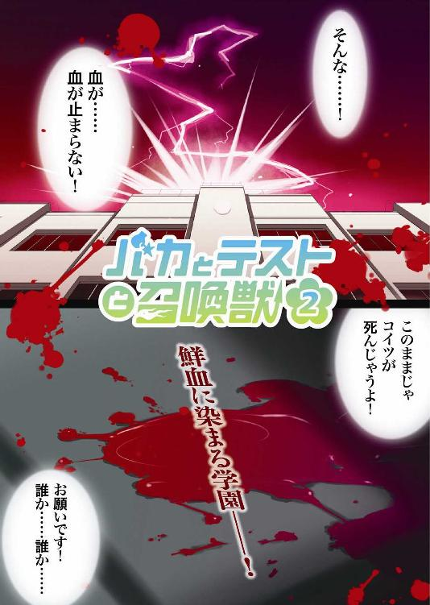
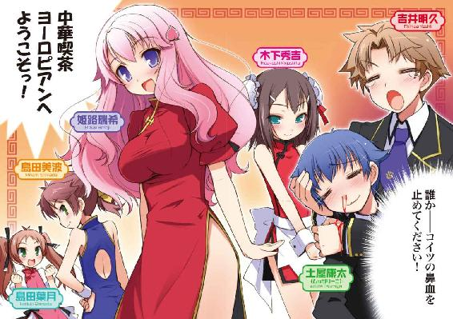
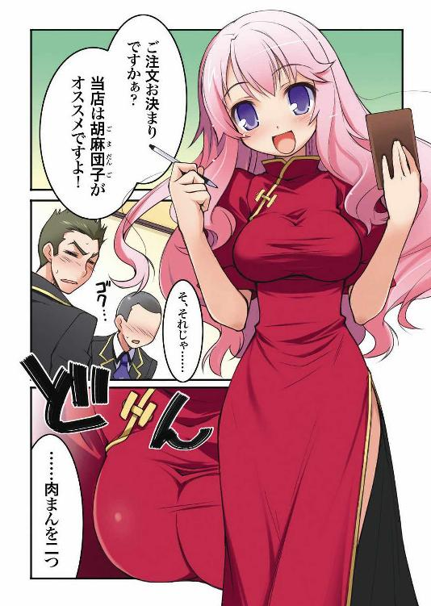
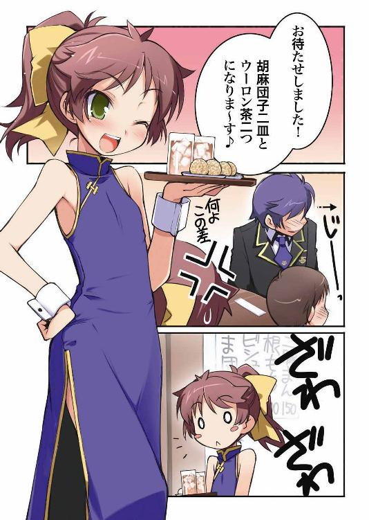
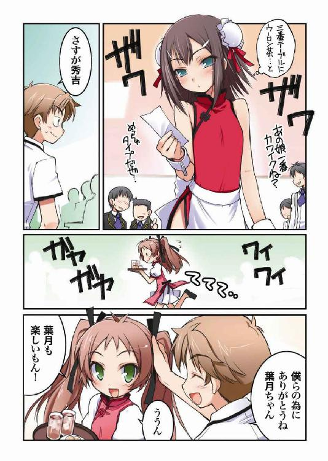
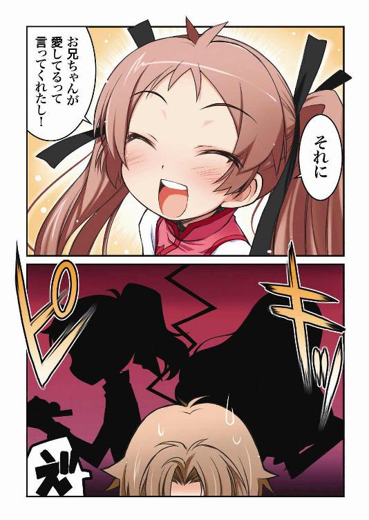
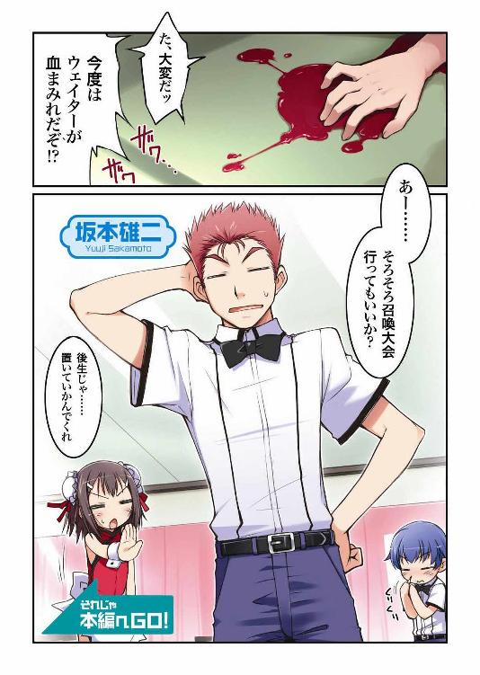
本作品の全部または一部を無断で複製、転載、配信、送信したり、ホームページ上に転載することを禁止します。また、本作品の内容を無断で改変、改ざん等を行うことも禁止します。
本作品購入時にご承諾いただいた規約により、有償・無償にかかわらず本作品を第三者に譲渡することはできません。
本作品は本文縦組で制作されております。ごらんになるリーディングシステムにより、表示の差が認められることがあります。
「なんだ？」
「......『如月ハイランド』って知ってる？」
「ああ。今建設中の巨大テーマパークだろ？ もうすぐプレオープンっていう話の」
「......とても怖い幽霊屋敷があるらしい」
「廃病院を改造したっていうアレか？ 面白そうだよな」
「......日本一の観覧車とか」
「おお、相当デカいみたいだな。聞いた話だけでも凄そうだ」
「......世界で三番目に速いジェットコースターも」
「速い上に色々な方向を向いたり、ぐるぐる回ったりするってヤツか。どんなモンなのかわからんが、考えるだけでワクワクしてくるな」
「......他にも面白いものが沢山ある」
「それは凄いな。きっと楽しいぞ」
「......それで、今度そこがオープンしたら、私と」
「ああ、お前の言いたいことはよくわかった。そこまで行きたいなら――」
「......うん」
「今度友達と行ってこいよ」
「......握力には自信がある」
「ぐああぁっ！ アイアンクローはよせっ！」
「......私と雄二、二人で一緒に行く」
「オープン直後は混みあっているから嫌ぐぎゃぁっ！」
「......それなら、プレオープンのチケットがあったら行ってくれる？」
「プ、プレオープンチケット？ ケホッ、あれは相当入手が困難らしいぞ？」
「......行ってくれる？」
「んー、そうだなー、手に入ったらなー」
「......本当？」
「あーあー。本当本当」
「......それなら、約束。もし破ったら――」
「大丈夫だっての。この俺が約束を破るようなヤツに見えるか？」
「――この婚姻届に判を押してもらう」
「命に代えても約束を守ろう」清涼祭アンケート
学園祭の出し物を決める為のアンケートにご協力下さい。
『あなたが今欲しいものはなんですか？』
姫路瑞希の答え
『クラスメイトとの思い出』
教師のコメント
なるほど。お客さんの思い出になるような、そういった出し物も良いかもしれませんね。写真館とかも候補になり得ると覚えておきます。
土屋康太の答え
『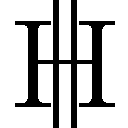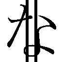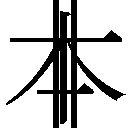 成人向けの写真集』
教師のコメント
取り消し線の意味があるのでしょうか。
吉井明久の答え
『カロリー』
教師のコメント
この回答に君の生命の危機が感じられます。桜色の花びらが坂道から徐々に姿を消し、代わりに新緑が芽吹き始めたこの季節。
僕らの通う文月学園では、新学年最初の行事である『清涼祭』の準備が始まりつつあった。
お化け屋敷の為に教室の改造を始めるクラス。焼きそばの為に調理道具を手配するクラス。この学校ならではの『試験召喚システム』について展示を行うクラス。学校祭準備の為のＬＨＲの時間は、どの教室を見ても活気が溢れている。
そして、我らがＦクラスはというと――
「吉井！ こいっ！」
「勝負だ、須川君！」
「お前の球なんか、場外まで飛ばしてやる！」
準備もせずに、校庭で野球をして遊んでいた。
「言ったな!? こうなれば意地でも打たせるもんか！」
ザッとマウンドを足で均し、ミットを構えている雄二のサインを待つ。神童とまで呼ばれるほどの頭脳を持った悪友のことだ、きっと須川君をうまく打ち取れるような指示を出してくれるに違いない。
『次の球は』
きた。雄二のサインだ。まず最初は球種の指示が来るようになっている。さて、何を投げればいい？
『カーブを』
ふむふむ。次の球はカーブを――
『バッターの頭に』
「それ反則じゃないの!?」
確かに場外まで飛ばされることはないかもしれないけど、それって何か違うよね!?
雄二の指示を無視して得意球を投げようかと思っていると、
「貴様ら、学園祭の準備をサボって何をしているか！」
「ヤバい！ 鉄人だ！」
怒髪天をつく勢いで僕らの担任である西村先生（通称 鉄人）が校舎内から走ってきた。捕まったらヤツの鍛え上げられた拳でボコボコにされてしまう！ ここはなんとか逃げ切らないと！
「吉井！ 貴様がサボりの主犯か！」
「ち、違います！ どうしていつも僕を目の仇にするんですか!?」
全力で走っているのに全然振り切れない。さすがはトライアスロンを趣味にするような体育会系だ――って、感心している場合じゃない！
「雄二です！ クラス代表の坂本雄二が野球を提案したんです！」
出し物の内容を決める為の時間に野球をやろうと言い出したのは雄二だ。きっと責任を取って制裁を受けてくれるはず！
そう考えて雄二の方を見ると、ヤツは僕に視線でこう訴えてきた。
『フォークを 鉄人の 股間に』
「違う！ 今は球種やコースを求めているんじゃない！ しかも、それをやったら単に僕が怒られるだけだよね!?」
そもそも変化球を使う意味があるんだろうか。
「全員教室へ戻れ！ この時期になってもまだ出し物が決まっていないなんて、うちのクラスだけだぞ！」
魂まで届きそうな鉄人の恫喝が響き、僕らは小汚い教室へと連れ戻されてしまった。
「さて。そろそろ春の学園祭、『清涼祭』の出し物を決めなくちゃいけない時期が来たんだが――」
野球を中断された後、Ｆクラスの代表である雄二は床にござを敷いて座る僕らを見下ろしながらそんな宣言をしてきた。
「とりあえず、議事進行並びに実行委員として誰かを任命する。そいつに全権を委ねるので、後は任せた」
心の底からどうでも良さそうな態度の雄二。さてはあの野郎、興味が無いからって全部人に押し付けて寝るつもりだな？ 準備の時間に野球を提案してきたりするし、試召戦争の時とは全然違う態度だ。
「吉井君。坂本君って学園祭はあまり好きじゃないんですか？」
話し合いの邪魔にならない程度の小声で僕に話しかけてきたのは、クラスメイトの姫路瑞希さんだ。今日も綺麗な笑顔と大きな胸が僕の目に眩しい。
「直接聞いたわけじゃないからわからないけど、楽しみにしているってことはなさそうだね。興味があるのならもっと率先して動いているはずだから」
「そうなんですか......。寂しいです......」
いつもは明るい姫路さんの表情に少し翳りがさしてしまう。
「吉井君も興味がないですか？」
少しだけ上目遣いで僕の顔を覗き込んでくる姫路さん。か、可愛い......。
「う～ん、どうだろ？ 別にそこまで何かをやりたいってわけでもないしなぁ」
これは僕の正直な気持ちだ。授業が潰れるのは純粋に嬉しいけど、学園祭でこれをやりたい、という目的のようなものはない。
「私は......吉井君と一緒に、学園祭で思い出を作りたいです」
「ほぇ？」
彼女の意味深な台詞に、思わず間抜けな声が出てしまう。
「その、吉井君は知ってますか......？ うちの学園祭ではとっても幸せなカップルが出来やすいって噂が――ケホケホッ」
と、姫路さんが急に口元に手を当てて咳をし始めた。顔も少し赤かったし、風邪だろうか？
「大丈夫？」
「は、はい。すいません......」
ちょっと苦しかったのか、若干目が潤んでいる。そう言えば、最近姫路さんが咳をしている姿をよく見るなぁ。
腐った畳から更に設備のランクを落とされた今、この教室内は傷んだござとみかん箱しかない。机と椅子に比べて格段に疲れるし、不衛生でもある。身体の弱い彼女が体調を崩してしまっても何の不思議もない。むしろ当然だろう。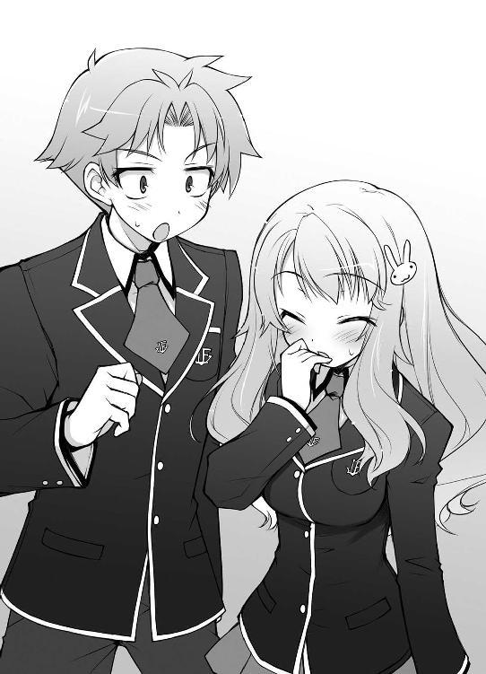
「そのうち、なんとかしないとなぁ......」
衛生的な環境と、身体に負担をかけない設備。この二つを用意しないと、姫路さんはいつか倒れてしまうような気がする。次の試召戦争まではまだ二ヶ月くらいあるし、できれば早い段階でなんとかしたいところだけど。
「んじゃ、学園祭実行委員は島田ということでいいか？」
不意に耳に飛び込んできた雄二の台詞で今の状況を思い出す。そう言えば学園祭についての話し合いをしているんだった。
「え？ ウチがやるの？ う～ん......、ウチは召喚大会に出るから、ちょっと困るかな」
突然の指名に目を白黒させているのは、ドイツ帰りの帰国子女である島田美波さん。気の強そうな目とポニーテールが特徴の女の子だ。
「雄二。実行委員なら、美波より姫路さんの方がこういう役は合ってるんじゃないの？」
「え？ 私ですか？」
話題を振られて姫路さんが小首を傾げる。気の強い美波よりも優しい姫路さんの方が、話し合いが荒れないで済むと思う。
「姫路には無理だな。多分全員の意見を丁寧に聞いているうちにタイムアップになる」
眠たげに返事をする我らがクラス代表。
そう言われてみると、確かに雄二の言うとおりだ。きっと姫路さんは少数派の意見を切り捨てたりはできないだろう。普段であれば美点なんだけど、こういった時はそれが逆に仇になってしまいそうだ。
「それにね、アキ。瑞希も召喚大会に出るのよ」
「え？ そうなの？」
「はい。美波ちゃんと組んで出場するつもりなんです」
小さな手をぎゅっと握り締める姫路さん。
「学校の宣伝みたいな行事なのに。二人とも物好きだなぁ」
僕らの通うこの文月学園には、世界的にも注目されている『試験召喚システム』というものがある。今年はその注目されているシステムを世間に公開する場として、清涼祭の期間中に『試験召喚大会』という企画が催されるらしい。僕は全く興味が無いけど。
「ウチは瑞希に誘われてなんだけどね。瑞希ってば、お父さんを見返したいって言ってきかないんだから」
「お父さんを見返す？」
「うん。家で色々言われたんだって。『Ｆクラスのことをバカにされたんです！ 許せません！』って怒ってるの」
「あらら。姫路さんが怒るなんて珍しいね」
「だって、皆のことを何もわかっていないくせに、Ｆクラスっていう理由だけでバカにするんですよ？ 許せませんっ」
「............」
ごめん。皆をよく知っている僕でも、Ｆクラスはバカの集まりだと思う。
「だからＦクラスのウチと組んで、召喚大会で優勝してお父さんの鼻をあかそうってワケ」
なるほど。実力学年二位の姫路さんと、問題さえ読めればそれなりの点数が取れる美波が組めば、優勝だって不可能じゃないかもしれない。
「三人とも。こっちの話を続けていいか？」
「あ、ゴメン雄二。美波が実行委員になる話だったよね？」
「だからウチは召喚大会に出るって言ってるのに」
「なら、サポートとして副実行委員を選出しよう。それなら良いだろ？」
チラッと雄二が僕の方を見た。まさか僕を人身御供にするつもりか？ けど、サポートがついた程度で美波が面倒な仕事を引き受けてくれるだろうか。
「ん～......。そうね、その副実行委員次第でやってもいいけど......」
「そうか。では、まず皆に副実行委員の候補を挙げてもらう。その中から島田が二人を選んで決選投票をしたらいいだろう」
皆もいいな、と雄二がクラスメイトたちに告げる。すると、教室内からちらほらと推薦の声が聞こえてきた。
「吉井が適任だと思う」
「やはり坂本がやるべきじゃないか？」
「姫路さんと結婚したい」
「ここは須川にやってもらった方が」
そろそろ姫路さんに熱烈ラブコールを送り続けているヤツをハッキリさせた方が良いかもしれない。
「ワシは明久が適任じゃと思うがの」
そうやって僕に一票を投じたのは、爺言葉の美少女、秀吉だ。実際の中身は男なんだけどね。
「って、秀吉。僕もそういう面倒な役は、できればパスしたいな～なんて」
「それは他の皆とて同意見じゃ。ならば適任の者にやってもらった方が良いじゃろう？」
「むぅ......。それはそうだけど......」
僕が適任かどうかはわからないけど、言っていることは正論だから反論できない。
でも、まぁいっか。まだ候補ってだけで決定したわけじゃないし。二人の候補を美波が選んで、決選投票をやって初めて決まるんだから。
「よし。じゃあ島田。今挙がった連中から二人を選んでくれ」
「そうね～。それじゃ......」
ある程度候補の名前が挙がると、美波はボロボロの黒板に決選投票候補者の名前を書き連ねた。
『候補①......吉井』
あ、やっぱり僕だ。
『候補②......明久』
あ、これも僕だ。
「さて。この二人のどちらが良いか、選んでくれ」
「ねぇ雄二。明らかに美波の候補の挙げ方はおかしいと思わない？」
「どうする？ どっちが良いと思う？」
「そうだなぁ......。どちらもクズには変わりないんだが......」
「こらぁっ！ 真面目に悩んでいるフリをするんじゃない！ あと、平然とクラスメイトをクズ呼ばわりするなんて、君らは人間のクズだ！」
まったく、このクラスのモラルはどうなっているんだか。
「ほらほら、アキってば。そんなことより、ウチとアンタでやることに決まったんだから、前に出て議事をやらないと」
「なんだか僕はいつもこんな貧乏くじを引かされている気がするよ......」
美波に促され、僕は渋々と席を立って前に出た。
「んじゃ、あとは任せたぞ。ふあ～......」
入れ替わりに席に戻る雄二。あくびを堪える気もないようで、全身からダルいオーラが立ち上っている。
「ウチは議事進行をやるから、アキは板書をお願いね」
「ん。了解」
ボロボロの黒板の前に立ち、かなり短くなったチョークを手に取る。やれやれ、本当に酷い設備だなぁ。これじゃ、勉強どころじゃないよ。
「それじゃ、ちゃっちゃと決めるわよ。クラスの出し物でやりたいものがあれば挙手してもらえる？」
美波が告げると、数名が手を挙げた。全員がやる気なしってわけでもないみたいだ。
「はい、土屋」
「............（スクッ）」
名前を呼ばれて立ち上がったのは、僕の友人の一人、土屋康太だ。本名よりもムッツリスケベが由来になったムッツリーニという名前の方が有名かもしれない。
「............写真館」
「......土屋の言う写真館って、かなり危険な予感がするんだけど」
美波が思いきり嫌そうな顔をする。
確かに女子から見ればムッツリーニの撮る写真は嫌かもしれない。けど、男子からするとその写真館は宝の山と言える。覗き部屋とも言えるかもしれないけど。
「アキ、一応意見だから黒板に書いてもらえる？」
「あいよー」
えっと、ムッツリーニの提案は、
【候補① 写真館『秘密の覗き部屋』】
「次。はい、横溝」
「メイド喫茶――と言いたいけど、流石に使い古されていると思うので、ここは斬新にウェディング喫茶を提案します」
「ウェディング喫茶？ それってどういうの？」
「別に普通の喫茶店だけど、ウェイトレスがウェディングドレスを着ているんだ」
中身はただの喫茶店で、着ている衣装が違うってことか。店の雰囲気も結婚式みたいにするんだろう。結構面白いかもしれない。
「斬新ではあるな」
「憧れる女子も多そうだ」
「でも、ウェディングドレスって動きにくくないか？」
「調達するのも大変だぞ？」
「それに、男は嫌がらないか？ 人生の墓場、とか言うくらいだしな」
そんな意見に、クラスの中が少しざわめく。
「ほら、アキ。今の意見を黒板に書いて」
「あ、うん」
美波に促されて、僕は再度黒板と向かい合った。
えーっと、今の横溝君の提案は――
【候補② ウェディング喫茶『人生の墓場』】
やれやれ。書きにくいチョークだ。やっぱりまともな設備が欲しいなぁ。
「さて、他に意見は――はい、須川」
「俺は中華喫茶を提案する」
そう言いながら須川君が立ち上がる。
「中華喫茶？ チャイナドレスでも着せようっていうの？」
「いや、違う。俺の提案する中華喫茶は本格的なウーロン茶と簡単な飲茶を出す店だ。そうやってイロモノ的な格好をして稼ごうってワケじゃない。そもそも、食の起源は中国にあるという言葉があることからもわかるように、こと『食べる』という文化に対しては中華ほど奥の深いジャンルはない。近年、ヨーロピアン文化による中華料理の淘汰が世間では見られるが、本来食というものは――」
な、なんだ？ よくわからないけど、須川君が随分と熱弁を振っている。相当なこだわりでもあるんだろうか？ 言ってる内容は全然理解できないけど。
「アキ。それじゃ、須川の意見も黒板に書いてくれる？」
「あ、うん」
......さて困った。須川君は一体何を話していたんだろう？ 難しい単語を含んだ長文だったから、全く内容が頭に入ってこなかった。正直、黒板になんて書けば良いのかわからない。
「どうしたの？ 早く書いてよ」
「りょ、了解」
とりあえず、頭に残っている単語を書こう。
【候補③ 中華喫茶『ヨーロピアン』】
と、書き終えたところで教室の扉がガラガラと音を立てて開き、筋骨隆々のごつい身体とそれに見合った顔を持つ男が現れた。
「皆、清涼祭の出し物は決まったか？」
先ほど僕らを追い掛け回してくれたＦクラス担任、鉄人こと西村教諭だ。
「今のところ、候補は黒板に書いてある三つです」
美波が言うと、鉄人はゆっくりと僕の字が書いてある黒板に目をやった。
【候補① 写真館『秘密の覗き部屋』】
【候補② ウェディング喫茶『人生の墓場』】
【候補③ 中華喫茶『ヨーロピアン』】
「......補習の時間を倍にした方が良いかもしれんな」
しまった！ 僕らがバカだと思われている！
『せ、先生！ それは違うんです！』
『そうです！ それは吉井が勝手に書いたんです！』
『僕らがバカなわけじゃありません！』
補習の時間を増やされたくない皆が必死になって抗弁する。でも、なんだか僕一人をバカ扱いして逃れようとしているような......。
「馬鹿者！ みっともない言い訳をするな！」
鉄人の一喝で、思わず背筋が伸びる一同。
でも、流石は腐っても教師。クラスメイトを売ってその場を逃れようとする魂胆が気に入らないなんて、ちょっと見直したよ。
「先生は、バカな吉井を選んだこと自体が頭の悪い行動だと言っているんだ！」
同級生だったらシバいているところだ。
「まったくお前達は......。少しは真面目にやったらどうだ。稼ぎを出してクラスの設備を向上させようとか、そういった気持ちすらないのか？」
溜息まじりの鉄人の台詞。それを聞いて、クラスの皆の目が急に輝きだした。
『そうか！ その手があったか！』
『なにも試召戦争だけが設備向上のチャンスじゃないよな！』
『いい加減この設備にも我慢の限界だ！』
一気に活気づく教室内。そりゃそうだ。設備が不満で試召戦争を始めた僕らだ。当時よりも更にランクの低い設備で我慢なんてしていられるはずもない。
「み、皆さんっ！ 頑張りましょう！」
と、これは姫路さんの声。見ると、彼女は立ち上がって胸の前でグーを握り、そのやる気を表現していた。
どうしたんだろう？ 設備に不満がないとは思っていなかったけど、ここまで率先して動くなんて、なんだからしくない気がする。
『出し物はどうする？ 利潤の多い喫茶店が良いんじゃないか？』
『いや、初期投資の少ない写真館の方が』
『けど、それだと運営委員会の見回りで営業停止処分を受ける可能性もあるぞ』
クラスの中に活気が溢れ、色々な意見が飛び交い始める。
『中華喫茶ならはずれはないだろう』
『それだと目新しさに欠けるな。汚いせいであまり人が来ない旧校舎だと、その特徴のなさは致命傷じゃないか？』
『ウェディング喫茶はどうだ？』
『初期投資が大きすぎる。たった二日間の清涼祭じゃ儲けは出ないんじゃないか』
『リスクが高いからこそリターンも大きいはずだ』
喧々囂々。皆がやる気になってくれたのはいいけど、これじゃ全然まとまりがない。
「はいはい！ ちょっと静かにして！」
美波がパンパンと手を叩いて注意するものの、効果はあまりない。皆がそれぞれ好きなことを言い始めている。
『お化け屋敷とかの方が受けると思う』
『簡単なカジノを作ろう』
『焼きとうもろこしを売ろう』
どんどん意見がバラバラになっていく。これはマズい。
こんなにまとまりのないクラスだったろうか？ 試召戦争の時はもっとやりやすかったような気がするけど......。
「はぁ......まったくもう......。ねぇ、アキ。坂本を引っ張り出せない？ これじゃ、あまりにまとまりが悪すぎるわ」
美波が僕に耳打ちしてくる。
流石はＦクラス。個性の強い連中が多いせいか、チームワークという言葉が微塵も感じられない。こんなクラスをまとめていたんだから、もしかすると雄二は凄いことをしていたのかもしれない。けど、
「う～ん......。無理だと思うよ。雄二は興味の無いことには驚くほど冷たいから」
雄二は学園祭や設備には全く興味を持っていない。試召戦争の時のように指揮を執ってくれたらまとまると思うんだけど、多分雄二はそんなことしてくれないだろう。
「そっか......。もうっ。とにかく静かにして！ 決まりそうにないから、店はさっき挙がった候補の中から選ぶからね！」
業を煮やした美波が無理矢理話をまとめに入った。これはこれで正しい判断だ。
「ほらっ！ ブーブー言わないの！ この三つの中から一つだけ選んで手を挙げること！ いいわね！」
反論を眼力で押さえ込み、決を採りにかかる美波。こういった役は僕や姫路さんにはできそうにない。雄二の人選もデタラメってわけではなさそうだ。
「それじゃ、写真館に賛成の人！ ――はい、次はウェディング喫茶！ ――最後、中華喫茶！」
クラス中に美波の声が響く。けど、それでも喧騒はなかなか収まりそうにない。
騒がしい中、美波が挙げられた手の本数をカウントし始める。結果、
「Ｆクラスの出し物は中華喫茶にします！ 全員、協力するように！」
接戦だったけど、僅差で中華喫茶が勝利を収めた。この選択は順当なところだと思う。
「それなら、お茶と飲茶は俺が引き受けるよ」
と、須川君が立ち上がる。
「............（スクッ）」
それと、何故かムッツリーニも立ち上がった。
「ムッツリーニ、料理なんてできるの？」
「............紳士の嗜み」
中華料理が紳士の嗜みなんて話、聞いたこともない。多分、チャイナドレス見たさで中華料理店に通っているうちに見様見真似でできるようになった、とかそんな理由だろう。ムッツリーニは手先が器用だし、物覚えも早いから安心して任せていいはずだ。
「まずは厨房班とホール班に分かれてもらうからね。厨房班は須川と土屋のところ、ホール班はアキのところに集まって！」
いつの間にか僕はホール班のトップにされていた。
「それじゃ、私は厨房班に――」
「ダメだ姫路さん！ キミはホール班じゃないと！」
平然と厨房班に入ろうとした姫路さんを呼び止める。クラスの設備がかかっているこのお店、断じて食中毒で終わらせるわけにはいかない！
『明久、グッジョブじゃ』
『............！（コクコク！）』
その破壊力を知っている秀吉とムッツリーニからのアイコンタクト。一番の被害者だった雄二は寝ているせいか気付いていない――はずなのに、よく見ると小刻みに震えている。夢の中に姫路さんの料理でも出てきたんだろうか？
「え？ 吉井君、どうして私はホールじゃないとダメなんですか？」
自覚のない必殺料理人が首を傾げる。
本当のことを話すのは簡単だけど、そんなことをしたら彼女を傷つけてしまう。
「あ、えーっと、ほら、姫路さんは可愛いから、ホールでお客さんに接した方がお店として利益が痛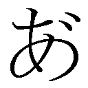っ！ み、美波！ 僕の背中はサンドバッグじゃないよ!?」
「か、可愛いだなんて......。吉井君がそう言うなら、ホールでも頑張りますねっ♪」
できればホールだけで頑張って欲しい。
「アキ。ウチは厨房にしようかな～？」
「うん。適任だと思う」
「............」
「それなら、ワシも厨房にしようかの」
「秀吉、何をバカなことを言ってるのさ。そんなに可愛いんだから、もちろんホールに決まってみぎゃあぁっ！ み、美波様！ 折れます！ 腰骨が！ 命に関わる大事な骨が！」
「......ウチもホールにするわ」
「そ、そうですね......。それが、いいと、思います......」
こんなドタバタの状態で、僕たちＦクラスの人並みの生活が懸かった学園祭は幕を開けることになった。バカテスト 地理
以下の問いに答えなさい。
『バルト三国と呼ばれる国名を全て挙げなさい』
姫路瑞希の答え
『リトアニア エストニア ラトビア』
教師のコメント
そのとおりです。
土屋康太の答え
『アジア ヨーロッパ 浦安』
教師のコメント
土屋君にとっての国の定義が気になります。
吉井明久の答え
『香川 徳島 愛媛 高知』
教師のコメント
正解不正解の前に、数が合っていないことに違和感を覚えましょう。「アキ、ちょっといい？」
帰りのＨＲも終わって放課後。特に予定も無いので帰ろうとしたところ、美波に呼び止められた。
「ん、何か用？」
「用って言うか、相談なんだけと」
ちょっと真面目な顔。景気の良い話ではなさそうだ。
「相談？ 僕で良ければ聞かせてもらうけど」
「うん。ありがと。多分、アキが言うのが一番だと思うんだけど――その、やっぱり坂本をなんとか学園祭に引っ張り出せないかな？」
坂本というと、言わずと知れた僕の悪友でＦクラスの代表、坂本雄二のことだ。
どうやら美波はＦクラスの喫茶店の成功には雄二の先導が不可欠だと判断したようだ。ムキになって自分でなんとかしようとしないあたり、賢明な子なのかもしれない。
「う～ん、それは難しいなぁ......。さっきも言ったけど、雄二は興味の無い事には徹底的に無関心だからね」
多分アイツはクラスの出し物が何に決まったかさえ知らないだろう。
「でも、アキが頼めばきっと動いてくれるよね？」
美波の何かを期待したような眼差し。
「え？ 別に僕が頼んだからって、アイツの返事は変わらないと思うけど」
「ううん、そんなことない。きっとアキの頼みなら引き受けてくれるはず。だって――」
「そりゃ確かに、よくつるんではいるけど、だからと言って別に」
「だってアンタたち、愛し合ってるんでしょう？」
「もう僕お婿にいけないっ！」
どうして真顔でそんな台詞が出てくるんだろう。
「誰が雄二なんかと！ だったら僕は、断然秀吉の方がいいよ！」
「......あ、明久？」
と、偶然近くにいた秀吉の動きが止まる。あれ？ なんだか妙なことになってない？
「そ、その、お主の気持ちは嬉しいが、そんなことを言われても、ワシらには色々と障害があると思うのじゃ。その、ホラ。歳の差とか......」
「ひ、秀吉！ 違うんだ！ もの凄い誤解だよ！ さっきのはただの言葉のアヤで！ それと、僕らの間にある障害は決して歳の差じゃないと思う！」
秀吉が顔を赤らめて俯く。ど、どうしよう！ 秀吉ならいいかも、って思えてきた！
「それじゃ、坂本は動いてくれないってこと？」
「え？ あ、うん。そういうことになるかな」
頭を振って危険な思想を追い出し、改めて美波に向かい合う。
「なんとかできないの？ このままじゃ喫茶店が失敗に終わるような......」
目を伏せ、沈んだ面持ちになる彼女。確かに、どうにか雄二を引っ張り出したいとは僕も考えている。
この喫茶店が成功したら、Ｆクラスの設備を良い物に換えられる。そうしたら姫路さんの身体の負担も減るだろう。できれば成功させたい。
「ところで、おぬしらは何の話をしておるのじゃ？ そんなに思いつめた顔をするとは、随分と深刻な話のようじゃが」
と、これはまだ少し顔が赤い秀吉の台詞。
「深刻ってほどじゃないんだけど、喫茶店の経営とクラスの設備の話で――」
「アキ、そうじゃないの。本当に深刻な話なのよ......」
「え？ どういうこと？」
なんだか美波の様子がおかしい。そう言えば、彼女はそこまで設備に対して不満があったわけでもないのに随分と熱心だ。何か事情があるのかな？
「本人には誰にも言わないで欲しいって言われてたんだけど、事情が事情だし......。けど、一応秘密の話だからね？」
「う、うん。わかった」
美波の真剣な表情に少し気圧される。
「実は、瑞希なんだけど」
「姫路さん？ 姫路さんがどうかしたの？」
「あの子、転校するかもしれないの」
「ほぇ？」
姫路さんが転校？ そんな馬鹿な。折角同じクラスになって、いよいよこれからって時に転校しちゃうなんて。まだ楽しい思い出も作ってないし、膝枕も耳掃除もしてもらってない。だいたい、彼女が転校しちゃったらこのクラスはどうなる？ 唯一の清涼剤である彼女がいなくなれば、クラスは荒廃し、暴力と略奪の跋扈する地獄になるだろう。そして全員の髪型が某世紀末救世主伝説の脇役のようにモヒカンになること間違い無しだ。それできっと秀吉を巡って血で血を洗うような抗争が続く日々に――
「む。マズい。明久が処理落ちしかけとるぞ」
「このバカ！ 不測の事態に弱いんだから！」
「明久、目を覚ますのじゃ！」
ガクガクと僕の肩を揺すってくるのは誰だろう？ ああ、秀吉か。今日も可愛いなぁ。
「秀吉......、モヒカンになった僕でも、好きでいてくれるかい......？」
「......どういう処理をしたら、瑞希の転校からこういう反応が得られるのかしら」
「ある意味、稀有な才能かもしれんのう」
......はっ!? いけない、ちょっとトんでた！
「美波！ 姫路さんが転校って、どういうことさ！」
気を取り直して、微妙な目つきで僕を見る美波に詰め寄る。
「どうもこうも、そのままの意味。このままだと瑞希は転校しちゃうかもしれないの」
「このままだと......？」
随分と妙な言い回しだ。転校って普通は決まったら覆せないものだと思うけど。
「島田よ。その姫路の転校と、さっきの話が全然つながらんのじゃが」
秀吉が小首を傾げる。
「そうでもないのよ。瑞希の転校の理由が『Ｆクラスの環境』なんだから」
「ってコトは、転校は両親の仕事の都合とかじゃなくて――」
「そうね。純粋に設備の問題ってことになるわ」
そう言われて、僕は思わず納得してしまった。
姫路さんにこのＦクラスの設備は相応しくない。それは誰もが考えることだろう。競争意識を高めるという学園の考え方は否定しないけど、姫路さんは既に高いレベルにいるはずなのにこの処遇だ。これはおかしい。ござにみかん箱という設備の上、切磋琢磨しようにも周囲の人間はバカだらけ。本人に非がないのにこんな環境では、普通の両親なら誰もが転校させようと考えるはずだ。
「それに瑞希は、身体も弱いから......」
「そうだよね。それが一番マズいよね......」
美波の言うとおり、この劣悪な教室環境は姫路さんの健康に害を及ぼす可能性がある。一応掃除はしているけど衛生的とは言いにくいし、今はまだいいけど、冬に今の調子で隙間風が入ってきたら姫路さんでなくても体調を崩してしまうだろう。
「なるほどのう。じゃから喫茶店を成功させ、設備を向上させたいのじゃな」
「うん。瑞希も抵抗して『召喚大会で優勝して両親にＦクラスを見直してもらおう』とか考えているみたいなんだけど、やっぱり設備をどうにかしないと」
Ｆクラスはバカの集まりと思われているのも転校を勧められている一因だろうから、姫路さんの行動は無駄じゃない。けど、一番の問題は姫路さんの健康だ。それをなんとかしない限り両親の考えは変わらないだろう。
「......アキはその......瑞希が転校したりとか、嫌だよね......？」
美波が探るような目でこちらを見てくる。僕がそんなに冷たい人間に見えるんだろうか。それは心外だ。
「もちろん嫌に決まってる！ 姫路さんに限らず、それが美波や秀吉であっても！」
家庭の事情でどうしようもないならともかく、こんな理由で仲間が離れていくなんて絶対に嫌だ。
「そっか......。うん、アンタはそうだよね！」
美波が嬉しそうに頷く。
ちなみに雄二だったらどうでもいいというのは秘密だ。
「そういうことなら、なんとしても雄二を焚き付けてやるさ！」
「そうじゃな。ワシもクラスメイトの転校と聞いては黙っておれん」
「それじゃ、まずは雄二に連絡を取らないとね」
ポケットから携帯を取り出して、雄二の番号を呼び出す。教室の中にヤツの姿は見当たらないけど鞄はまだあるみたいだし、学校内のどこかにはいるはずだ。
Ｐｒｒｒｒと、呼び出し音が受話器から響く。
『――もしもし』
「あ、雄二。ちょっと話が――」
『明久か。丁度良かった。悪いが俺の鞄を後で届けに――げっ！ 翔子！』
「え？ 雄二。今何をしてるの？」
『くそっ！ 見つかっちまった！ とにかく、鞄を頼んだぞ！』
「雄二!? もしもし！ もしもーし！」
携帯電話からはプー、プー、という無機質な音しか返ってこない。
「坂本はなんて言ってた？」
「えっと、『見つかっちまった』とか『鞄を頼む』とか言ってた」
「......なにそれ？」
美波が『使えないわね』といった目で睨んでくる。酷い扱いだ。
「大方、霧島翔子から逃げ回っているのじゃろう。アレはああ見えて異性には滅法弱いからの」
秀吉が腕を組んでうんうんと頷いている。
霧島さんというのは学年代表を務める才女で、長い黒髪やすらりと長い手足が魅力的な女の子だ。何を間違えたのか雄二のことが好きらしいけど......。
むぅ。なんで逃げ回る必要があるんだ。相手が霧島さんだったら、逃げ回るどころか追い回すのが普通の男の反応なのに。雄二のくせに贅沢な！
「そうすると、坂本と連絡を取るのは難しいわね」
美波が大きく息を吐く。ま、確かに連絡を取るのは難しいけど――
「いや、これはチャンスだ」
「え？ どういうこと？」
「雄二を喫茶店に引っ張り出すには丁度いい状況なんだよ。うん。ちょっと二人とも協力してくれるかな？」
「それはいいけど......坂本の居場所はわかっているの？」
「大丈夫。相手の考えが読めるのは、なにも雄二だけじゃない」
「何か考えがあるようじゃな」
「まぁね」
ニヤリと笑って、僕は二人を連れて教室をあとにした。
☆
「やぁ雄二。奇遇だね」
部屋の物陰で大きな身体を小さくしている雄二に話しかける。
「......どういう偶然があれば女子更衣室で鉢合わせするのか教えてくれ」
そう。雄二の言うとおり、ここは体育館にある女子更衣室。雄二のことだから、素直に女子禁制の男子トイレや更衣室に行くとは思えない。むしろ裏をかいて男子禁制の場所に逃げていると思ったんだけど......まさかここまで簡単に見つかるとは。
「やだな。ただの偶然だよ」
「噓をつけ。こんな場所で偶然会うワケが」
ガチャッ
音を立ててドアが開くと、その向こうには体操服姿の女子の姿があった。
「えーっと......あれ？ Ｆクラスの問題児コンビ？ ここ、女子更衣室だよね？」
「やぁ木下優子さん。奇遇だね」
「秀吉の姉さんか。奇遇じゃないか」
「あ、うん。奇遇だね」
あっはっは、と爽やかに笑ってみせる。うんうん。偶然偶然。
「先生！ 覗きです！ 変態です！」
「逃げるぞ明久！」
「了解っ！」
更衣室の小さな窓から表に飛び出す。やっぱりごまかせなかったか！
『吉井と坂本だと!? またアイツらかっ！』
「雄二、マズい！ 鉄人の声だ！」
「とにかく走れ！」
上靴だけど、構わず外を突っ走る。相手は鉄人。捕まったら最後だ。
「見つけたぞ！ 二人とも逃がすか！」
後方から野太い声が近付いてくる。くそっ！ もう追いついてきたか！
「明久！」
隣を走る雄二の声。その視線は、前方の新校舎二階にある開け放たれた窓に向いていた。あそこから校舎内に逃げ込もうってワケか。
「オーケー！」
雄二からの合図を受け、走りながら上着を脱ぐ。そして、その間に雄二が僕より先行する。
「そっちは行き止まりだ！ 観念して指導を受けろ！」
どんどん近付いてくる鉄人の声。はっきり言って怖い。
「行け、明久！」
先行していた雄二が立ち止まってこちらを向く。
「あいよっ！」
雄二が手を組んで作った踏み台に足をかけ、一気に飛び上がる。その瞬間に雄二が勢いよく腕を跳ね上げてくれたので、僕はなんなく開いている二階の窓に飛びつくことができた。
「くっ！ このバカども！ こういう時だけ無駄に運動神経を発揮するとは！」
舌打ちでもしそうな雰囲気の鉄人をよそに、校舎の中に入った僕は脱いでおいた制服を窓から垂らす。
「あらよっと！」
今度は雄二が壁を蹴って跳び、空中で僕の制服を摑んだ。
「よいしょおっ！」
その瞬間に一本釣り。ビッと制服から嫌な音がしたけど、僕らは無事に校舎内に侵入することができた。
『吉井！ 坂本！ 明日は逃がさんぞ！』
流石の鉄人も独力で二階までは来れないようで、悔しそうな遠吠えが響いてきた。
「はぁ......。また要らない悪評が増えていく......」
脱いだ制服を着直しながら、思わず溜息が出てくる。やれやれだよ。
「俺の方こそいい迷惑だ。お前が来なければこんなことにはならなかったのに」
自分に非はないとでも言わんばかりの態度だ。
「なんだよ。そもそも雄二が女子更衣室なんかに隠れていたのが悪いんじゃないか」
それがどこかの教室だったら問題なかったのに。
「し、仕方ないだろ！ 相手はあの翔子だぞ！ 普通の場所なんかで逃げ切れるか！」
確かに男子更衣室程度なら躊躇いなく入ってきそうな気がする。
「ところで、どうしてそんなに必死に霧島さんから逃げてるの？」
「......ちょっと、家に呼ばれていてな......」
雄二が苦々しい表情を浮かべる。それのどこが嫌なんだろう？
「僕から見れば羨ましいけど？ 霧島さんの部屋でしょ？ 入ってみたいけどな～」
どんな感じなんだろう？ ああ見えて、実は可愛いものが大好きでぬいぐるみでいっぱいだとか。う～ん、気になる。
「............家族に紹介したいそうだ」
「......まだ付き合ってるわけじゃないんだよね？」
彼女は若干想いが強すぎるのかもしれない。雄二に少しだけ同情心が湧いてきた。でも、残念ながらこっちの用件にそんな事情は関係ない！
「さて雄二。そんなキミに朗報ですっ」
「そうか。嫌な報せだったら殺すぞ」
「............」
本気っぽい雄二の台詞に一瞬言葉を失う。
「こ、こちらの携帯電話をどうぞ」
携帯電話を取り出し、美波の番号を呼び出して雄二に渡す。
「まったく、何の真似だ？」
雄二は訝しみながらも携帯電話を受け取り、耳に当てた。
「もしもし？ 坂本？」
「島田か。一体何の真似だ？」
「ちょっと待って。今替わるから」
「替わる？ 誰と――おい。もしもし？」
向こうの携帯電話が誰かに渡された雰囲気が伝わってくる。
「......雄二。今どこ」
「人違いです」
プツッ。
凄い判断力だ。咄嗟に『人違いです』なんて切り返せる人間はそうはいない。
「コロス」
そして片言の日本語が異様に怖い。
「まぁまぁ、ちょっと落ち着いてよ。お願いを聞いてくれたら悪いようにはしないからさ」
「お願い？ ふん。学園祭の喫茶店のことか」
こういう時、雄二が本当に神童だったと認識させられる。頭の回転がとても速いから。
「やれやれ。こんな回りくどいことをしなくても、お前が『大好きな姫路さんの為に頑張りたいんだ！ 協力して下さい！』と言えば、面倒だが引き受けてやるというのに」
「なっ!? べ、別に、そんなことは一言も......！」
「あー、はいはい。話はわかった。仕方ないから協力してやるよ」
一転して雄二の表情が楽しげなものになる。どうしてコイツはいつもいつも......！
「まぁとにかく、引き受けてくれてありがとう」
「気にするな。それより、島田と翔子は親しかったのか？」
と、探るような雄二の目つき。Ａクラスの霧島さんとＦクラスの美波が一緒にいたことが気になるらしい。
「う～ん。聞いても怒らない？」
「バーカ。どうせ引き受けたんだ。今更怒ってどうするんだ」
それもそうか。確かに引き受けてくれたことだし、もうネタをバラしてもいっか。
「それじゃ、教えてあげよう。実は電話の向こうにいたのは、霧島さんの声真似をした秀吉で」
「目をつぶって歯を食いしばれ」
噓つき。
☆
「そうか。姫路の転校か......」
ところ変わって我らがＦクラス。僕と雄二は美波と秀吉の二人と合流して、Ｆクラスの教室内にいた。
「そうなると、喫茶店の成功だけでは不十分だな」
オンボロの教室内を見渡して雄二が告げる。
「不十分？ どうして？」
「姫路の父親が転校を勧めた要因は恐らく三つ」
そう言って、雄二は指を三本立てて見せた。
「まず一つ目。ござとみかん箱という貧相な設備。快適な学習環境ではない、という面だな。これは喫茶店が成功したら利益でなんとかできるだろう」
言いながら指を一本引っ込める。
「二つ目は、老朽化した教室。これは健康に害のある学習環境という面だ」
「一つ目は道具で、二つ目は教室自体ってこと？」
「そうだ。これに関しては喫茶店の利益程度じゃ改善は難しい。教室自体の改修ともなると、学校側の協力が不可欠だ」
机や椅子ならお金を出して買うだけなので僕らでもできる。でも、教室の改修となると業者の出入りや手続きが必要になる。これは僕らにできることじゃない。雄二はそういうことが言いたいんだろう。
「そして最後の三つ目。レベルの低いクラスメイト。つまり姫路の成長を促すことのできない学習環境という面だ」
部活動とかでもそうだけど、能力を伸ばす為には実力の近い競争相手の存在が重要になる。Ｆクラスにいる限り、そんな競争相手は望むべくもない。
「参ったね。随分と問題だらけだ」
「そうじゃな。一つ目だけならともかく、二つ目と三つ目は難しいのう」
試召戦争だったら全部が一気に片付くのに、こうなると結構厄介な問題だ。
「そうでもないさ。三つ目の方は既に姫路と島田で対策を練っているんだろう？」
雄二が美波に視線を送る。
そう言えば、今日のＬＨＲで姫路さんが言ってたな。『お父さんの鼻をあかす』って。確かに召喚大会で優勝したら、Ｆクラスにも学年トップと渡り合える生徒がいるって証明できる。そうしたら競争相手の問題についてはクリアーできる。
「この前、瑞希に頼まれちゃったからね。『どうしても転校したくないから協力して下さい』って。召喚大会なんて見世物にされるだけみたいで嫌だったけど、あそこまで必死に頼まれたら、ね？」
いつもと違う優しい表情の美波に一瞬目を奪われる。まるで面倒見の良いお姉さんみたいだ。もしかしたら、小さな弟か妹でもいるのかな？
「翔子が参加するようだと優勝は厳しいが、アイツはこういった行事には無関心だしな。姫路と島田の優勝は充分ありえるだろう」
「そうだね。二人ならきっとなんとかなるよ」
霧島さんが参加するとなると、パートナーもＡクラスの人だろうし、相当苦しい勝負になるはず。彼女が召喚大会に無関心でよかった。
「本当なら姫路抜きでＦクラスの生徒が優勝するのが望ましいけどな」
「それは言いっこなしだよ」
他のメンバーなら一回戦突破すら難しいだろう。バカだから。
「姫路と島田が優勝したら、喫茶店の宣伝にもなるじゃろうし、一石二鳥じゃな」
秀吉がうんうんと頷く。僕らの教室は古くて汚い旧校舎にあるから、この宣伝の効果は決して小さくないはずだ。
「で、坂本。それはそうと、二つ目の問題はどうするの？」
二つ目の問題、教室の改修。これは僕らだけでは難しい。
「どうするも何も、学園長に直訴したらいいだけだろ？」
さも当然、と言わんばかりの雄二の態度。
「それだけ？ 僕らが学園長に言ったくらいで何とかしてくれるかな？」
「あのな。ここは曲りなりにも教育機関だぞ？ いくら方針とは言え、生徒の健康に害を及ぼすような状態であるなら、改善要求は当然の権利だ」
もしそれで何とかなるなら、三つの問題は全て解決する見込みがあるということだ。
「それなら、早速学園長に会いに行こうよ」
思い立ったが吉日、だっけ？
「そうだな。学園長室に乗り込むか。秀吉と島田は学園祭の準備計画でも考えておいてくれ。それと、鉄人を見かけたら俺たちは帰ったと言っておいてくれ」
立ち上がり、指示を出す雄二。こういうことが自然にできるっていうのは一種の才能だろう。
「うむ。了解じゃ。鉄人と、ついでに霧島翔子も見かけたらそう伝えておこう」
と、微笑む秀吉。霧島さんの名前を出されて、雄二は言葉に詰まっていた。
「アキ、しっかりやってきなさいよ」
「オッケー。任せといてよ」
美波の声援を受け、僕と雄二は学園長室を目指して教室を後にした。
☆
「......賞品の......として隠し......」
「......こそ......勝手に......如月ハイランドに......」
新校舎の一角にある学園長室の前まで来ると、扉の向こうから誰かが言い争っている声が聞こえてきた。
賞品？ 如月ハイランド？ 何の話をしているのだろう。
「どうした、明久」
「いや、中で何か話をしているみたいなんだけど」
「そうか。つまり中には学園長がいるというわけだな。無駄足にならなくて何よりだ。さっさと中に入るぞ」
取り込み中かどうかは向こうが判断するってことか。雄二の言うことももっともだ。ひとまずは折角来たんだし、用件だけは伝えてみようか。
「失礼しまーす！」
学園長室の立派なドアをノックして、僕と雄二は中にずんずんと入っていった。
「本当に失礼なガキどもだねぇ。普通は返事を待つもんだよ」
その室内で僕らを迎えたのは、長い白髪が特徴の藤堂カヲル学園長だ。試験召喚システム開発の中心人物でもある。研究をしていた人間だからか、随分規格外なところが多い人らしい。第一声でガキども、とか言ってるし。
「やれやれ。取り込み中だというのに、とんだ来客ですね。これでは話を続けることもできません。......まさか、貴女の差し金ですか？」
眼鏡を弄りながら学園長を睨み付けたのは教頭の竹原先生だ。鋭い目つきとクールな態度で一部の女子生徒には人気が高い。僕個人としてはあまり好きになれない先生だけど。
「馬鹿を言わないでおくれ。どうしてこのアタシがそんなセコい手を使わなきゃいけないのさ。負い目があるというわけでもないのに」
「それはどうだか。学園長は隠し事がお得意のようですから」
僕らにはよくわからないやりとりが行われている。学園長と教頭の話し合いということは学園の経営についてだろうか。それなら僕らがいる前で話を続けることはできないだろう。出直した方が良いのかな？
「さっきから言っているように隠し事なんて無いね。アンタの見当違いだよ」
「......そうですか。そこまで否定されるならこの場はそういうことにしておきましょう」
そう告げると、竹原先生は部屋の隅に一瞬視線を送り、
「それでは、この場は失礼させて頂きます」
踵を返して学園長室を出て行った。さっき、何かを確認していたように見えたけど、なんだろう？ この部屋に何かあるのかな？
「んで、ガキども。アンタらは何の用だい？」
と竹原先生との会話を中断されたことを気にする様子もなく、僕らに話を振る学園長。
「今日は学園長にお話があって来ました」
学園長の前に立ち、雄二が話を切り出す。意外だ。敬語を知っていたのか。
「私は今それどころじゃないんでね。学園の経営に関することなら、教頭の竹原に言いな。それと、まずは名前を名乗るのが社会の礼儀ってモンだ。覚えておきな」
こんな横柄な婆さんに礼儀を説かれるなんて、世も末だ。
「失礼しました。俺は二年Ｆ組代表の坂本雄二。それでこっちが――」
雄二が僕を示し、紹介する。
「――二年生を代表するバカです」
どうしてコイツは普通に名前を言えないのだろう。
「ほぅ......。そうかい。アンタたちがＦクラスの坂本と吉井かい」
「ちょっと待って学園長！ 僕はまだ名前を言ってませんよね!?」
さっきの紹介で僕の名前が連想されたという事実に涙が出そうだ。
「気が変わったよ。話を聞いてやろうじゃないか」
まるで映画の悪役のように口の端を吊り上げる学園長。これで人を教育しようというのだから不思議だ。
「ありがとうございます」
「礼なんか言う暇があったらさっさと話しな、ウスノロ」
「わかりました」
それにしても驚かされる。こんなにも口汚く罵倒されているのに、雄二の態度や言動は落ち着いたままだなんて。コイツがここまで大人なヤツだとは思わなかった。
「Ｆクラスの設備について改善を要求しにきました」
「そうかい。それは暇そうで羨ましいことだね」
「今のＦクラスの教室は、まるで学園長の脳みそのように穴だらけで、隙間風が吹き込んでくるような酷い状態です」
あ、言動が綻び始めた。
「学園長のように戦国時代から生きている老いぼれならともかく、今の普通の高校生にこの状態は危険です。健康に害を及ぼす可能性が非常に高いと思われます」
丁寧な口調の中に危険な言葉がちりばめられている。これは雄二も相当キレてるなぁ。
「要するに、隙間風の吹き込むような教室のせいで体調を崩す生徒が出てくるから、さっさと直せクソババア、というワケです」
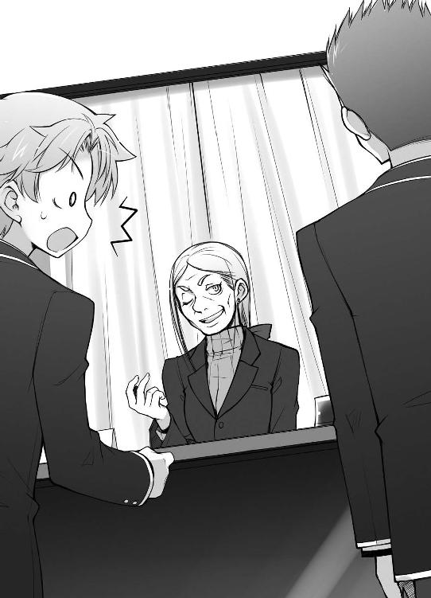
うん。やっぱり僕の知ってるいつもの雄二だ。
そんな慇懃無礼な雄二の説明を受けて、学園長は思案顔になって黙り込んだ。
「あの、学園長......？」
もしや、雄二の態度に腹を立てたのだろうか？ ま、普通は腹を立てると思うけど。
「......ふむ、丁度いいタイミングさね......」
ん？ 今何か小声で呟いていたような......。
「よしよし。お前たちの言いたいことはよくわかった」
「え？ それじゃ、直してもらえるんですね！」
さっき雄二が言ったとおりだ。変わってはいるけど、文月学園も一応教育機関なんだなぁ。生徒の健康状態が関わっているなら動いてくれるみたいだ。良かった良かった。
「却下だね」
「雄二、このババアをコンクリに詰めて捨ててこよう」
「......明久。もう少し態度には気を遣え」
はっ!? つい本音が！
「まったく、このバカが失礼しました。どうか理由をお聞かせ願えますか、ババア」
「そうですね。教えて下さい、ババア」
「......お前たち、本当に聞かせてもらいたいと思ってるのかい？」
学園長が呆れ顔で僕らを見る。僕らが何かおかしなことでも言っただろうか？
「理由も何も、設備に差をつけるのはこの学園の教育方針だからね。ガタガタ抜かすんじゃないよ、なまっちろいガキども」
こ、このババア......！
「それは困ります！ そうなると、僕らはともかく身体の弱い子が倒れて」
「――と、いつもなら言っているんだけどね」
僕の台詞を遮り、学園長が顎に手を当てて続きを話し始める。
「可愛い生徒の頼みだ。こちらの頼みも聞くなら、相談に乗ってやろうじゃないか」
交換条件か。ただで話を聞いてくれるほど甘くないってわけだ。
「............」
おや？ 雄二が何の反応もしない。口元に手を当てて何か考えているみたいだ。
「その条件って何ですか？」
仕方ないので、急に黙りこんだ雄二に代わって僕が前に出て話を促す。
「清涼祭で行われる召喚大会は知ってるかい？」
「ええ、まぁ」
「じゃ、その優勝賞品は知ってるかい？」
「え？ 優勝賞品？」
賞品があること自体知らなかった。出場する気が無かったし、出たとしても優勝できるなんて思えないし。
「学校から贈られる正賞には、賞状とトロフィーと『白金の腕輪』、副賞には『如月ハイランド プレオープンプレミアムペアチケット』が用意してあるのさ」
ペアチケット、と聞いて雄二がピクッと反応した。どうかしたのかな？
「はぁ......。それと交換条件に何の関係が」
「話は最後まで聞きな。慌てるナントカは貰いが少ないって言葉を知らないのかい？」
知らない。
「この副賞のペアチケットなんだけど、ちょっと良からぬ噂を聞いてね。できれば回収したいのさ」
「回収？ それなら、賞品に出さなければいいじゃないですか」
「そうできるならしているさ。けどね、この話は教頭が進めたとは言え、文月学園として如月グループと行った正式な契約だ。今更覆すわけにはいかないんだよ」
そう言えば前に噂で、『学園長は召喚システムの開発に手一杯で、経営に関しては教頭に一任している』なんて聞いたことがある。どうやらあれは本当のことみたいだ。
「契約する前に気付いて下さいよ。学園長なんだから」
「うるさいガキだね。白金の腕輪の開発で手一杯だったんだよ。それに、悪い噂を聞いたのはつい最近だしね」
学園長が眉をしかめる。口調とは裏腹に、若干責任を感じているみたいだ。
「それで、悪い噂ってのは何ですか？」
つまらない内容なんだけどね、と前置きして学園長は口を開いた。
「如月グループは如月ハイランドに一つのジンクスを作ろうとしているのさ。『ここを訪れたカップルは幸せになれる』っていうジンクスをね」
「？ それのどこが悪い噂なんです？ 良い話じゃないですか」
「そのジンクスを作る為に、プレミアムチケットを使ってやって来たカップルを結婚までコーディネートするつもりらしい。企業として、多少強引な手段を用いてもね」
「な、なんだと!?」
突然雄二が大声を上げた。ビックリしたぁ～。
「どうしたのさ、雄二。そんなに慌てて」
「慌てるに決まっているだろう！ 今ババアが言ったことは、『プレオープンプレミアムペアチケットでやってきたカップルを如月グループの力で強引に結婚させる』ってことだぞ!?」
「う、うん。言い直さなくてもわかってるけど」
こんなにうろたえている雄二は初めて見た。ちょっと新鮮。
「そのカップルを出す候補が、我が文月学園ってわけさ」
「くそっ。うちの学校は何故か美人揃いだし、試験召喚システムという話題性もたっぷりだからな。学生から結婚までいけばジンクスとしては申し分ないし、如月グループが目をつけるのも当然ってことか」
悔しげに唇を嚙む雄二。なんだかさっきから様子がおかしいな？
「ふむ。流石は神童と呼ばれていただけはあるね。頭の回転はまずまずじゃないか」
学園長が雄二の独白を受けて頷く。随分雄二のことに詳しいな。さっきは僕の名前もすんなり出てきたし。
「雄二、とりあえず落ち着きなよ。如月グループの計画は別にそこまで悪いことでもないし、第一僕らはその話を知っているんだから、行かなければ済む話じゃないか」
大方、霧島さんに連れていかれるのを恐れているんだろう。羨ましい男だ。
ちなみに僕だったら行く相手すら見つからない。それはそれで寂しいなぁ......。
「......絶対にアイツは参加して、優勝を狙ってくる......。行けば結婚、行かなくても『約束を破ったから』と結婚......。俺の、将来は......！」
雄二の目が虚ろだ。一体何があったんだ？ 霧島さんに『チケットを手に入れたら一緒に行ってやる』なんて安請け合いでもしたんだろうか。約束を破ったときの代償が何かはわからないけど、相変わらずバカなことをしているなぁ。
「ま、そんなワケで、本人の意思を無視して、うちの可愛い生徒の将来を決定しようって計画が気に入らないのさ」
本当に生徒を可愛いと思っているのかは疑問だが。
「つまり交換条件ってのは――」
「そうさね。『召喚大会の賞品』と交換。それができるなら、教室の改修くらいしてやろうじゃないか」
ふむ。召喚大会の賞品と交換か。それなら、
「無論、優勝者から強奪なんて真似はするんじゃないよ。譲ってもらうのも不可だ。私はお前たちに召喚大会で優勝しろ、と言ってるんだからね」
くっ！ 読まれていた！ やっぱり破天荒に見えても教育者ってことか。不正は許してくれないらしい。
「......僕たちが優勝したら、教室の改修と設備の向上を約束してくれるんですね？」
「何を言ってるんだい。やってやるのは教室の改修だけ。設備についてはうちの教育方針だ。変える気はないよ」
やっぱりそうきたか。こんな取引で設備を導入したら、他のクラスに示しがつかないからなぁ......。
「ただし、清涼祭で得た利益でなんとかしようっていうなら話は別だよ。特別に今回だけは勝手に設備を変更することに目を瞑ってやってもいい」
学園長からの提案。本当なら学園の方針だから、自分たちでお金を出して設備を変えることすら許さないが、取引に応じるなら目を瞑ってくれるってワケだ。
「そこをなんとかオマケして設備の向上をお願いできませんか？ 僕らにとっては教室の改修と同じくらい設備の向上も重要なんです」
「それで？」
「もしも喫茶店がうまくいかずに設備の向上が危うかったら、そっちが気になって大会に集中できずに僕らも学園長も困ったことに......」
「なんだ、それだけかい。ダメだね。そこは譲れないよ」
「でも！ 設備の向上を約束してくれたら大会だけに――」
「明久、無駄だ。ババァに譲る気が無いのは明白だ。この取引に応じるしか方法はない」
いつの間にか正気に戻った雄二が僕の肩を叩く。
......くそっ。悔しいけど、元々僕たちには取引に応じる以外の選択肢なんてないんだった。
「わかりました。この話、引き受けます」
「そうかい。それなら交渉成立だね」
学園長は『計画通り』といった顔をしてニヤリと笑った。
「ただし、こちらからも提案がある」
話もまとまったし、教室に戻ろうと思ったところで雄二が学園長に話しかけた。
「なんだい？ 言ってみな」
「召喚大会は二対二のタッグマッチ。形式はトーナメント制で、一回戦が数学だと二回戦は化学、といった具合に進めていくと聞いている」
一回戦の科目が数学と決まれば、一回戦に参加する全員が数学で戦う。二回戦で別の科目に変わるのは、一回戦で消耗した点数でそのままやり合うと、試合の派手さに欠けるからだろうか。一応学校の宣伝行事みたいだし。
「それがどうかしたかい？」
「対戦表が決まったら、その科目の指定を俺にやらせてもらいたい」
そう告げる雄二は、何故か学園長の反応を試しているかのように鋭い目つきをしていた。何か気になることでもあったのだろうか？
「ふむ......。いいだろう。点数の水増しとかだったら一蹴していたけど、それくらいなら協力しようじゃないか」
「......ありがとうございます」
雄二の目つきが更に鋭くなった。僕らにとってありがたい話なのに、どうしてそんな表情をするんだろう。よくわからないヤツだなぁ。
「さて。そこまで協力するんだ。当然召喚大会で、優勝できるんだろうね？」
学園長が念を押してくる。そこまで如月グループの計画を阻止したいのだろうか？
「無論だ。俺たちを誰だと思っている？」
雄二の不敵な笑み。これは試召戦争の時にも見た、やる気全開の表情だ。
「絶対に優勝して見せます。そっちこそ、約束を忘れないように！」
もちろん僕だってやる気は全開だ。問題解決の手段がはっきりしたんだ。あとはやるべきことをやるだけなんだから。
「それじゃ、ボウズども。任せたよ」
「「おうよっ！」」
こうして、文月学園最低コンビが誕生することになった。清涼祭アンケート
学園祭の出し物を決める為のアンケートにご協力ください。
『喫茶店を経営する場合、制服はどんなものが良いですか？』
姫路瑞希の答え
『家庭用の可愛いエプロン』
教師のコメント
いかにも学園祭らしいですね。コストもかからないですし、良い考えです。
土屋康太の答え
『スカートは膝上15センチ、胸元はエプロンドレスのように若干の強調をしながらも品を保つ。色は白を基調とした薄い青が望ましい。トレイは輝く銀で照り返しが得られるくらいのものを用意し裏にはロゴを入れる。靴は５センチ程度のヒールを――』
教師のコメント
裏面にまでびっしりと書き込まなくても。
吉井明久の答え
『ブラジャー』
教師のコメント
ブレザーの間違いと信じています。「いつもはただのバカに見えるけど、坂本の統率力は凄いわね」
「ホント、いつもはただのバカなのにね」
清涼祭初日の朝。
僕らの教室はいつもの小汚い様相を一新して、中華風の喫茶店に姿を変えていた。
「このテーブルなんて、パッと見は本物と区別がつかないよ」
教室内のいたるところに設置されているテーブル。実はこれ、僕らの教室にあったみかん箱だったりする。巧く積み重ねて小綺麗なクロスをかけることで、汚い箱は立派なテーブルに変身していた。
「あ、それは木下君が作ってくれたんですよ。どこからか綺麗なクロスを持ってきて、こう手際よくテキパキと」
尊敬の目で秀吉を見ている姫路さん。
そっか。このクロス、演劇部で使っている小道具か。道理で良い生地だと思った。
「ま、見かけはそれなりのものになったがの。その分、クロスを捲るとこの通りじゃ」
秀吉がクロスを捲る。すると、その下には見慣れた汚い箱が。
「これを見られたら店の評判はガタ落ちね」
美波が僕の隣から覗き込んでくる。確かに彼女の言うとおり、こんなみすぼらしいみかん箱を見られたら、イメージダウンは免れない。
「きっと大丈夫だよ。こんなところまで見ないだろうし、見たとしてもその人の胸の内にしまっておいてもらえるさ」
「そうですね。わざわざクロスを剝がしてアピールするような人は来ませんよ、きっと」
そんなことをするヤツがいるとしたら、営業妨害が目的としか思えない。
「室内の装飾も綺麗だし、これならうまくいくよね？」
学園祭のレベルとしては充分過ぎるほどの完成度だ。これならお客さんも沢山来てくれるだろう。
「............飲茶も完璧」
「おわっ」
いきなり後ろから響くムッツリーニの声。いつもながら存在感を消すのが巧い。別に常日頃はそんなことをしなくてもいいと思うんだけどな。
「ムッツリーニ、厨房の方もオーケー？」
「............味見用」
そう言ってムッツリーニが差し出したのは、木のお盆。上には陶器のティーセットと胡麻団子が載っていた。
「わぁ......。美味しそう......」
「土屋、これウチらが食べちゃっていいの？」
「............（コクリ）」
「では、遠慮なく頂こうかの」
姫路さん、美波、秀吉の三人が手を伸ばし、作りたてで温かい胡麻団子を勢いよく頰張る。
「お、美味しいです！」
「本当！ 表面はカリカリで中はモチモチで食感も良いし！」
「甘すぎないところも良いのう」
と、大絶賛。やっぱり女の子。甘い物が好きなんだなぁ、三人とも。
「お茶も美味しいです。幸せ......」
「本当ね～......」
姫路さんと美波の目がトロンと垂れる。トリップ状態だ。そんなに美味しいんだろうか？
「それじゃ、僕も貰おうかな」
「............（コクコク）」
ムッツリーニが残った一つを僕に差し出す。
楊枝がないので、手でつまんで軽く一口だけ頰張ってみた。
「ふむふむ。表面はゴリゴリでありながら中はネバネバ。甘すぎず、辛すぎる味わいがとっても――んゴパっ」
僕の口からありえない音が出た。そして目に映るのは僕の一六年間の人生の軌跡。ああ、あの頃は良かったなぁ......って、これは走馬灯じゃないか！
「あ、それはさっき姫路が作ったものじゃな」
「............!!（グイグイ！）」
「む、ムッツリーニ！ どうしてそんなに怯えた様子で胡麻団子を僕の口に押し込もうとするの!? 無理だよ！ 食べられないよ！」
ムッツリーニが団子の残り半分を僕の口に押し付けてくる。これは走馬灯を見ることのできる特殊な飲茶だ！ 一般人は決して口にしちゃいけない！
「うーっす。戻ってきたぞー」
と、そんなところに雄二が戻ってきた。
「あ、雄二。おかえり」
「ん？ なんだ、美味そうじゃないか。どれどれ？」
そして、躊躇いなく僕の食べかけのバイオ兵器を口に運ぶ。
「......たいした男じゃ」
「雄二。キミは今、最高に輝いてるよ」
「？ お前らが何を言っているのかわからんが......。ふむふむ。表面はゴリゴリでありながら中はネバネバ。甘すぎず、辛すぎる味わいがとっても――んゴパっ」
あ、なんか既視感。
「あー、雄二。とっても美味しかったよね？」
床に倒れ伏した雄二に対して『これは姫路さんの料理だよ。まさか酷いことなんて言わないよね？』と目で訴える。目が合ってないから伝わったのか不安だけど。
「ふっ。何の問題も無い」
床に突っ伏したままで、雄二が返事をしてきた。
「あの川を渡ればいいんだろう？」
それはきっと三途の川だ。
「ゆ、雄二！ その川はダメだ！ 渡ったら戻れなくなっちゃう！」
まさかあの一口で致命傷だったなんて。姫路さんの手料理、相変わらず恐ろしいキレ味だ。
「え？ あれ？ 坂本君はどうかしたんですか？」
きちんとした方の胡麻団子で夢見心地になっていた姫路さんが、ようやくこっちの様子に気が付く。見られていなくて良かった。
「あ、ホントだ。坂本、大丈夫？」
美波も今までトリップしてたのか。これはもしかすると、失敗していない方の胡麻団子はかなりイケてるのかもしれない。売り上げへの期待大だ。
「大丈夫だよ、ちょっと足が攣っただけみたいだから。おーい、ゆーじー、おきろー」
とりあえず、おどけた口調で雄二を起こす仕草をしてみる。ただし、手は必死に心臓マッサージをしながら。こうなると生死は五分五分だ......！
「六万だと？ バカを言え。普通渡し賃は六文と相場が決まって――はっ!?」
よしっ、蘇生成功。こうして、人知れず尊い命がまた一つ救われたのです。
「雄二、足が攣ったんだよね？」
すかさず余計なことを言い出す前に畳み掛ける。今回はアイコンタクトの余裕もない。
「足が攣った？ バカを言うな！ あれは明らかにあの団子の――」
「......もう一つ食わせるぞ」
「足が攣ったんだ。運動不足だからな」
雄二が頭の良い奴で本当に良かった。流石の僕でもクラスメイトを殺すのは忍びない。
（......明久、いつかキサマを殺す）
（......上等だ。殺られる前に殺ってやる）
笑顔を貼り付けて小声のやり取り。こんな僕らは仲良し二人組。
「ふーん。坂本ってよく足が攣るのね？」
マズいな。以前と同じような状況を美波が怪しんでる。
「ほら、雄二って余計な脂肪がついてないでしょう？ そういう身体って、筋が攣りやすいんだよ。美波も胸がよく攣るからわかるとぐべぁっ！」
「......俺が手を下すまでもなかったな」
美波の拳を受けた僕に、雄二が哀れみの視線を送ってくる。なんだか最近こんなのばっかりだ......。
「ところで、雄二はどこに行っておったのじゃ？」
秀吉がそれとなく話題を逸らしてくれる。さすが、わかってる。
「ああ、ちょっと話し合いにな」
雄二にしては珍しく歯切れの悪い返事。
実は学園長室に行って例の試験科目の指定をしてきたところだ。でも、フェアなことではないので正直には話せず、雄二は適当にごまかしていた。
「そうですか～。それはお疲れ様でした」
人を全く疑わない姫路さんがその言葉を信じて笑みを贈る。なんていい子なんだ。
「いやいや、気にするな。それより、喫茶店はいつでもいけるな？」
「バッチリじゃ」
「............お茶と飲茶も大丈夫」
本当に大丈夫と言えるんだろうか？ 姫路さん製の飲茶が混ざっていないか、一抹の不安がよぎるんだけど。
「よし。少しの間、喫茶店は秀吉とムッツリーニに任せる。俺は明久と召喚大会の一回戦を済ませてくるからな」
そう言って秀吉とムッツリーニの肩を叩く。
「あれ？ アンタたちも召喚大会に出るの？」
確認するように僕を見る美波。
「え？ あ、うん。色々あってね」
適当に言葉を濁す。学園長から『チケットの裏事情については誰にも話すな』と言われているので、下手なことは言えない。けど、どうして話しちゃいけないんだろう？
「もしかして、賞品が目的とか......？」
美波の探るような視線が刺さる。
「う～ん。一応そういうことになるかな」
詳しく言うと賞品と設備の交換が目的だけどね。
そう言えば白金の腕輪ってのも賞品みたいだけど、あれも交換するのかな？ 噂によると召喚獣を二体同時に喚び出せるタイプと、先生の代わりに立会人になれるタイプの腕輪があるとか。特別欲しいわけじゃないけど、貰えるなら貰っておきたい。
「......誰と行くつもり？」
「ほぇ？」
美波の目がスッと細くなった。こ、これは......攻撃色!?
「吉井君。私も知りたいです。誰と行こうと思っていたんですか？」
気が付けば姫路さんまで戦闘モード。
「だ、誰と行くって言われても......」
きっと二人が言っているのはペアチケットのことだろう。
困った。誰と行くも何も、学園長に渡すだけなんだけどな。でも、約束したから正直には言えないし......。
「明久は俺と行くつもりなんだ」
答えに詰まっていると、すかさず雄二のフォローが入った。
それを聞いて目を丸くしている美波。ふふっ。驚くのも無理はない。
「え？ 坂本とペアチケットで、『幸せになりに』行くの......？」
なぜなら、僕自身ですら驚きの新事実なのだから。
ってバカぁっ！ 誰が雄二と幸せになりに行くんだよ！ これは物凄い誤解だよ！
（明久、堪えるんだ。事情を知られたら、ババアに約束を反故にされるぞ）
雄二から小声のメッセージが届く。これ以上ないほど不本意だけど、これも姫路さんの為。雄二も同性愛疑惑を我慢するみたいだし、ここは僕もグッと堪えて......
「俺は何度も断っているんだがな」
え？ 何？ 裏切り？
「アキ。アンタやっぱり、木下よりも坂本の方が......」
「ちょっと待って！ その『やっぱり』って言葉は凄く引っかかる！ それと秀吉！ 少しでも寂しそうな表情をしないでよ！」
マズい。このままだと間違った情報が流れて、同性愛の似合いそうな生徒ランキングがまた上がってしまう！
「吉井君。男の子なんですから、できれば女の子に興味を持った方が......」
「それができれば明久だって苦労はしてないさ」
「雄二、もっともらしくそんなことを言わないで！ 全然フォローになってないから！」
コイツとはいつか決着をつけねばなるまい。
「っと、そろそろ時間だ。行くぞ明久」
「......くっ！ と、とにかく、誤解だからね！」
まるで小悪党の捨て台詞のように弁明し、僕と雄二は教室を後にした。
☆
「えー。それでは、試験召喚大会一回戦を始めます」
校庭に作られた特設ステージ。そこで召喚大会が催される。
「三回戦までは一般公開もありませんので、リラックスして全力を出してください」
今回立会人を務めるのは数学の木内先生。当然勝負科目は数学となる。
「頑張ろうね、律子」
「うん」
対戦相手の女子二人が頷き合う。微笑ましい光景だ。
ところで、どこかで見た二人のような......？
「では、召喚して下さい」
「「試獣召喚っ！」」
相手の二人が喚び声をあげると、お馴染みの魔法陣が足元に現れて召喚者の姿をデフォルメした形態を持つ試験召喚獣が喚び出された。
『Ｂクラス 岩下律子 ＆ Ｂクラス 菊入真由美
数学 １７９点 ＆ １６３点 』
向こうは二人とも似たような装備の召喚獣だ。西洋風の鎧と剣を持っている。姫路さんの召喚獣を一般的な強さにしたような感じだ。
「さて、僕らも召喚しようか」
「そうだな」
「「試獣召喚」」
現れる僕らの召喚獣。僕の召喚獣は相変わらずの改造制服と木刀を装備している。一方、神童とまで謳われた我らが代表の召喚獣は――
「......素手？」
何も手に持っていないように見える。目に見えない剣だとか？
「馬鹿が。よく見ろ」
雄二が召喚獣を動かし、拳を掲げてみせる。
「メリケンサックを装備しているだろう？」
「ざ、雑魚だ！ 雑魚がいる！」
なんて弱そうな召喚獣なんだ。装備がメリケンサックなんて、他の召喚獣には一体もいなかったぞ。
「行くわよ、修学旅行のお土産コンビ」
「律子、違うよ。チンピラコンビだよ」
僕らの召喚獣は木刀＆メリケンサックを手にした改造制服のコンビだ。もはや何を言われても否定できない。
『Ｆクラス 坂本雄二 ＆ Ｆクラス 吉井明久
数学 １７９点 ＆ 63点 』
僕らの点数が参考として表示される。
「!? ゆ、雄二！」
「なんだ」
「どうしてそんな点数になってるの!?」
１７９点なんて、Ｂクラス並の点数だ。バカのはずなのに！ バカのはずなのに！
「前回の試召戦争以来、Ａクラスに勝つ為に本気で勉強をしているからな」
と、何故か苦々しい表情で告げる雄二。
この短期間でここまで伸びるとは。流石に神童と呼ばれただけのことはある。
「でも、なんで勉強を？」
雄二は『勉強なんてできなくてもやっていける』ということを証明したくてＡクラスに勝負を挑んだはずだけど。それを覆してでも負けられない理由でもあるのだろうか？
「前に、翔子に聞かれたんだ」
「何を？」
「..................式はどこで挙げたいか、と」
霧島さんは本当に一途だなぁ。
「俺はもう負けられない！ 次で勝たないと、俺の人生は！ 俺の人生は......！」
「雄二落ち着いて！ きっと幸せな家庭を築けるから！」
暴れだしそうになる雄二を羽交い絞めにする。
なるほど。道理であの雄二が勉強を頑張るわけだ。
「そろそろ開始してもらえますか？」
木内先生が困った顔で僕らを見る。相手の二人も少し呆れ顔だ。
「あ、すいません。もう大丈夫ですから。ホラッ」
「婿入りは嫌だ......。霧島雄二なんて御免ぼごぁっ！ はっ!?」
とりあえず殴って正気に戻らせる。壊れた雄二の修理法、その２だ。
「若干不安もありますが、とにかく始めてください」
そう告げると、木内先生は僕らから若干距離を取った。
対戦相手の二人と向かい合い、勝負が始まる。
「律子！」
「真由美！」
「「行くわよ！」」
向こうの二人は名前を呼び合って頷き、僕らを挟み込むように移動してきた。
「へぇ～。結構息が合っているね」
「そのようだな。オンナノコの仲良しごっことしては、それなりに良くできているな」
こちらも雄二と頷き合う。
「し、失礼ね！」
「私たちのチームワークは最強よ！」
少々怒った様子で反論してくるＢクラスコンビ。
やれやれ。そこまで言うなら――本当のコンビネーションというものを見せてあげようか。
「雄二っ！」
相棒に目で合図を送る。僕らの仲だ。言いたいことは伝わっているはずだ。
「明久っ！」
向こうからの返事に僕も頷く。そして息を大きく吸って、それぞれの意見を口にした。
「「ここは任せたっ！」」
意見は一致。僕らは二人揃って大きく飛び退った。
「って雄二！ お互い相手に任せてどうするのさ！」
「いや、ここは明らかにお前の出番だろう！ 俺は前の試召戦争で召喚をしたことがないんだぞ!?」
「なっ、なんて使えない男なんだ！ それならせめて僕の盾になれ！」
「使えないとはなんだ！ お前なんて点数がゴミみたいなもんじゃないか！」
「言ったな!? 上等だ！ 表に出ろ！」
「望むところだ！」
お互いに胸倉を摑み合う。まさかここまで馬鹿なヤツだとは思わなかった！
「男の子の仲良しって変わってるね......」
「私たち、女で良かったね」
はっ！ 凄く蔑んだ目で見られてる！
「............あ～、コホン」
間を取る為に、一つ咳払いをしてから相手に告げる。
「コンビネーションは五分五分というところか」
「「ええっ!?」」
敵の女子二人の声が重なる。なんだいその心外そうな顔は。
「でも、僕らには学力とは別の『知恵』というものがある！ コンビネーションは同等でも、知恵を使った作戦で僕らの勝ちは決まったようなものさ！」
「律子。あの人、あくまでもコンビネーションは同等ということにしたいみたいだよ？」
「気にしちゃダメ。アイツはちょっとアレな人なんだから」
どんどん僕の評判が一つの方向に収束し始めているような気がするけど、ひとまずそのことは考えないようにしよう。
「雄二、例の作戦を発表してくれ！」
隣の雄二に話を振る。ちなみに僕は作戦なんて何も考えていない。
「いいだろう。俺の作戦はこうだ」
勿体ぶって雄二が作戦の内容を口にする。
「明久が片方を引き付け――」
「ふむふむ」
「――その間に明久がもう一方を倒す」
「それ両方僕の仕事になってない？」
雄二が楽をするだけの作戦のような気がする。
「明久！ ここまできたら小細工は無用！ 真っ向勝負だ！」
「明らかに無策をごまかしているようにしか聞こえないけど了解！ 一人一殺で僕らの勝利だ！」
お互いに自分の正面にいる敵に召喚獣を突っ込ませる。作戦なんて弱者が考えるものさ！
「律子、どうしよう？」
「こんなバカ相手に私たちが負けるわけないわ！ 受けて立ちましょう！」
「うんっ！」
二対二ではなく、一対一が二つという構図になる。僕の相手は律子と呼ばれていた髪の長い女の子だ。
「やあっ！」
敵が手にしている剣を振り下ろしてくる。僕はその動きに合わせて召喚獣を一歩だけ横に動かした。
「このっ！」
避けられた為、今度は大きく横に薙いで来る。距離をよく測って、小さく一歩後退。
「この、このぉっ！」
ムキになって振り回してくる敵の剣を小さな動きで避けさせる。
「う～ん......。なんだか弱いものいじめになっちゃいそうだ」
相手の動きはどう見ても召喚獣の扱いに慣れているそれではない。
そういえばこの子、前の試召戦争でも姫路さんに一撃でやられていたな。折角の実戦を早々に戦線離脱となったわけだし、慣れていなくても当然か。
とは言え、いつまで避けていても埒があかないし、
「そろそろ――いきますかぁっ！」
大振りの攻撃を避けざま、木刀を握り締めて僕の分身は攻勢に転じた。
「え？ わっ！ きゃあっ！」
僕の場合は敵の鎧の隙間を狙って的確に攻撃を叩き込まないと効果が無い。一息で眉間、首筋、腿の三カ所を打ち据える。一撃が弱いなら手数で勝負だ！
......でも、改造制服を着て木刀で女の子を滅多打ちにしている光景って、どう見ても僕が悪役だよね......。
「ふはははは！ 無駄無駄無駄ぁっ！」
なんか、遠くからはもっと悪役っぽい声が聞こえてきた。敵を警戒しながら目をやると、その先には拳で剣と渡り合っているおかしな召喚獣がいた。メリケンサック、意外と強いのかもしれない。
「......教育者としては、坂本・吉井ペアにはぜひとも負けてもらいたいものです」
木内先生の呟きが聞こえてくる。可憐な女子生徒がヤンキーにいじめられている光景でも連想したのだろう。僕だって当事者でなければ、間違いなく向こうの味方だ。
「とどめっ！」
雄二の召喚獣が拳を敵の腹にブチ込む。僕と違って高得点だから威力もあるので、その拳は相手の鎧を貫いて本体に届いていた。
「それじゃ、僕も」
威力が低いとは言え、度重なる攻撃を受けてボロボロになった相手に渾身の一撃を叩き込む。これで終わりだ。
「くぅぅっ！ 悔しいぃっ！」
「こんなのに負けるなんてっ！」
相手の二人が揃って僕らを睨みつけてきた。
むぅ。こんなのって言われても。ちょっと傷つくなぁ。
「......勝者、坂本・吉井ペア」
凄く不服そうに木内先生が勝者の名を告げる。とりあえず一回戦は突破だ。
「まずは一勝だな、明久」
「そうだね」
雄二が意外と戦力になるようでホッとした。さっきの戦闘も危なげなかったし、なんでも器用にこなす男だな。
「それじゃ、改めて――」
「うん」
にこやかに向かい合い、お互いに手を差し出す僕ら。
「さっきの決着をつけるぞクソ野郎！」
「それはこっちの台詞だよバカ野郎！」
死闘を乗り越え、僕らの絆は更に強くなった。
☆
「明久に雄二。殴り合いなぞしておらんで、急いで教室に来てくれんかの？」
相棒と友情を確認し合っていると、校庭の特設ステージに秀吉がやってきた。少し息が弾んでいるところを見ると、急いでいるみたいだ。
「あれ？ 喫茶店で何かあったの？」
「うむ。少々面倒な客がおっての。すまぬが話は歩きながらで頼む」
「あ、うん。了解」
先を急ぐ秀吉に続く僕と雄二。どうやらトラブル発生と見て間違いなさそうだ。
「......営業妨害か？」
歩いている雄二の目が細くなる。学園長のところに行った時と同じ目つきだ。何か思うところがあるのだろうか。
「あはは、まさか。学園祭の出店程度で営業妨害なんて出てこないんじゃない？ そんな真似をしたところで何のメリットもないと思うよ」
せいぜい僕らが大会に集中できなくなるとか、そういった程度だ。
「いや、それが雄二の言ったとおりなんじゃ」
秀吉の端整な顔が歪む。まさか本当に営業妨害？
「そうか。相手はどこのどいつだ？」
「うちの学校の三年じゃな」
しかもよりによって三年生か。まったく、生徒の中では一番大人のくせに。
「ま、そういうトラブルなら雄二にお任せだね。チンピラにはチンピラを充てるのが一番だよ」
実際に雄二は腕っ節も強いし、こういうことにはうってつけだ。
「それが人にものを頼む態度か？ ......まぁいい。喫茶店がうまくいかなければ、明久の大好きな姫路が転校してしまうからな。協力してやろう」
「べっ！ 別にそんなことは一言も......！」
「あー。わかったわかった」
「その態度は全然わかってない！」
再三に渡ってからかってくる雄二に文句を言いながら歩く。すると、教室近くとは言え、廊下にまで響く大声が聞こえてきた。
「む。あの連中じゃな」
「じゃ、ちょっくら始末してやるか」
首をコキコキと鳴らしながら教室の扉に手をかける雄二。本当、こういったことには滅法強いよなぁ。
「マジできったねぇ机だな！ これで食い物扱っていいのかよ！」
雄二が扉を開けるなり耳に飛び込んだ罵声。どうやらクロスで覆い隠したみかん箱がお気に召さなかったらしく、クロスを剝がして文句を言っていた。なるほど。絵に描いたようなチンピラだ。
『うわ......確かに酷いな......』
『クロスで誤魔化していたみたいね』
『学園祭とは言っても、一応食べ物のお店なのに......』
その様子を見たお客さんが口々に呟く。マズい。喫茶店でこの悪評はかなりの痛手だ。
「雄二、早くなんとかしないと経営に響くよ」
「そうだな......。秀吉、ちょっと来てくれ」
「？ なんじゃ？」
「至急用意してきて欲しいものがあるんだ」
雄二が秀吉に耳打ちする。秀吉に頼むってことは、演劇用の小道具か何かだろうか？
「一応用意はできるが......。あっても二つ程度じゃぞ？」
「それで充分だ。その後はまた他から調達してくるさ」
「了解じゃ。すぐに戻る」
そう言い残して、教室内のクラスメイト数名に声をかけて秀吉は足早に去って行った。
「明久。お前はあの小悪党どもの特徴をよく覚えておけ」
僕にはそう指示を出し、雄二はクレイマーにのっしのっしと近付いていった。
「？ よくわかんないけど、了解」
あとで報復でもするつもりなんだろうか。とりあえず言われたとおり相手の特徴を覚えておこう。
営業妨害をしているのは二人。いずれも男だ。片方は中肉中背の一般的な体格と、小さなモヒカンという非一般的な髪型をしている。もう一方も１７５センチくらいの普通の体格で、こちらは丸坊主だ。なんとも覚え易い髪型の二人だなぁ。
「まったく、責任者はいないのか！ このクラスの代表ゴペッ！」
「私が代表の坂本雄二です。何かご不満な点でも御座いましたか？」
ホテルのウェイターのように恭しく頭を下げる雄二。話しかける前に相手を殴り飛ばしていなければ、まるで模範的な責任者のようだ。
「不満も何も、今連れが殴り飛ばされたんだが......」
殴られていないソフトモヒカンの男が驚いている。無理もない。僕だっていきなり友達が殴り飛ばされたら驚くだろう。
「それは私のモットーの『パンチから始まる交渉術』に対する冒瀆ですか？」
凄い交渉術だ。
「ふ、ふざけんなよこの野郎......！ なにが交渉術ふぎゃあっ！」
「そして『キックでつなぐ交渉術』です。最後には『プロレス技で締める交渉術』が待っていますので」
「わ、わかった！ こちらはこの夏川を交渉に出そう！ 俺は何もしないから交渉は不要だぞ！」
「ちょ、ちょっと待てや常村！ お前、俺を売ろうと言うのか!?」
慌てているのは坊主頭の夏川と呼ばれた男。覚えにくいから、『夏坊主、常モヒカン』で覚えよう。
「それで常夏コンビとやら。まだ交渉を続けるのか？」
あ、雄二の仮面が外れた。どうやら慇懃な態度はあまり継続しないみたいだ。
それにしても、常夏コンビとは巧い命名だ。座布団一枚。
「い、いや、もう充分だ。退散させてもらう」
常村（モヒカン）先輩が雄二から剣呑な雰囲気を感じ取って撤退を選ぶ。賢明な判断だ。
「そうか。それなら――」
大きく頷いた後、夏川（坊主頭）先輩の腰を抱え込む雄二。
「おいっ！ 俺もう何もしてないよな!? どうしてそんな大技をげぶるぁっ！」
「――これにて交渉は終了だ」
バックドロップを決めて平然と立ち上がる。できればあの交渉術は門外不出であって欲しい。
「お、覚えてろよっ！」
倒れた相棒を抱えて走り去っていくモヒカン先輩。これで問題は片付いた。
『流石にこれじゃ、食っていく気はしないな』
『折角美味しそうだったんだけどね』
『食ったら腹壊しそうだからなぁ』
――というわけにはいかなかった。
クロスの中を目の当たりにし、ガタリ、と音を立てて一人目が席を立つ。あれは教頭の竹原先生か。うちのクラスに来てくれていたのか。こういった催し物が好きそうには見えなかったけどなぁ。
『店、変えるか』
『そうしようか』
「あ、お客さん！」
一人目が席を立つと、次々とお客さんが席を立ってしまう。集団心理ってやつだろう。こうなると悪評は風に乗るように学校中に広がってしまう。
「失礼しました。こちらの手違いでテーブルの到着が遅れていたので、暫定的にこのような物を使ってしまいました。ですが、たった今本物のテーブルが届きましたのでご安心下さい」
そんなお客さんたちに深々と頭を下げる雄二。その後ろには、秀吉や他に男子数名が立派なテーブルを運んでいる姿がある。
あれは......演劇部で使っている大道具のテーブルか。なるほど。こうしたらお客さんの目の前できちんと衛生面を改善した姿を見せられる。雄二も一応風評について考えていたみたいだ。
「あれ？ テーブルを入れ替えてるの？」
そんな時、後ろから女子の声が聞こえてきた。
「あ、おかえり。美波に姫路さん。一回戦はどうだった？」
「はいっ。なんとか勝てました」
姫路さんがＶサインをしている。そんなに勝負にこだわる性格じゃなかったと思うけど、今回は場合が場合だ。勝ちにこだわるのは当然だろう。
「そんなことより、テーブルを入れ替えちゃってもいいの？ 演劇部にあるテーブルなんて、そこまで多くはないはずでしょう？」
美波の指摘ももっともだ。さっき秀吉も二つ程度しかないと言っていたし、かといって残りのテーブルをそのままというワケにもいかないし......。
「それでは、他のテーブルも届き次第順次入れ替えさせて頂きますので、ご利用中のお客様はひとまずこちらのテーブルにお移りの上、ごゆっくりとおくつろぎ下さい」
そう締めて、雄二は僕らのいる廊下まで戻ってきた。
「ふぅ。こんなところか」
小さく息をつく。慣れない丁寧語で疲れたのかもしれない。
「お疲れ、雄二」
「何があったのかわからないけど、お疲れ様」
「お疲れ様です」
「おう。姫路に島田か。その様子だと勝ったみたいだな」
口ではそう言いながらも、二人の勝敗は全く気にしてなかった様子。この二人なら勝てると確信していたんだろう。
「一応ね。それより、喫茶店は大丈夫なの？」
さっきの騒動でお客さんは減ってしまったし、悪評だって流れるだろう。喫茶店も姫路さんの転校に関わる大切な要素だ。失敗するわけにはいかない。
「このまま何も妨害がなければ問題ないな」
何か引っかかる言い方だ。まるでこの後も妨害があることを予想しているような......。
「あの、持ってくるテーブルは足りるんですか？」
「ああ、それか。そうだな......。明久、二回戦まではあとどのくらい時間がある？」
腕時計を見て確認する。僕らの二回戦は十一時開始だから――
「小一時間ってところかな」
「そうか。あまり時間がないな......。ちゃっちゃと行くか。明久、ついて来い」
雄二が僕に向かってクイクイ、と指を動かす。
「ウチらは手伝わなくてもいいの？」
指名を受けなかった美波が尋ねる。どうやら美波も姫路さんの為に頑張ってくれる気のようだ。こういった心遣いが、なんだか凄く嬉しい。
「お前らは喫茶店でウェイトレスをやっていてくれ。落ちた評判を取り戻す為に、笑顔で愛想よく、な」
「はいっ！ 頑張りますっ！」
姫路さんも当然やる気充分。いいなぁ......。僕も客として入って笑顔を振りまいてもらいたいよ。
「おい明久。行くぞ」
「あ、うん。でもどこに行くのさ？」
呼び止めると、雄二は悪そうに口の端を吊り上げて、
「テーブル調達だ」
悪そうな笑みを浮かべた。
☆
「吉井君に坂本君！ 今日という今日は、許しませんよ！」
「明久、走れ！ 捕まったら生活指導室行きだぞ！」
「鉄人の根城!? 冗談じゃない！」
布施先生に追われながら、僕と雄二は必死に廊下を走っていた。
何故走っているのか？ それはそこに階段があるから――というワケではなく、
「折角パクったテーブルだ！ 落として壊すなよ！」
「わかってるよ！」
学園の応接室からテーブルを盗んできたからだ。
「それにしても、どうして、テーブルを背負って、そんなに早く、走れるんですか......」
これは布施先生の後ろから追ってきている長谷川先生の台詞。先生は体育の授業がないから運動不足なのかな？
「とにかく一旦喫茶店に使っちまえばこっちのモンだ！ 一般客が使用中のテーブルを回収なんて真似は、いくら教師でもできないだろうからな！」
この極悪人め。おかげで一緒にいる僕までどんどん評価が下がっていくじゃないか。
「こうなったら、西村先生に応援を――」
布施先生が携帯電話を取り出す。西村って言うと、鉄人か！ この状態で鉄人から逃げ回るのは至難の業だ！
「明久！」
「あいよっ！」
走りながら足で上靴を片方脱ぎ、雄二に向かって蹴り上げる。
「くらえっ！」
「うわっ！」
その上靴を雄二が空中で蹴る。そしてシュートは狙い違わず布施先生の手元に命中。携帯電話は宙を舞って廊下に転がった。
「それでは御機嫌よう、先生方！」
「ああっ。僕の上靴......」
布施先生が携帯電話を拾っている間に僕らは全力ダッシュ。姿が見えなくなったところでテーブルを放置して、秀吉の携帯にその置き場所をメールする。これで回収班が動いて喫茶店に持って行ってくれるはずだ。
「よし。次は職員室そばの休憩室を攻めるぞ！ それが終わったら二回戦だ！」
「はぁ......。僕と雄二はいつか停学になる気がするよ......」
そんなこんなで、学園内をテーブル泥棒として駆け回ったおかげで、テーブルの目標数を確保することには成功した。これで悪評の元も消えたし、喫茶店の方は問題ないだろう。
☆
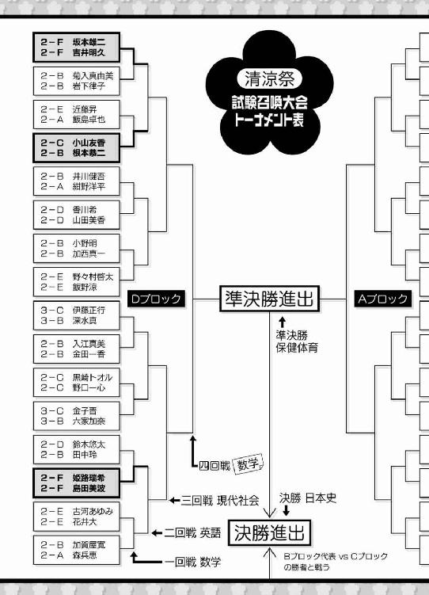
「で、二回戦の相手はどんな連中？」
特設ステージに向かいながら、隣を歩く雄二に聞く。
時間ギリギリまでテーブル奪取作戦をやっていたせいで、二回戦の相手を調べる暇さえなかった。弱そうな相手だといいんだけど。
「対戦表を見た限りだと、勝ち上がってきそうなのは――お、予想通りだ」
雄二の目線を追う。すると、その先には既に僕らを待ち構えている対戦相手の姿があった。
「あれ？ 誰かと思えばＢクラスとＣクラスの代表カップルじゃないか」
「よ、吉井に坂本!? お前らが相手か！」
僕らを見て顔が引き攣っているのは、前回の試召戦争で大変お世話になったＢクラス代表の根本君と、Ｃクラス代表の小山さん。この二人は付き合っているのかな？
「どうしたの根本君。Ｆクラスのバカコンビが相手なんだから、この勝負は貰ったようなものじゃない］
う～ん。正面切って悪口を言ってくるなんて、小山さんは相変わらず性格が悪いな。根本君といい、嫌なカップルだ。
「それでは、試験召喚大会二回戦を始めてください」
今回の立会人は、多少のことには目を瞑ってくれる英語担当の遠藤先生だ。
「「「「試獣召喚！」」」」
この場にいる四人の生徒の召喚獣が出現する。
『Ｂクラス 根本恭二 ＆ Ｃクラス 小山友香
英語Ｗ １９９点 ＆ １６５点 』
流石はＢクラスとＣクラスの代表コンビ。点数も立派なもんだ。
『Ｆクラス 坂本雄二 ＆ Ｆクラス 吉井明久
英語Ｗ 73点 ＆ 59点 』
対する僕と雄二の点数が表示される。
僕にとって得意科目ってわけでもないし、雄二も英語にはまだあまり手をつけていないから、数学に比べて点数はかなり見劣りする。
それでも一回戦じゃなくて二回戦にこの科目を持ってきた。その理由が今になってわかる。それは一回戦の相手は小細工ができず、二回戦の相手には小細工が利くからだ。
「じゃあ雄二、例のモノを」
対戦相手があの根本君ときたら、この男が持ってきてないワケがない。
「おう。これのことだろう？」
そう言って雄二が取り出したのは、門外不出の根本恭二個人写真集『生まれ変わったワタシを見て！』だ。正直、見てと言われても見たくないけど......。
「そ、それは......！」
根本君の表情が凍る。
これはこの間の試召戦争で負けた根本君を脅迫して撮影した、彼の女装写真集だ。できれば墓まで持って行きたい汚点だろう。でも、前の試召戦争で姫路さんの気持ちを弄んだ罰だ。手加減はしない！
「さて根本君。この写真集をバラ撒かれたくなかったら――」
と、言いかけたところで肩を叩かれる。なんだろう？
「おいおい明久。交渉の相手が違うぞ？」
「え？ そうなの？」
肩を叩いてきたのは雄二みたいだ。けど、根本君本人以外に誰と交渉を......？
「おい、根本の彼女だかＣクラス代表だか知らんが、そこの女」
そうやって雄二が声をかけたのは、何故か根本君の隣の小山さん。
「なにかしら？」
小山さんは雄二の持つ写真集を訝しげに見ていた。どうやら中身のことは知らないみたいだ。
「これを見てみろ」
そう言って、１ページ目を捲る雄二。そこには恥ずかしげにポーズを取っているスカート姿の根本君が、遠目のアングルで写っていた。
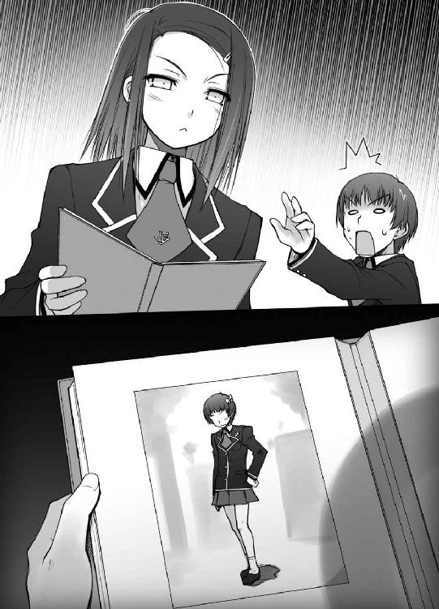
「さ、坂本！ わかった！ 降参する！ だからその写真だけは......！」
あ、いつの間にか僕らの勝ちだ。なんだか呆気ないなぁ。
「明久、根本を押さえろ」
「ん、了解」
雄二の指示通り、写真集を奪おうとする根本君を羽交い絞めにする。
「よしよし。さて、Ｃクラス代表。この写真集が見たかったら、俺たちに負けるんだ」
「さ、坂本っ！ お前は鬼か!?」
根本君が泣きそうな声を出す。これには流石に僕も同情してしまいそうになる。
この交渉だと、根本君は問答無用で負けてしまう上に写真集を彼女（？）に見られてしまう。彼にとっては最悪の上塗りだ。
「......いいわ。私たちの負けよ」
「交渉成立、だな」
悪役の笑みを浮かべる雄二。
かくして、写真集は小山さんの手に渡ることになった。
「ゆ、友香!? 頼む！ 見ないでくれ！」
根本君の懇願も虚しく、小山さんは写真集を開いてマジマジと観ている。
「明久。勝負は着いた。喫茶店も気になるし、戻るぞ」
「そうだね。それじゃ遠藤先生。僕らの勝ちということで」
脇から写真集を覗き込んでいる遠藤先生に声をかけておく。
「あ、はい！ 坂本君と吉井君の勝利です！」
これで正式に勝ち名乗りも受けたし、三回戦進出決定だ。良かった良かった。
『......別れましょう』
『ちょ、ちょっと待ってくれ！ これには事情が......！』
バカテスト 現代社会
以下の問いに答えなさい。
『ＰＫＯとは何か、説明しなさい』
姫路瑞希の答え
『Peace Keeping Operation（平和維持活動）の略。
国連の勧告のもとに、加盟各国によって行われる平和維持活動のこと』
教師のコメント
そうですね。豆知識ですが、United Nations Peacekeeping Operationsとも呼ばれたりします。余裕があれば覚えておくと良いでしょう。
土屋康太の答え
『Pants Koshi-tsuki Oppaiの略。
世界中のスリーサイズを規定する下着メーカー団体のこと』
教師のコメント
君は世界の平和を何だと思っているのですか。
吉井明久の答え
『パウエル・金本・岡田 の略』
教師のコメント
それはセ界の平和を守る人達です。「ただいまー......って、あんまりお客さんがいないなぁ......」
テーブルが綺麗になったにも関わらず、喫茶店内にお客さんは殆どいなかった。
「お、戻ってきたようじゃの」
あまり仕事が無いようで、ウェイトレス役の秀吉も暇そうだ。
「無事勝ってきたよ」
「それは何よりじゃ。ところで、雄二の姿が見えんが？」
「うん。トイレに寄ってくるってさ」
喫茶店が気になると言っていた割には暢気なもんだ。
「それより秀吉、これはどういうこと？ お客さんがいないじゃないか」
「......むぅ。ワシはずっとここにおるが、妙な客はあれ以降来ておらんぞ？」
秀吉が首を傾げる。
「ってコトは、教室の外で何かが起きているのかな？」
「かもしれんのう」
そうやって二人で考え込んでいると、
『お兄さん、すいませんです』
『いや。気にするな、チビッ子』
『チビッ子じゃなくて葉月ですっ』
雄二と小さな女の子の声が聞こえてきた。
「雄二が戻ってきたようじゃな」
「あ、うん。そうみたいだね」
はて、葉月......？ あの声、どこかで聞いたことがあるような......？
『んで、探しているのはどんなヤツだ？』
ガラッと音を立てて教室の扉が開き、雄二の姿が見えた。話し相手の子は小柄なのか、雄二の陰になって姿が見えない。
『お、坂本。妹か？』
『可愛い子だな～。ねぇ、五年後にお兄さんと付き合わない？』
『俺はむしろ、今だからこそ付き合いたいなぁ』
二人はあっという間にクラスの野郎どもに囲まれてしまった。お客さんがいなくて暇なせいだろう。
『あ、あの、葉月はお兄ちゃんを探しているんですっ』
どうやら女の子は人を探していて雄二に声をかけたようだ。雄二のヤツ、なんだかんだ言って面倒見が良いからなぁ......。
『お兄ちゃん？ 名前はなんて言うんだ？』
『あぅ......。わからないです......』
『？ 家族の兄じゃないのか？ それなら、何か特徴は？』
名前がわからない相手でも探してあげようという雄二の温かい気遣いが感じられる。意外と子供好きなのかもしれない。
『えっと......バカなお兄ちゃんでした！』
なんとも凄い特徴だ。
『そうか』
雄二が首を巡らせて、該当する人物を探している姿が人垣の間から見える。
『......沢山いるんだが？』
否定できない。
『あ、あの、そうじゃなくて、その......』
『うん？ 他に何か特徴があるのか？』
『その......すっごくバカなお兄ちゃんだったんです！』
『『『吉井だな』』』
やだな、泣いてないよ？
「全く失礼な！ 僕に小さな女の子の知り合いなんていないよ！ 絶対に人違い――」
「あっ！ バカなお兄ちゃんだっ！」
小さな子が駆けてきて、いきなり抱きつかれた。
「絶対に人違い、がどうした？」
「......人違いだと、いいなぁ......」
最近、周りの皆があまりにも僕のことをバカだって言うから、少しずつ自分がバカに思えてきたよ。
「って、キミは誰？ 見たところ小学生だけど、僕にそんな歳の知り合いはいないよ？」
ひとまず顔を見る為に女の子を引き剝がす。
「え？ お兄ちゃん......。知らないって、ひどい......」
女の子の表情が歪む。あ、マズい！ 泣かせちゃったかも!?
「バカなお兄ちゃんのバカぁっ！ バカなお兄ちゃんに会いたくて、葉月、一生懸命『バカなお兄ちゃんを知りませんか？』って聞きながら来たのに！」
なんだろう。僕まで泣きたくなってきた。
「明久――じゃなくて、バカなお兄ちゃんがバカでごめんな？」
「そうじゃな。バカなお兄ちゃんはバカなんじゃ。許してやってくれんかのう？」
ここまでバカを連呼された人間はそうはいないだろう。
「でもでも、バカなお兄ちゃん、葉月と結婚の約束もしたのに――」
「瑞希！」
「美波ちゃん！」
「「殺るわよ！」」
「ごぶぁっ!!」
突如首筋に激痛が！ なんだ!? 何が起こったんだ!?
「姫路に島田か。どうやら勝ったようだな」
落ち着いて雄二が言う。
「瑞希。そのまま首を真後ろに捻って。ウチは膝を逆方向に曲げるから」
「こ、こうですか？」
いかん。殺されかねん。
「ちょっと待って！ 結婚の約束なんて、僕は全然――」
「ふえぇぇんっ！ 酷いですっ！ ファーストキスもあげたのにーっ！」
「坂本は包丁を持ってきて。五本あれば足りると思う」
「吉井君、そんな悪いことをするのはこの口ですか？」
「お願いひまふっ！ はなひを聞いてくらはいっ！」
いつもは優しい姫路さんまで！ クラスから幼女暴行犯が出たと知られたら即転校に結びついちゃうからだろうけど、この扱いはあんまりだ！
「仕方ないわね。二本刺したら聞いてあげるからちょっと待ってなさい」
「あのね、美波。包丁って一本でも刺さったら致命傷なんだよ？」
美波に足りないのは日本語力だけじゃないと思う。
「あ、お姉ちゃん。遊びに来たよっ！」
と、女の子が美波を見て涙を引っ込める。
お姉ちゃん......葉月ちゃん......ファーストキス......
「ああっ！ あのときのぬいぐるみの子か！」
思い出した！ そういえば、前に小さな女の子がお姉ちゃんにプレゼントをしたいけどお金が足りない、なんて哀しそうにしてたから手伝ってあげたんだっけ。あげたのは確か、大きなぬいぐるみだったかな？ その後観察処分者に認定されたりして色々とバタバタしてたから、すっかり忘れていたよ。
「ぬいぐるみの子じゃないです。葉月ですっ」
女の子がぷぅっと頰を膨らませる。
「そっか、葉月ちゃんか。久しぶりだね。元気だった？」
「はいですっ！」
「うんうん。それは良かった。それにしても、よく僕の学校がわかったね？」
「お兄ちゃん、この学校の制服着てましたから」
そう言って僕の制服を引っ張る葉月ちゃん。
「あれ？ 葉月とアキって知り合いなの？」
そんな様子を見て美波が首を傾げていた。
「うん。去年ちょっとね。美波こそ葉月ちゃんのこと知ってるの？」
「知ってるも何も、ウチの妹だもの」
「へ？」
マジマジと葉月ちゃんの顔を見る。言われてみると、確かに似ている......。元気そうな雰囲気とか、ちょっと勝気な目のあたりとか。
「吉井君はずるいです......。どうして美波ちゃんとは家族ぐるみの付き合いなんですか？ 私はまだ両親にも会ってもらってないのに......。もしかして、実はもう『お義兄ちゃん』になっちゃってたり......」
姫路さんは何を言っているんだろう？ 最近、彼女もたまに壊れているような気がする。これもボロい教室のせいだろうか。
「あ、あの時の綺麗なお姉ちゃん！ ぬいぐるみありがとうでしたっ！」
葉月ちゃんがぺこりとお辞儀をする。礼儀正しい子だ。学園長とは大違いだ。
「こんにちは、葉月ちゃん。あの子、可愛がってくれてる？」
「はいですっ！ 毎日一緒に寝てます！」
ぬいぐるみ？ 毎日一緒に寝ている？ 姫路さんも葉月ちゃんに何かぬいぐるみでもあげたんだろうか。美波とは姉妹らしいから、姫路さんはその関係で遊びに行ったときにでも知り合ったのかな。
「良かった～。気に入ってくれたんだ」
そう言って嬉しそうに微笑む姫路さん。なんだか僕の周りには子供好きの人が多いな。僕も嫌いじゃないけど、どう接したら良いのかわからないので羨ましく思える。
「ところで、この客の少なさはどういうことだ？」
と、教室内を見回す雄二。そういえば僕もそれを考えていたんだった。葉月ちゃんの登場ですっかり忘れてたよ。
「そういえば葉月、ここに来る途中で色々な話を聞いたよ？」
「ん？ どんな話だ？」
雄二が屈み込んで葉月ちゃんの目線に合わせる。
「えっとね、中華喫茶は汚いから行かない方がいい、って」
葉月ちゃんの言葉に、僕は思わずうめき声をあげそうになった。
確かにさっきまではクロスの下が汚かったけど、それはもう解決したはずだ。それなのに未だに噂が回っている。どうしてそこまで悪評が流れているんだろう。
「ふむ......。例の連中の妨害が続いているんだろうな。探し出してシバき倒すか」
口元に手を当て、まるで確信しているかのように雄二は断言した。
「例の連中の妨害って、あの常夏コンビ？ まさか、そこまで暇じゃないでしょ」
なにより、坊主先輩はバックドロップまで食らったんだ。これ以上何かをしてくるとは思えない。
「どうだかな。ひとまず様子を見に行く必要があるな」
「そうだね。少なくとも、噂がどこから流れてどこまで広がっているのかを確認しないと」
こんなに小さな葉月ちゃんが聞いたくらいだから、もしかするとかなりの勢いで広まっているのかもしれない。
「お兄ちゃん、葉月と一緒に遊びにいこっ」
ギュッと葉月ちゃんに手を握られる。困った。普通に楽しむだけの学園祭だったらいくらでも一緒に遊んであげられるんだけど。
「ごめんね、葉月ちゃん。お兄ちゃんはどうしても喫茶店を成功させなきゃいけないから、あんまり一緒に遊べないんだ」
言いながら葉月ちゃんの頭を撫でてみる。
「む～。折角会いに来たのに～」
葉月ちゃんの頰は不満げに膨れてしまった。
けど、喫茶店は姫路さんの転校にかかわる大事なことだ。後悔のないように全力を尽くしておきたい。
「それなら、そのチビッ子も連れて行けばいい。飲食店をやっている他のクラスを偵察する必要もあるからな」
そこで雄二のフォローが入る。それももっともだ。敵情視察は経営戦略の基本だしね。
「ん～、そっか。それじゃ、一緒にお昼ご飯でも食べに行く？」
「うんっ」
膨れ顔が一転して満面の笑みに。表情が豊かで面白いな。天真爛漫ってこういう子のことを言うのかな？
「じゃあ葉月、お姉ちゃんも一緒に行くね」
美波の口調がいつもとは全然違う。妹に対しては優しいお姉ちゃんでいるんだなぁ。
「ふむ。ならば姫路と雄二も一緒に行くと良いじゃろ。召喚大会もあるじゃろうし、早めに昼を済ませてくると良い」
「そうか。悪いな、秀吉」
「いいんですか？ ありがとうございます。木下君」
これで雄二と姫路さんも一緒ということになった。全部で五人。混雑する学園祭の中を歩き回るには結構な人数だ。
「それでチビッ子、さっきの話はどの辺で聞いたのか教えてくれるか？」
「えっとですね......短いスカートを穿いた綺麗なお姉さんが一杯いるお店――」
「なんだって!? 雄二、それはすぐに向かわないと！」
「そうだな明久！ 我がクラスの成功のために、低いアングルから綿密に調査しないとな！」
聞いた瞬間全力ダッシュ。
喫茶店は姫路さんの転校にかかわる大事なことだ！ 後悔のないように全力を尽くしておきたい！
「アキ、最低」
「吉井君、酷いです......」
「お兄ちゃんのバカ！」
背後からの罵倒も気にならないほどに、僕の心は躍っていた。
☆
「明久、ここはやめよう」
「ここまで来て何を言っているのさ！ 早く中に入るよ！」
「頼む！ ここだけは、Ａクラスだけは勘弁してくれ！」
目的の桃源郷は、我らが宿敵のＡクラスに【メイド喫茶 『ご主人様とお呼び！』】という名前で存在していた。
「そっか。ここって坂本の大好きな霧島さんのいるクラスだもんね」
「坂本君、女の子から逃げ回るなんてダメですよ？」
雄二が妙な抵抗をしているうちに女の子三人も追いついてきたみたいだ。
「雄二、これは敵情視察なんだ。決して趣味じゃないんだから――」
「............!!（パシャパシャパシャパシャ！）」
見てみると、指が擦り切れんばかりにシャッターを切っている男が一人。
「......ムッツリーニ？」
「............人違い」
厨房責任者のクラスメイトはカメラ片手に否定のポーズを取っていた。
「どこからどう見ても土屋でしょうが。アンタ何してるの？」
「............敵情視察」
最近の敵情視察とはローアングルから女の子を撮影することを指すらしい。
「ムッツリーニ、ダメじゃないか。盗撮とか、そんなことをしたら撮られている女の子が可哀想だと――」
「............一枚百円」
「２ダース貰おう――可哀想だと思わないのかい？」
「アキ、普通に注文してるわよ」
はっ!? いつのまに!?
「............そろそろ当番だから戻る」
ムッツリーニは僕に写真を渡し、教室の方に去っていった。まさかプリントアウトまで済ませているとは。つくづく底知れない男だ。
「まったく、ムッツリーニにも困ったもんだね」
呟きながら、さりげなく写真をポケットに仕舞い込む。
「吉井君、その写真をどうするつもりなんですか？」
あ、バレた。
「やだな～。もちろん処分するに決まってるじゃないか。それよりそろそろお店に入ろう？ もうすごくお腹が減っちゃったよ」
本当はそうでもないけど、お腹をおさえて演技をしておく。
「あ、そうですね。入りましょうか」
流石は姫路さん。こんな演技でも信じてくれるなんて、いい子だなぁ。
「うんうん。早く敵情視察も済ませないと――写ってるのは男の足ばっかりじゃないか畜生！」
「やっぱり見てるじゃないですかっ！」
「ご、ごめんなひゃい！ くひをひっぱらないで！」
頰をつねられた。それと、足元では何故か葉月ちゃんが僕の腿をつねっていた。
「それじゃ、入るわよ。お邪魔しまーす」
美波が一番手でドアをくぐる。
「......おかえりなさいませ、お嬢様」
出迎えたのはクールで知的な美人メイド、霧島翔子さんだった。
「わぁ、綺麗......」
姫路さんが感嘆の声を洩らす。確かに霧島さんは綺麗だった。
長い黒髪にエプロンドレスの白がよく映えて、黒のストッキングが彼女の美脚を更に際立たせている。同性が羨んでも仕方のない麗しさだ。くそっ。やっぱり雄二のヤツが心から憎い！
「それじゃ、僕らも」
「はい。失礼します」
「お姉さん、きれ～！」
姫路さんと葉月ちゃんを連れて中に入る。すると、霧島さんは美波の時と同じように
「......おかえりなさいませ、ご主人様にお嬢様」
と、出迎えてくれた。
「......チッ」
雄二も最後に渋々入店してくる。霧島さんはやっぱり同じように、
「......おかえりなさいませ。今夜は帰らせません、ダーリン」
ちょっとアレンジされていた。
「霧島さん、大胆です......！」
「ウチも見習わないとね......」
「あのお姉さん、寝ないで一緒に遊ぶのかな？」
三者三様のリアクション。美波は見習ってどうするのか気になるところだ。
「お席にご案内いたします」
霧島さんが歩き出したので、僕らはその後ろ姿についていった。
「ね、お兄ちゃん。凄いお客さんの数だね～」
葉月ちゃんがくいくい、と僕の袖を引っ張る。
葉月ちゃんの言うとおり、Ａクラスの広い教室はお客さんで一杯になっていた。メイド喫茶だからほとんどのお客さんが男だと思っていたけど、意外と女の人も多いな。
「......では、メニューをどうぞ」
霧島さんが立派な装丁のメニューを渡してくる。凄い。最優秀クラスは学園祭にまで手を抜かないみたいだ。
「ウチは『ふわふわシフォンケーキ』で」
「あ、私もそれがいいです」
「葉月もー！」
女の子三人は仲良くシフォンケーキ。
「僕は『水』で。付け合せに塩があると嬉しい」
「んじゃ、俺は――」
「......ご注文を繰り返します」
遮るような霧島さんの声。
「......『ふわふわシフォンケーキ』を三つ、『水』を一つ、『メイドとの婚姻届』が一つ。以上でよろしいですか？」
「全然よろしくねぇぞっ!?」
動揺した叫び声をあげる雄二。コイツが翻弄されている様なんて珍しい。ここは存分に楽しませてもらうとしよう。
「......では食器をご用意致します」
女の子三人のところにはフォークが、僕の前には塩が、雄二の前には実印と朱肉が用意された。
「しょ、翔子！ コレ本当にうちの実印だぞ！ どうやって手に入れたんだ!?」
「......では、メイドとの新婚生活を想像しながらお待ち下さい」
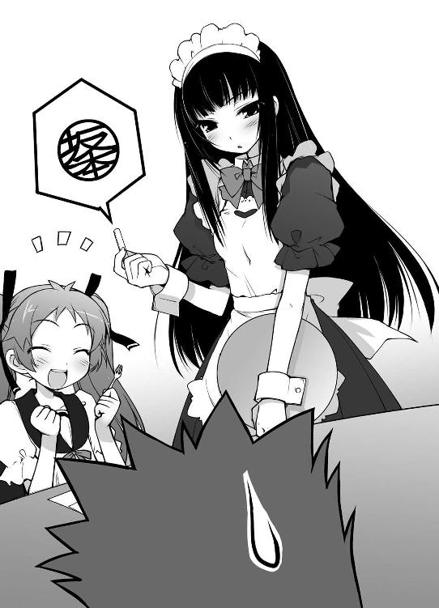
霧島さんは優雅にお辞儀をしてキッチンと思しき方向へと歩いていった。
「......明久。俺はどうしても召喚大会に優勝しないといけないんだ......！」
「あ、うん。それはもちろん僕もそうだけど」
雄二の目からは並々ならぬ決意が感じられる。やる気を出してくれるのは嬉しいけど、少し怖い。
「んで、葉月ちゃん。キミの言っていた場所ってここで良かった？」
「うんっ。ここで嫌な感じのお兄さん二人がおっきな声でお話ししてたの！」
葉月ちゃんが元気よく頷く。
嫌な感じのお兄さん二人か。それってやっぱり、
『おかえりなさいませ、ご主人様』
『おう。二人だ。中央付近の席は空いてるか？』
と、話している途中で新規の客の声が聞こえてきた。聞き覚えのある下品な声だ。
「あ、あの人達だよ。さっき大きな声で『中華喫茶は汚い』って言ってたの」
声の主は、さっき僕らのクラスで妨害工作をしてきた常夏コンビだった。さっきもこの辺で聞いたってことは、もしかして通っているのかな？
『それにしても、この喫茶店は綺麗でいいな！』
『そうだな。さっきいった二‐Ｆの中華喫茶は酷かったからな！』
『テーブルが腐った箱だったし、虫も湧いていたもんな！』
人の多い喫茶店の中央で、わざわざ大声で叫びあう。こんなことをされたら悪評は広まる一方だ！
「待て、明久」
連中を殴り倒しに行こうとしたところを雄二に止められた。
「雄二、どうして止めるのさ！ あの連中を早く止めないと！」
「落ち着け。こんなところで殴り倒せば、悪評は更に広まるだけだ」
雄二の目が鋭く連中を睨みつける。
確かにこんなに人の多い場所で殴り飛ばしたら、Ｆクラスは悪童の溜まり場なんて印象を与えかねない。そうなれば喫茶店の経営も厳しいし、万が一姫路さんのお父さんの耳に入ったら転校が確定してしまう。
「けど、だからってこのまま指をくわえて見ているなんて......！」
こうしている間にも噂は人の口に乗って広まっていく。わかっていながら何もできないなんて、あまりに歯痒い！
「いや、やるなら頭を使えということだ――おーい、翔子ぉー！」
「......なに？」
呼ばれた瞬間に霧島さん登場。常に雄二の近くにいたんじゃないか、ってくらいに早かった。
「あの連中がここに来たのは初めてか？」
雄二が顎で例の二人組を示す。すると、霧島さんは小さく首を振った。
「......さっき出て行ってまた入ってきた。話の内容もさっきと変わらない。ずっと同じようなことを言っている」
端整な顔を少し歪めていた。霧島さんにとっても愉快な客ではないらしい。
「そうか......よし。とりあえず、メイド服を貸してくれ」
臆面もなく問題発言をする雄二。この男、躊躇いや恥じらいというものを持ち合わせていないのだろうか？
「......わかった」
こちらも何の迷いもない返事。案外お似合いのカップルなんじゃ――って、ちょっと待ったぁぁっ！
「き、霧島さん!? こんなところで脱ぎ始めちゃダメですっ！」
「そうよ！ ここにはケダモノが沢山いるのよ!?」
「わぁ～。お姉さん、胸おっきいです～」
あろうことか、その場で着ているメイド服を脱ごうとした霧島さんを、姫路さんと美波が慌てて止めにかかる。危ないところだった――はずなのに、何故だか凄く残念だ。
「......雄二が欲しいって言ったから」
止められた霧島さんは不思議そうな顔をしている。この人、雄二の頼みなら迷いなく実行しちゃうんだな。なんて危うい人なんだろう。
「お、俺がいつお前の着ているメイド服が欲しいと言った!? 予備のヤツがあれば貸してくれって意味だ！」
そっぽを向いて首まで真っ赤になっている雄二が怒鳴る。霧島さんは危ういけど、雄二はこんな感じだから、彼女に悪いことはしないと思う。ちょっと安心だ。
「......今、持って来る」
霧島さんが服を着直して去っていく。
ふと気が付けば、僕らのテーブルは注目の的になっていた。これじゃあ、ますます常夏コンビに制裁なんて加えられそうにない。
「あの店、出している食い物もヤバいんじゃないか？」
「言えてるな。食中毒でも起こさなければいいけどな！」
「二‐Ｆには気をつけろってことだよな！」
くそっ！ なんてわざとらしい会話なんだ！ 今すぐブチのめしたい！
「雄二！ なんでもいいから早く連中を！」
「いいからもう少し待っていろ。姫路に島田、櫛を持ってはいないか？」
「？ 持っていますけど......」
「ちょっと貸してくれ。他にも身だしなみ用の物があれば全部」
「はぁ......」
姫路さんが上着のポケットをごそごそとあさって小さなポーチを取り出した。流石はお年頃の女の子だ。
「悪いな。あとで必ず返す」
雄二がポーチを受け取る。あの髪の長さなら櫛なんて必要ないと思うんだけど。
「......雄二、これ」
と、今度は霧島さんがメイド服を抱えて戻ってきた。
「おう。すまないな」
「......貸し一つ」
「だ、そうだ。明久」
「わかったよ。御礼に今度雄二を一日自由にしていいよ」
「......ありがとう。吉井は良い人」
「ちょっと待て！ どうして俺が！」
雄二の必死の弁明も虚しく、霧島さんは嬉しそうにその場を離れていった。
「で、これをどうするの？」
手元に残ったのはポーチとメイド服。どう考えてもあの二人を攻撃する武器にはなりそうにない。
「......着るんだ」
恨みがましく僕を見る雄二。どうせ試召戦争で負けたんだから言うことを聞かなきゃいけないのに、女々しい男だ。
「だってさ、姫路さん」
「え？ わ、私が着るんですか？」
姫路さんが目を丸くしている。似合うと思うんだけどなぁ。
「バカを言うな。姫路が着ても攻撃なんてできないだろうが」
「それじゃ、美波？ でも、胸が余っちゃうとぶべらぁっ！」
「ツギハ、ホンキデ、ウツ」
凄い殺気だ。
「島田でもない。それなら面が割れてしまうだろうが」
「......まさか」
姫路さんでも美波でもない。葉月ちゃんは丈が余りすぎて着ることができない。そうなると、残るは......
「着るのはお前だ」
「いやあぁぁぁっ！」
やっぱり僕か！ そりゃ、女装したら顔はバレないかもしれないけどさ！
「雄二が着ればいいじゃないか！ 無理をしたら着られるはずだよ！」
「やれやれ。わがままを言うヤツだな。それなら、あっち向いてホイで決めないか？」
出た、雄二の提案。これで何度騙されたことか。
けれども、ここで断っても意味がない。ヤツの裏を読んで、逆にメイド服を着させるよう仕向けるのが得策だろう。
「よし、その提案受けるよ」
「それなら行くぞ、ジャンケン」
「ポンッ」
僕はパー。雄二はチョキ。ここは僕の負けだ。
「あっち――」
雄二が勢いよく人差し指を出してくる。
これは――あれか！ 指を避けようとして顔を背けたら、その方向を指して勝負を決定付けるウラワザか！
「その手に乗るかっ！」
目を逸らさず、キッと雄二の指先を見つめる。負けるものか！
「向いて――」
ブスッ
あ、嫌な音。
「ぎいやぁぁっ！ 目が、目がぁっ！」
目を押さえてのけぞる僕。普通は目の前で指を止めるもんじゃないの!?
「ホイ！ ......ふっ。俺の勝ちだな」
雄二の勝ち誇った声が聞こえる。涙に滲む目を開けてみると、雄二は僕ののけぞった方向を指していた。
「あの、吉井君。大丈夫ですか？」
姫路さんがハンカチを差し出してくれる。なんて優しい子なんだ。
「ありがとう。まったく、雄二の卑劣さには驚かされるよ」
ハンカチを受け取って目に当てる。あ、なんか少し甘い匂いがするなぁ......。
「あ、あはは......。でも、きっと大丈夫ですよ」
「そうだよね。あんな卑怯な勝負は無効――」
「吉井君ならきっと可愛いと思いますっ」
そういう問題じゃない、と思った。
☆
「こ、この上ない屈辱だ......！」
「明久、存外似合っておるぞ」
雄二から連絡を受けてわざわざやってきた秀吉が、男子トイレで僕の着付けとメイクをたった数分でやってくれた。凄い。けど、全然ありがたくない。
「では、ワシは喫茶店に戻るぞい。存分に悪党をのしてくるが良い」
「ん。りょーかい」
秀吉と別れ、再び二‐Ａの教室に入る僕。なんだろう。周囲の視線が凄く気になる。
「とにかく汚い教室だったよな」
「ま、教室のある旧校舎自体も汚いし、当然だよな」
あの連中、まだそんな会話を続けているのか。あいつらにとってはただの嫌がらせでも、僕にしてみれば大事なクラスメイトの命運をかけた喫茶店なのに。許せない。
「お客様」
しずしずと歩き、このクラスのウェイトレスであるかのように声をかける。こいつら、絶対に潰す。
「なんだ？ ――へぇ。こんなコもいたんだな」
「結構可愛いな」
舐めるような視線が僕にまとわりつく。物凄く気持ち悪い！
「お客様、足元を掃除しますので、少々よろしいでしょうか？」
「掃除？ さっさと済ませてくれよ？」
二人が席から立ち上がる。
「ありがとうございます。それでは――」
「ん？ なんで俺の腰に抱きつくんだ？ まさか俺に惚れて」
「くたばれぇぇっ！」
「ごばぁぁっ！」
バックドロップ成功。これで坊主先輩は本日二度目の脳天痛打だ。
「き、キサマは、Ｆクラスの吉井......！ まさか女装趣味が――」
チッ！ 生きてやがった！ 仕方ない。応援を呼ぶとしよう。
「こ、この人、今私の胸を触りました！」
「ちょっと待て！ バックドロップする為に当ててきたのはそっちだし、だいたいお前は男だと――ぐぶぁっ！」
「こんな公衆の面前で痴漢行為とは、このゲス野郎が！」
痴漢退治という大義名分を得て雄二が登場。
「何を見ていたんだ!? 明らかに被害者はこっちだろ！」
倒れている坊主先輩に代わり、モヒカン先輩が雄二に食ってかかる。
「黙れ！ たった今、コイツはこのウェイトレスの胸をもみしだいていただろうが！ 俺の目は節穴ではないぞ！」
いや。正直節穴だと思う。
「ウェイトレス。そっちで倒れている男は任せたぞ」
「え？ あ、はい。わかりました」
そういえば、今の僕はウェイトレスだった。
う～ん。この坊主、どうしよう？ とりあえず秀吉に押し付けられたブラでも頭に付けてみるかな。瞬間接着剤で。
「さて。痴漢行為の取調べの為、ちょっと来てもらおうか」
一方で指を鳴らしながらモヒカン先輩に近付く雄二。連行して、どうしてこんな嫌がらせをしているのか、じっくりと教室で吐かせるつもりだろう。
「くっ！ 行くぞ夏川！」
状況を不利と見て逃げ出すモヒカン先輩。
「こ、これ、外れねぇじゃねぇか！ 畜生！ 覚えてろ変態めっ！」
坊主先輩は頭にブラをつけたまま走り去って行った。
「逃がすか！ 追うぞアキちゃん！」
「了解！ でもその呼び方は勘弁して！」
二人の後を追って僕と雄二も廊下に飛び出す。
「ところで雄二、ここの会計は？」
「俺とお前は何も頼んでいないだろ！ 姫路たちに任せておけ！」
雄二がそう言うならいいけど、
『......お会計は、夏目漱石を一枚か、坂本雄二を一名のどちらかとなります』
『坂本雄二を一名でお願い』
『......ありがとうございます』
本当にいいのかな？ 千円で売り飛ばされてるけど。
「明久！ 奴らは四階に逃げたぞ！」
人のごった返す廊下で雄二が叫ぶ。
「ごめん！ やっぱりアキちゃんでお願い！ なんだか周囲の視線が刺さるんだ！」
頼むから知り合いがこの場にいませんように。
「わかった！ 吉井明久――もとい、メイドのアキちゃん！」
「キサマ絶対ワザとだな！」
ひらひらのスカートに足を取られないように気をつけながら階段を昇る。四階ということは三年生の教室か。僕らにしてみればアウェイだ。気をつけないと。
「三‐Ａに入っていったのが見えた！ こっちだ！」
雄二が近くにある教室へと突っ込んでいく。教室を暗幕で覆っている三‐Ａは入り口に『迷路風お化け屋敷』という看板を立てていた。
「いらっしゃいませ。二名様ですね？」
「いや、四名だ。金は後ろの連れが支払う」
凄い。躊躇い無く後ろの連中に会計を押し付けた。
「では、恐怖の世界をお楽しみ下さい」
係員の先輩が疑うことなく扉を開けてくれる。僕と雄二は噓がばれないうちにと急いで中に飛び込んだ。
「雄二、暗がりだから慎重に行動しないと」
「そうだな。連中がどんな罠を用意しているかわからん」
ダンボールやパーテーションで作られた狭い道を歩く。明かりと言えば足元に設置されている小さなライトだけ。これじゃ捕まえることはおろか、こっちが奇襲を受けてやられかねない。
「気をつけろよ、女装趣味の偽メイド」
「う、うん。気をつけないと、気をつけないと、気をつけないと......」
周囲の気配に注意しながら慎重に歩く。
くそっ。スカートが邪魔で歩きにくい。たくし上げて腰に巻いておくか。
「気をつけないと――」
バッ！
と、目の前に突然何かが現れた。そいつは今まで見たこともないようなお化けだった。男子の制服を着て、坊主頭で、中肉中背で――頭にブラをつけていた。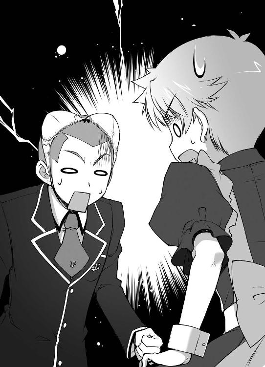
「「へ、変態だ！」」
「どっちもな」
失礼な。僕は成り行きでメイド服を着ているだけなのに。こんな頭にブラをつけて喜んでいる変態と一緒にしないで欲しい。
「ここまで追ってくるなんて、しつこい連中だぜ！」
坊主先輩が奥へと走り出す。待ち伏せじゃなくてただの鉢合わせだったようだ。
「逃がすか！ 必殺アキちゃん爆弾を食らえ！」
「雄二、その技はやめよう！ 名前を聞く限り一番の被害者は僕のような気がする！」
僕の後頭部を思いっきり摑む雄二に訴える。ここ、四階だしね。窓から落ちたら捻挫じゃ済まないと思う。
「今だ！ 壁を倒して閉じ込めろ！」
どこからかモヒカン先輩の声が響く。それはマズい！ 身動きが取れなくなる！
「くっ！ 脱出だアキちゃん！」
「それしかないね！」
追討を諦めて入り口へと引き返す僕ら。
「............あれ？ 壁が倒れてこないね」
「はったりか！ あのモヒカン野郎......！」
もう既に坊主先輩の姿も見えない。こうなっては捕獲は無理だろう。
「雄二、そろそろ三回戦が始まるよ」
「何？ もうそんな時間か？ ......仕方ない。口惜しいがここは一旦戻るとしよう」
こんなにバタバタしていては召喚大会に集中できない。本当に迷惑な連中だ。
「まったく、あの連中のせいで危うく棄権になるところだったね」
もう閉じ込められる心配はないと思われるので、僕らは歩いて入り口へと向かった。
「......あ！ さっきの無銭入場客！」
「走るぞアキちゃん！」
「ああもう！ 今日はこんなのばっかりだ！」
やっぱり歩くのはやめて走って教室に戻ることにした。清涼祭アンケート
学園祭の出し物を決める為のアンケートにご協力ください。
『喫茶店を経営する場合、ウェイトレスのリーダーはどのように選ぶべきですか？
【①可愛らしさ ②統率力 ③行動力 ④その他（ ）】
また、その時のリーダーの候補も挙げてください』
土屋康太の答え
『【①可愛らしさ】 候補......姫路瑞希＆島田美波』
教師のコメント
甲乙つけがたいといったところでしょうかね。
吉井明久の答え
『【①可愛らしさ】 候補...... 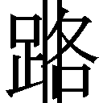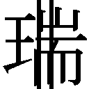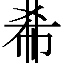 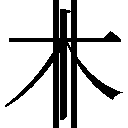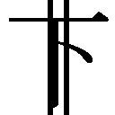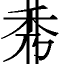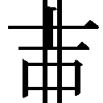 島田美波』
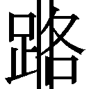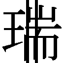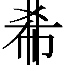 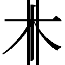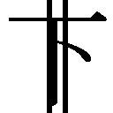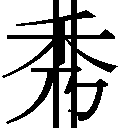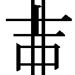 島田美波』
教師のコメント
用紙についている血痕が気になるところです。
坂本雄二の答え
『【④その他（結婚相手）】 候補......霧島翔子』
教師のコメント
どうしてＡクラスの霧島さんが用紙を持ってきてくれたのでしょうか。「で、三回戦は不戦勝じゃったと？」
「うん。相手が食中毒で棄権したんだ」
慌てて会場に向かった三回戦。到着すると、待っていたのは相手が棄権という拍子抜けの結果だった。食中毒ってまさか......？ うちの店でハズレを引いた客ではないと信じたい。
「ならば、済まぬがこっちの建て直しに協力してくれんか？」
秀吉が申し訳なさそうに表情を曇らせる。別に秀吉が悪いわけじゃないのに。
「そうだな。一度失った客を取り戻す為にも、何かインパクトのあることをやる必要がありそうだな」
教室の中は相変わらず空席だらけ。悪評の元は断ったはずだけど、流れた噂はどうしようもない。雄二の言うとおり、ここらで一つ大きなことをやらないとお客さんは来てくれないだろう。
「ふむ。それで何をするか、じゃが......」
秀吉が教室内を見渡している。僕も教室内を見渡したけど、特にできそうなことは思いつかない。
「雄二、何かアイデアはある？」
「任せておけ。中華とコレでは安直過ぎる発想だが、効果は絶大なはずだ」
そう言って雄二が取り出したのは、刺繡も見事な水色と白のチャイナドレス。
「ほう。若干裾が短いような気もするが、これならば確かにインパクトはあるじゃろうな。コレを宣伝用に――」
確かに姫路さんや秀吉が着たらインパクトは絶大だろう。王道だけど、悪くない作戦だと思う。
「ああ。コレを――明久が着る」
それはインパクトがありすぎる。
「ちょっ......！ お願い、許して！ メイド服の次にチャイナまで着たら、きっと僕はホンモノだって皆に認識されちゃう！」
楽しい学園生活の為にも、これ以上の悪い噂は避けたい。ただでさえ無駄に有名人になりつつあるんだから。
「冗談だ。これは秀吉と姫路と島田に着てもらう」
「あ、なんだ。良かった～」
冗談だったのか。ビックリしたぁ～。
「ワシが着るのは冗談ではないのかのぅ......？」
秀吉がチャイナドレスを持って溜息をつく。
何をバカなことを言っているのやら。たとえ美波が着るのが冗談だとしても、秀吉が着るのは混じりっ気なしの本気だ。
「たっだいま～！ って、なんだ。アキってばメイド服脱いじゃったんだ」
「あ......残念です。可愛かったのに......」
「お兄ちゃん。葉月もう一回見たいな～」
と、三人娘が帰宅（？）した。人の気も知らずに好き勝手言ってるなぁ。あれでどれだけ僕の悪い噂がまた広まったことか......。
「あはは。残念ながら、ただで人のコスプレを見られるほど世の中甘くないよ？」
にこやかに笑いかける。こちらのを見たならそちらのも見せるべきだ。
「そういうことだ。姫路に島田、クラスの売り上げの為に協力してもらうぞ」
エモノを逃がさないように、チャイナを片手に退路を断つ。少なくとも美波は逃げようとするだろうから。
「な、なんだか二人とも、目が怖いですよ......？」
「凄く邪悪な気配を感じるんだけど......」
若干引き気味なエモノ二名。けど、残念ながら逃げ場はない。
「やれ、明久！」
「オーケー！ へっへっへ、おとなしくこのチャイナ服に着替え痛ぁっ！ マジすんませんした！ 自分チョーシくれてましたっ！」
「弱いな、お前......」
殴られた腹と頰と腿が痛む。どうして美波は男の僕より攻撃力が高いんだろう？
「どうしてまた、急にそんなことを言い出すのよ？ 前に須川はチャイナドレスを着たりすることはない、って言ってたと思うけど」
予想通り、美波が渋い顔をする。
「店の宣伝の為と、明久の趣味だ。明久はチャイナドレスが好きだよな？」
急に雄二に話を振られる。本当は大好きだけど、なんだかそういった趣味を知られるのも恥ずかしい気がする。ここはうまくお茶を濁す程度でごまかそう。
「大好――愛してる」
「......お前は本当に噓をつけないヤツだな」
あれ？ 台詞の選択を間違えたような。
「し、仕方ないわね。店の売り上げの為に、仕方なく着てあげるわ」
「そ、そうですね！ お店の為ですしね！」
姫路さんと美波がそれぞれ服を手に取る。
「お兄ちゃん、葉月の分は？」
「え？ 葉月ちゃんも手伝ってくれるの？」
「お手伝い......？ あ、うん！ 手伝うから、あの服葉月にもちょうだい！」
なんて良い子なんだ。美波の妹とは思えない。
「けど、ごめんね。気持ちは嬉しいんだけど、葉月ちゃんの分は数が――」
「............!!（チクチクチクチク）」
「ム、ムッツリーニ！ どうしてそんな凄い勢いで裁縫を!? っていうかさっきまでいなかったよね!?」
「............俺の嗅覚を舐めるな」
なんだろう。格好良い台詞のはずなのに、凄く格好悪い気がする。
「それじゃ、三回戦が終わったら着替えますね」
姫路さんが腕時計を確認している。そっか。姫路さんたちの試合もあるんだった。
「いや、今着替えてもらいたい」
「「え？」」
雄二の言葉に二人の声がハモる。
「宣伝の為だ。そのまま召喚大会に出てくれ」
そういえば、召喚大会の三回戦からは一般公開が始まるんだった。折角人が集まるのだから宣伝をしておいて損はない。
「こ、これを着て出場しろって言うの......？」
「流石に恥ずかしいです......」
二人ともチャイナドレスを手に困った顔をしている。メディアも含めて大勢の人が来る中、その格好で動き回るのはきっと恥ずかしいだろう。でも、これも姫路さんの転校を防ぐ為。是非ともやってもらいたい。
「二人とも、お願いだ」
言って頭を下げる。姫路さんの為に、というわけじゃない。僕自身が姫路さんの転校を望んでいない。言うなれば、これは僕のわがまま。それなら僕が頭を下げるのは当然のことだ。
「明久......。お前は本当に――チャイナが好きなんだな......」
敢えてそれも否定しないが。
「もしかして吉井君、私の事情を知って――」
「仕方ないわね。クラスの設備の為だし、協力してあげるわ。ね、瑞希？」
姫路さんの言葉を遮って美波が色よい返事をくれる。
「あ。は、はいっ！ これくらいお安い御用です！」
姫路さんも快諾してくれた。
それにしても良いことを聞いた。お安い御用なら、今後もちょくちょくお願いしてみよう。
「それならスグに着替えて会場に向かってくれ。大会では自分たちの所属がＦクラスであることを強調するんだぞ」
姫路さんと美波がＦクラスであることが人の口に上れば、喫茶店の宣伝とＦクラスのレベルのＰＲという二つの目的が果せる。これは大きい。
「オッケー。任せておいて。行くわよ瑞希」
「はいっ」
チャイナドレスを抱えて教室を出て行く二人。あっちは任せておいて大丈夫だろう。
「............できた」
「わ、このお兄さん凄いです！」
神の如き速度で葉月ちゃん用のチャイナドレスが出来上がっていた。
下心が絡んだムッツリーニに不可能はない。それは知っていたけど、まさか小学生まで守備範囲だったとは。つくづく底の知れない男だ。
「ふむ。それでは着替えるとするかの」
「ちょ、ちょっと秀吉！ ここで着替えるの!? きちんと女子更衣室で着替えないとダメだよ！」
純情少年の僕と妄想少年のムッツリーニにその刺激は強すぎる。
「......最近、明久がワシのことを女として見ておるような気がするんじゃが」
「気のせいだ。秀吉は秀吉だろう」
「うん。雄二の言うとおりだよ。秀吉は性別が『秀吉』で良いと思う。男とか女とかじゃないさ」
「......俺が言ったのはそういうことじゃない」
あれ？ 違った？
「んしょ、んしょ......」
「............!!（ボタボタボタ）」
「は、葉月ちゃん！ キミもこんなところで着替えちゃダメだよ！ ムッツリーニが出血多量で死んじゃうから！」
大量に出血しているはずなのに、鼻を押さえているムッツリーニは心から幸せそうだった。
☆
「たっだいまー」
「ただいま戻りました～」
お、この声は姫路さんと美波か。助かった！
「丁度良かったよ。二人とも疲れているところ悪いけど、ホールに回ってくれる？」
二人が大会に向かった後、僕らはチャイナドレスに着替えた秀吉と葉月ちゃんを連れて校舎内を歩き回った。最初はあまり効果がないように思えたけど、徐々にお客さんが増えていき――姫路さんたちの勝負が終わったと思われる時間ぐらいから、だいぶ席が埋まり始めた。今のところは順調と言えるだろう。
「良かった。段々持ち直してきたのね」
「良かったです」
「女性客も増えてきているんだよ。きっと味についての噂も流れ始めたんだろうね」
僕はハズレを引いたから知らないけど、皆の反応を見る限り飲茶の出来は相当のもののようだ。段々とチャイナ目的以外のお客さんが増えてきている気がする。
「それじゃ二人ともウェイトレスをやってくれる？」
「はいっ」
「オッケー」
チャイナドレスの裾を翻して二人は注文票やペンを取りに行った。これでまたお客さんが増えてくれるだろう。
「君。注文をしてもいいかな？」
「あ、はい。どうぞ」
そうやって二人の後ろ姿に見惚れていると、近くの席のお客さんから声がかかった。失礼のないように急いで注文票を構える。
「本格ウーロン茶と、胡麻団子を」
「かしこまりました。本格ウーロン茶と胡麻団子ですね？」
メモを取り、注文内容の確認の為にお客さんに顔を向ける。......あれ？ この人、教頭の竹原先生じゃないか。また来てくれたんだ。
「ありがとうございます。後ほどお持ちしますので、少々お待ち下さい」
「それと聞きたいことがあるんだが、いいかね？」
「はい。なんでしょうか」
決まり文句を告げて厨房に向かおうとする足を止めて振り向く。
「このクラスに吉井明久という生徒がいると聞いたのだが、どの子かな？」
「え？ 吉井明久は僕ですけど......」
脈絡もなくいきなり尋ねられて少し驚いてしまう。教頭先生が僕に何の用だろう？
「ああ、そうかい。君が――吉井君（笑）か」
「教頭先生。人の名前に（笑）はおかしいかと思います」
「ああ。それはすまない。だが、私はどうしても教え子である君のことを吉井君（馬）とは呼べなくてね」
「あの、僕は職員室でなんて呼ばれているんですか......？」
（馬）って、どう考えても一つの単語しか思いつかない。
「アキ、厨房の土屋から伝言。茶葉がなくなったから持ってきて欲しい、だって」
そんなやりとりをしていると、いつの間にか用意を終えた美波が戻ってきていた。
「ん、わかったよ。先生、ちょっと行ってきてもいいですか？」
「構わんよ。特に用があったわけではないのでね」
「？ そうだったんですか？」
それなら何で僕のことを尋ねたんだろう？ 教頭先生とは特になにもつながりがないはずだけどなぁ。
「アキ、土屋が急いで欲しいって言ってたわよ？」
「はーい」
よくわからないけど、とりあえず用事を済ませるのが先だ。ストックの置いてある空き教室へと向かおう。
旧校舎の廊下を早足で歩いて目的の場所へ。えっと、いくつぐらい持っていけばいいかな？ きちんと数を聞いておけばよかったな。
「おい」
「うん？」
空き教室の中で考えていると後ろから声がかかった。声の主は同年代くらいの男三人組。困ったことに勝手に空き教室に入ってきている。
「ああ、ここは部外者立ち入り禁止だから出て行ってもらえます？」
うちの学校では見たことのない顔だから、きっと他校の生徒だろう。道に迷ったのかな？
「そうはいかねぇ。吉井明久に用があるんでな」
そう言って、向こうの一人が後ろ手で扉を閉めた。
「へ？ 僕に何か？」
「お前に恨みはねぇけど、ちょっとおとなしくしててくれや！」
言うやいなや、拳を固めて殴りかかってきた。えぇっ？ なんで？
「ちょっと待った！ 人違いじゃないの!?」
屈んで拳をかわし、立ち位置を入れ替える。なんだか殴られることが多くて避けるのが上手くなってきた気がするなぁ......。
「逃げんなコラ！ おとなしくしてろ！」
「いや、そんなこと言われても」
扉側に来たから逃げるのは簡単だけど、それだと喫茶店にこの連中が来てしまう。さてさて、どうしたものかな。
その時、ガラッと音をたてて扉が開いた。
「おい明久。ムッツリーニが茶葉の他に餡子も急いで持ってきてくれと」
「あ、雄二。丁度よかった」
タイミング良く雄二が登場。これはラッキーだ。
「ん？ なんだこいつらは？」
三人を見て眉をひそめる雄二。
「よくわからないけど、雄二と喧嘩がしたいみたいなんだ。だから、あとは宜しくね」
「なんだそりゃ？」
戸惑う雄二を教室の中に引き入れ、代わりに僕が廊下に出る。
「おい明久。これは――ああ、そうか。そういうことか」
「コイツどうする？」
「面倒だから一緒にやっちまおうぜ」
そんな会話を背に、扉を閉めて一分待つ。すると――
「お、覚えてろっ！」
「てめぇの面、忘れねぇからな！」
「夜道に気をつけろよ！」
見事な負け犬の完成です。さすがは雄二、強いもんだ。
「雄二。あの連中、なんだったかわかる？」
「売れ行きがよくなったＦクラスの妨害でもしに来たんだろ」
「あはは。そんな理由で絡んでくるバカはいないよ」
「どうだかな。とりあえず急いで戻るぞ。ムッツリーニが待っている」
「はいよ」
再び教室に入り、僕と雄二は茶葉と餡子を抱えて喫茶店へと戻っていった。
――そんなこんなで二時間が過ぎ――
「明久。そろそろ四回戦だ」
「え？ もうそんな時間なの？」
時計を見て時間を確認する。午後二時過ぎ。喫茶店に夢中になっているうちに随分と時間が過ぎていたみたいだ。
「あれ？ アキたちもそろそろなの？」
「そうなんですか？ 実は私たちもそろそろ出番なんですよ～」
姫路さんと美波がトレイを置いている。
「お兄ちゃん、葉月を置いてどこか行っちゃうの？」
ズボンの裾を握られてしまった。そうは言われてもな......。
「チビッ子。バカなお兄ちゃんは今から大切な用事があるんだ。だからおとなしく待っていないとダメだ」
雄二が葉月ちゃんの頭をグシグシと撫でる。コイツ、子供の扱いに慣れているな。ここはうまく説得してくれそうだ。
「う～。でも......」
不満げに膨らむ葉月ちゃんの頰。
「その代わり、良い子にしていたら――」
そんな彼女を元気付けるように、雄二は小さく微笑んで、
「バカなお兄ちゃんがオトナのデートを教えてくれるからな？」
超弩級の爆弾を投下した。
「葉月お手伝いしてくるですっ！」
「ち、違うんだよ葉月ちゃん！ 僕には君が期待するような財力はないんだ！ ねぇ、聞いてる!?」
もはや葉月ちゃんの姿は見えない。物凄い勢いで厨房に消えてしまった。
困った......。オトナのデートって、一体いくらかかるんだろう？ あの調子だと公園でブランコ程度じゃ許してもらえそうにないぞ。
「アキ、ちょっと校舎裏まで来て？」
お姉さんの怖い声。摑まれた肩は今にも外れそうな勢いだ。
「美波ちゃん、ちょっと待ってください」
そこに姫路さんの仲裁が入る。やっぱり優しい。
「次の対戦相手は吉井君たちのようですから。召喚獣でお仕置きした方が遠慮なくできますよ？」
かと思ったら笑顔のままで死刑宣告。最近姫路さんの考えが読めない。
「ちょっと待って！ 僕の召喚獣はダメージのフィードバックつきなんだよ!? 姫路さんの召喚獣に攻撃されたら僕自身も酷い目に――」
「フン、望むところだ」
「雄二！ お願いだから勝手に僕の生命を左右しないで！」
僕は全然望んでいない！
「上等よ。早く会場に向かいましょうか。アキがどんな声で啼くのか楽しみだわ」
「いいだろう。そこまで言うなら、明久にどこまで大きな悲鳴をあげさせられるのか、じっくりと見せてもらおうか」
僕の味方はどこにもいなかった。
☆
「それでは、四回戦を始めたいと思います。出場者は前へどうぞ」
マイクを持った審判の先生に呼ばれ、僕ら四人はステージへと上がる。
外部からの来場客の為に作られた見学者用の席。それらはほぼ満席といった状態で僕らの四回戦は始まろうとしていた。
「なるほど。これなら宣伝効果は抜群だね」
「そうだな。しかも今回は出場メンバーが全員Ｆクラスだ。文句のつけようもない宣伝の機会だ」
あたりを見回して雄二と頷き合う。これで目的の達成にまた一歩近付いたはずだ。
「そんなワケだから二人とも、しっかりと宣伝よろしくね」
この会場を訪れている男の視線を集めている二人に声をかけてみた。
「あ、あの......。やっぱり恥ずかしいです......」
服の裾を押さえながら俯いている姫路さん。耳まで真っ赤になっているし、これは相当恥ずかしそうだ。
「あ、アキもメイド服を着てきなさいよ！ 不公平よ！」
美波も顔を真っ赤にしている。裾の長さで言えば普段着ている学園の制服の方がよほど短いと思うけど、どうしてこんなに恥ずかしがるのだろう？ 下着と水着の違いみたいなものだろうか。
「僕がメイド服なんか着たらＦクラスの評判が下がっちゃうよ。もし姫路さんのお父さんが見に来たりしていたら困るじゃないか」
「え？ お父さんは決勝戦になったら見に来るとは言っていましたけど......。どうして吉井君がそのことを？」
姫路さんが不思議そうな顔をする。
って、マズい！ そういえば姫路さんの転校について僕は知らないことになっているんだった！
「ほ、ほら！ 姫路さんが活躍するなら、家族の人はきっと見に来るんじゃないかと思って！」
「ふむ。明久としては将来の義父さんに恥ずかしい姿は見せたくないだろうな」
「いえ！ 吉井君のメイド服姿は可愛かったから大丈夫です！」
あ、つっこみどころはそこなんだ。
『四人とも、そろそろ良いですか？』
先生がマイクを片手に苦笑いをしていた。
「あ、はい。それじゃあ――」
大きく息を吸い、召喚獣を喚び出す。
「「「「試獣召喚！」」」」
僕ら四人の声が綺麗に揃い、それぞれの足元に魔法陣が現れた。
この様子だけで観客席から小さな歓声があがる。この試合から見始めた人にしてみれば、これだけでも充分に物珍しい光景なのだろう。
そして、本命の召喚獣が姿を現す。相変わらずのデフォルメサイズで、見た目は愛嬌たっぷりだ。
ちなみに毎度お馴染みの点数は未だ表示されていない。特別に設置されている大型ディスプレイに表示する為、若干情報処理に時間がかかっているのかもしれない。
『では、四回戦を――』
審判の向井先生が開始宣言をしようとして、
「ちょっと待ってください」
雄二に止められた。
「......はい？ なにかありますか？」
気勢を削がれた形になり、先生は若干不満そうな顔をしていた。けど、雄二はそんなことにはおかまいなしだ。
「すいませんが、少しマイクを貸してください」
そう告げると、先生の返事も待たずにマイクを奪う雄二。
『清涼祭にご来場の皆様こんにちは』
と、突然挨拶を始めた。そっか。雄二は宣伝をする気なのか。
（姫路さん、美波。こっちに並んで。雄二が宣伝をするつもりみたいだ）
（え？ あ、はい）
小声で二人を呼び、お客さんに向かい合うように整列する。
『ここにいる僕ら四人は、本格飲茶を提供する二‐Ｆの中華喫茶で働いています。このように可愛らしい女子も一生懸命頑張っていますので、よろしければどうぞお立ち寄り下さい』
雄二が丁寧にお辞儀をする。その動きに合わせて、僕らも大きくお辞儀をした。
「「「よろしくお願いします！」」」
ついでに召喚獣もぺこり、と動きを揃えさせる。これで少しは二‐Ｆのことがお客さんの印象に残ったかな。
「先生、マイクお返しします」
軽く頭を下げて先生にマイクを手渡す雄二。やっぱりこいつは色々と考えているんだな。こんな宣伝をしようなんて、僕はちっとも考えていなかったよ。
『――ということだそうです。ご見学の皆様、お時間に余裕がありましたら、出場選手たちのいる二‐Ｆに立ち寄ってみてください』
先生が苦笑いをしながらも僕らの宣伝に協力してくれる。お祭の余興として乗ってくれているみたいだ。感謝感謝。
『さて、それではＣＭも終わりましたし、いよいよ召喚大会の始まりです。Ｆクラスの四人とも、良い試合をお願いします』
そう告げると、向井先生は僕らから少しだけ距離を取った。
「アキに坂本。ここまでよく勝ち残ってきたわね。でも、ウチらに勝てるとは流石に思っていないでしょう？」
美波が僕らに対して余裕の笑みを浮かべている。強敵となるはずの三年生が受験の為に殆ど参加していない今、この二人は優勝候補とすら呼ばれている。その余裕は当然のものなのかもしれない。
「甘いな島田。お前たちは確かに優勝候補だが、それ故に勝ちあがってくることは簡単に予想できた。それなら、対策はいくらでも打てるというものだ！」
雄二は大型ディスプレイを指差し、自信満々に応えた。そう。僕らにはこの二人に対する作戦がある。全ての科目で優秀な姫路さんはともかく、美波は決して万能ではないのだから！
『Ｆクラス 姫路瑞希 ＆ Ｆクラス 島田美波
古典 ３９９点 ＆ ６点 』
「こ、古典!? 四回戦は数学じゃなかったの!?」
狼狽する美波。ドイツ帰りの彼女に古典は鬼門なのだ。
「お前らに渡した対戦表だが――」
雄二が悪者の笑みを顔に貼り付ける。
「アレは俺の手作りだ」
「だ、騙したわねっ!!」
そう。美波と姫路さんに渡した対戦表は雄二の手作りだ。対戦相手に関しては本当のことしか書いてないけど、使用科目にはちょっと手を加えてある。これは対戦表を見た雄二が学園長に科目を指定した際に仕込んでおいた罠だ。
「くはははは！ これで勝負はほとんど二対一！ 俺たちの勝ちは貰ったようなものだな、明久！」
「その通りだよ雄二！ ６点しか取れていない美波の召喚獣なんて、はっきり言っていないも同然さ！」
「くっ！ なんて卑怯な連中なの！」
悔しげに呻く美波をよそに、ディスプレイには僕らの点数も表示されていた。
『Ｆクラス 坂本雄二 ＆ Ｆクラス 吉井明久
古典 ２１１点 ＆ ９点 』
「..................明久」
「..................正直、悪かったと思ってる」
「..................」
「..................」
すごくいたたまれない雰囲気だ。居心地が悪いことこの上ない。
「よし、雄二！ ここは前のようにそれぞれ個人戦で行こう！ 僕は美波を受け持つから、雄二は姫路さんを頼む！」
「待て！ それでは俺の負担が大きすぎる！」
かと言って僕が戦ったら一撃でやられるだろう。戦力差は40倍以上だし。
「わかってる！ だからそこは、得意の頭脳プレイでカバーするんだ！」
「なんて無茶を言いやがる！」
ぎゃあぎゃあ言っているけど、雄二の点数はかなりの高得点だ。姫路さんが相手だから見劣りしているけど、その実はＡクラスに匹敵するほどの強さになっているはず。
「......仕方ない。こうなればお前の言うとおり頭を使ってやろう。――島田に姫路」
「はい？」
「なによ？」
「明久が如月ハイランドのペアチケットを手に入れようとしている、と話したよな？」
また何か妙なことを考えているのだろう。僕に害のない作戦なら良いけど。
「それがなにか？」
「一緒に行こうとしている相手が俺だという話だが――あれは噓だ」
何を勿体つけているのやら。僕は同性愛者じゃないのだから、そんなの誰でもわかっていることなのに。
「「ええぇっ!?」」
それなのに、どうして二人は心底驚いた顔をしているのだろう。
「そ、それじゃ、一体誰を......？」
「そんなの、決まっているだろう？」
雄二が不敵な笑みを浮かべる。まさか、学園長の話してくれた真相を明かす気じゃないだろうな？ そんなことをしたら取引がなかったことにされてしまう！
「明久が誘おうとしているのは、島田。お前――」
「えぇっ!? あ、アキってば、ウチと幸せに......」
「――の妹だ」
「殺すわ」
な、なんだこのプレッシャーは！ 僕は何も発言していないのに、いつのまにか生命が危険に晒されている！
「待つんだ美波！ 僕は別に葉月ちゃんをどうこうしようなんて思っていない！」
「妙に仲が良いと思ったら......。まさか、そういうことだったなんてね」
目が据わっていてやたらと怖い。妹の危機に立ち上がる優しい姉は、僕にとっては殺人鬼だった。
「やっぱり吉井君にはお仕置きが必要みたいですね？」
「ひ、姫路さん......？」
にこやかに僕の方を見ている姫路さんの背後には、何故か阿修羅像が見えた。あの笑顔、裏では般若のような表情になっているに違いない。
「瑞希！ アキの召喚獣をボコにして！ ウチはアキの本体をボコにするから！」
「わかりました！」
「わからない！ 二人の言っていることが僕にはさっぱりわからない！」
既に二人の照準は僕にロックされている。これではフィードバックと実際の痛みで僕はショック死する可能性がある。
「行きますっ！」
姫路さんの召喚獣が一瞬で間合いに迫る。さ、流石は学年次席！ 目で追えない速さじゃないけど、今までのどの相手よりも動きが速い！
「わ、わ、わ！」
本当にギリギリのところで攻撃を避ける。９点しかない僕の召喚獣はいつもより更に動きが鈍くて弱かった。
「アキ！ おとなしく殴られなさい！」
「美波！ それは反則行為だよ！」
僕に直接攻撃を仕掛けてくる美波。召喚獣の操作と僕自身の防御なんて同時に出来っこない！
『反則はありません』
向井先生の無慈悲な宣言が聞こえてくる。いいの？ 教育者としてそれでいいの!?
思わず助けを求めて雄二を見る。すると、雄二の目はこう語りかけてきた。
『キツいだろうが、姫路の召喚獣の武器を押さえ込め。あとは俺がやる』
......そういうことか。僕が姫路さんを引きつけている間に雄二が奇襲をかけるってわけだね。それなら一瞬の痛みは我慢して、姫路さんの武器を押さえ込もう！
「おおおおおっ!?」
なんとかかわした大剣を姫路さんが引き戻そうとする。その戻そうとする剣に僕は召喚獣を飛びつかせた。
ザクっ！
「くうぅぅっ!?」
僕の身体に痛みのフィードバックが訪れる。流石、引き戻す動作でも凄い威力だ。僕の召喚獣に諸刃が深々と突き刺さっている。
でも、この一瞬の痛みを耐え切れば雄二が止めを刺してくれる！
「雄二っ！」
歯を食いしばりながら、雄二に合図を送る。あとは雄二が僕を巻き込まないように攻撃を――
「阿呆が。そんなことを考慮したら威力が落ちるだろうが」
迫る雄二の召喚獣。力を溜めに溜めて打ち出したその拳の目標は――僕と姫路さん二人の召喚獣」
「き、キサマ、謀ったな雄二ぃーっ！」
「くたばれ姫路！ 明久と共に！」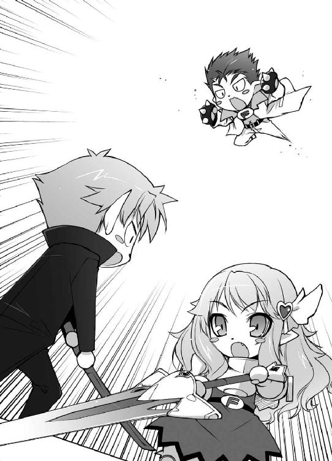
そして二体を区別することなく叩き込まれる拳。２００点を超える雄二の召喚獣だ。その威力はダンプカーの衝突にも匹敵するだろう。
「え？ あ、きゃぁっ！」
ろくな防御をしなかった為、吹き飛ばされる姫路さんの召喚獣。こうなれば、さしもの姫路さんでも戦闘不能は免れない。そして、
「ダンプっ！」
僕のところにもダンプカーが来た。こ、交通事故って死ぬほど痛い......！
「瑞希っ！」
美波の注意が吹き飛ばされた姫路さんの召喚獣に向く。
「よそ見とは余裕だな、島田」
これは勝負の最中。そんな好機を雄二が逃すわけもない。
「しまっ......！」
「これで決まりだ」
ドンっと大きな音を立て、美波の召喚獣に拳が深々と突き刺さる。姫路さんの召喚獣でも耐え切れなかった攻撃だ。結果はどうなるかなんて、見なくてもわかる。
『あ～......え～と......』
形容しがたい展開に向井先生が困っている。
『姦計をめぐらせ、味方もろとも相手を葬った坂本雄二君の勝利です！』
本来はペアだから僕も勝ち名乗りを受けるはずなんだけど、今回はこれで正しいと思いながら僕は痛みで気を失った。
☆
「ひきょうもの」
「二人とも酷いです......」
「あ、いや。あれも勝負だったからさ」
美波のジト目と姫路さんの悲しそうな視線から逃れるようによそを向く。というか、一番被害を受けている僕が責められるのはどうかと思うんだけど。まだ全身が痛いし。
「二人ともそう言うな。お前らの代わりにしっかり俺たちが優勝してやるから」
事の張本人はどこも悪びれた様子がない。雄二の面の皮はどこまで厚いんだろう？
（ってことで、美波たちは喫茶店に専念してくれる？ 召喚大会は僕らがなんとかするからさ）
姫路さんに聞かれるとまずいので、小声で美波に話しかける。
（そりゃ、アキたちが優勝した方が瑞希のお父さんの印象はいいだろうけど......）
美波も僕に合わせて小声で返事をする。
Ｆクラスの生徒に実力があると思わせることが目的であるなら、姫路さん本人が優勝するより無関係な二人が優勝した方が良いだろう。
（それはそうと、本当に葉月に手を出そうとしてるわけじゃないわよね？）
試合終了後にあれだけ説明したのにまだ疑ってるなんて。僕って信用無いなぁ......。
（大丈夫だよ。僕はＡカップに興味はないんだ）
（......あ、あはは。それは安心ね）
美波はそうやって軽く笑い、少し後に目を逸らした。
（......女は胸じゃないのに。アキの、バカ......）
？？ 何かを呟いていてツッコミが来ない。冗談とは言えセクハラ発言をしたんだから、反応がないと僕が恥ずかしいんだけどな......。このままだと僕が胸で女の子を見ているヤツだと誤解されそうだ。
「あの、絶対に優勝してくださいね......？」
姫路さんが上目遣いに覗き込んでくる。こ、これは凄い威力だ......！
「もちろんだよ。絶対に優勝する。全部うまくやってみせるさ！」
こんなに可愛い姫路さんを転校なんてさせるものか！
「やれやれ。それなら明日の朝は気合を入れて起きてこいよ――っと。ほぅ。なかなかに盛況じゃないか」
「そうだね。結構いい感じだね」
「良かった。宣伝の効果があったみたいですね」
「そうでなきゃ、こんな恥ずかしい格好で大会に出た意味がないものね」
我らがＦクラスには結構な数のお客さんが入っていた。さっきの試合での立ち回りは無駄じゃなかったようだ。
「あ！ バカなお兄ちゃん！ お客さんがいっぱい来てくれたんだよ！」
葉月ちゃんが僕らの姿を認めて、店の中からトトトッと駆け寄ってくる。
「そうだね。葉月ちゃん、お手伝いどうもありがとうね」
「んにゃ～......」
頭を撫でると気持ち良さそうに目を細めている。本当に猫みたいで可愛いな。
「お、あの子たちだ！」
「近くで見ると一層可愛いな！」
「手伝いの小さな子も教室内にいる子も可愛いし、レベルが高いな！」
お客さんたちの中からそんな声があがる。やっぱりチャイナドレスは男を惑わす効果があるね。
「明久。戻ってきたようじゃな。どちらが勝ったのじゃ？」
秀吉がトレイを片手に寄ってくる。ヤバい。やっぱり秀吉は危険なほどに色っぽい。
「雄二、かな？」
「そうね。坂本の一人勝ちね」
「ですね」
「？ 明久は同じチームなのに負けじゃったのか？」
ある意味負けたのは僕一人のような気もする。僕らが優勝すれば美波と姫路さんの目的は達成されるわけだし。
「そんなことよりも、数少ないウェイトレスが固まっていたら客が落胆するぞ。今は喫茶店に専念してくれ」
お客さんたちの視線がこちらに随分と集中している。綺麗どころ四人が固まっているのだから無理もない。
「そうですね。喫茶店のお手伝いをしないといけませんよね」
袖がない服だけど、気持ちの問題なのか腕まくりの仕草を見せる姫路さん。
「そうね。ちょっと視線が気になるけど、売り上げの為にも頑張りますか！」
「はいっ。葉月も頑張りますっ」
「......ワシは一応男なのじゃが......」
「秀吉。絶対に性別をバラしちゃダメだからね？」
お客さんの夢の為にも、僕らの売り上げの為にも、秀吉には完璧な女の子でいてもらわないと困る。ついでに個人的にもそうだと嬉しいというのは秘密だ。
「やれやれ、仕方ないのぅ......。あ、いらっしゃいませー！ 中華喫茶ヨーロピアンへようこそー！」
新規入店のお客さんが来た瞬間に秀吉の口調が変わった。本人の気持ちとは裏腹に演劇魂が勝手に反応しているみたいだ。ありがたいことだ。
「さて、俺たちも突っ立ってないで手伝うか」
「ん、そうだね」
僕と雄二も喫茶店を手伝う為に用意されたエプロンを身につけた。
☆
「それじゃ、準決勝に行ってくるね」
「はい。頑張ってくださいね」
「アキ、負けたら承知しないからね！」
「わかってるって」
喫茶店の中で動き回ること一時間。いよいよ準決勝の時間となった。決勝戦は二日目の午後に予定されているから、今日の試合はこれでラストとなる。
「明久。この試合は特に負けられないからな」
雄二の目の色が今までとは比べ物にならないほどマジだ。それもそのはず。次の試合の相手は、
「霧島さんと木下君のお姉さんが相手なんて、大変そうですね......」
そう。二年生の筆頭コンビ、学年主席の霧島翔子さんと秀吉のお姉さんの木下優子さんだ。この二人には美波のような弱点科目もないし、姫路さんのような甘さもない。厳しい勝負になるだろう。
「大丈夫だよ。雄二に作戦があるみたいだし」
「まぁな。あんなバケモノどもとまともに勝負するほどバカじゃない。うまくやってやるさ」
「アキなら不安だけど、坂本がそう言うなら大丈夫ね。きっちり勝ってきなさいよ！」
「お兄ちゃんファイトですっ」
「あいよっ」
クラスの声援を背に受け、僕と雄二は会場に向かって歩き出した。
「で、雄二。作戦ってどんなの？」
道すがら隣の雄二に尋ねる。実は僕も雄二の作戦を知らないので、どういった行動を取ったらいいのかわからなかったりする。
「今回は俺たちだけじゃなくて、秀吉とムッツリーニにも協力してもらう。お前はそれに合わせるだけでいい」
「秀吉とムッツリーニ？」
そう言えば、二人ともさっき教室にいなかったな。
「ああ。あの二人には弱点はないが、付け入る隙はある」
付け入る隙？ 確かに僕も霧島さん相手なら手段がないわけでもない。
「狙いは秀吉の姉、木下優子だ。ヤツを利用して一気に形勢を傾ける」
「秀吉のお姉さん？ そんなことをしなくても、雄二が霧島さんとうまくやってくれたらいいと思うんだけどな～」
「うるさい黙れ」
不機嫌そうに会話を打ち切る雄二。人のことはからかうくせに、自分のことになるとてんでダメみたいだ。
けど、本当のところは霧島さんをどう思っているんだろう？ 僕の見立てだと手応えありなんだけど......雄二は素直じゃないから彼女に伝えたりはしないだろうな。やれやれ。そのうち僕がなんとかしてあげるしかないか。不器用な悪友を持つと苦労するなぁ。
「......明久。お前のその視線が非常に不愉快なんだが」
「え？ なんのこと？」
思いっきり睨みつけられる。まったく心外だ。まるで弟分を心配するかのような慈しみの目で見ていてあげたというのに。
「とにかく気合を入れろ。この戦いに負ければ、お前は大好きな姫路を失うし、俺は今後の人生を失う。命が懸かっていると思え！」
もうすぐ勝負の場となるステージだ。否が応にもテンションが上がる。
「その『大好きな』ってのはやめて欲しいけど、了解！ 絶対に負けるものか！」
会場を前に、二人で気合を入れる。元よりこの勝負、負けることなんて考えていない。どんな手段を用いても勝ってみせる！
「おっしゃ！ 行くぞ！」
「おうっ！」
拳をぶつけ合い、僕らは敵のいるステージへと歩みを進めた。
『お待たせいたしました！ これより準決勝を開始したいと思います！』
僕らが到着すると、審判を務める先生のアナウンスが流れた。どうやら時間ぎりぎりだったみたいだ。
『出場選手の入場です！』
まるで格闘技の入場みたいだ、と思いながらお客さんたちの前に立つ。僕らの向かいからは対戦相手の霧島さんと木下さんがやってきた。
「......雄二。邪魔しないで」
「そうはいくか。俺にはまだやりたいことが沢山あるんだ！」
別に如月ハイランドのお誘いがそこまで嫌なら断れば良いのに。素直じゃないなぁ。
「......雄二、そんなに私と行くのが嫌？」
うっ！ こ、これは必殺上目遣い！ 霧島さんみたいに普段はクールな女の子がやると、その威力はもはや無限大だ！ ここで酷いことを言える奴は人間じゃない！
「ああ。嫌だ」
人間じゃない。
「......やっぱり、一緒に暮らして分かり合う必要がある」
む。霧島さんも負けてない。あそこまできっぱりと拒絶全然気にしていないなんて。性格だけで言えば二人はお似合いだと思う。
「ハッ！ 残念だったな！ そんな寝言は俺たちに勝ってから言うことだ！」
「......わかった。そうする」
二人の言い争いも終わり、いよいよ準決勝が始まる。
「雄二、作戦はどう？」
「任せておけ。抜かりはない。――頼むぞ秀吉っ！」
何故か雄二が目の前の木下さんに向かって秀吉と呼びかける。何を言っているんだろう？ 確かに外見は秀吉に見えるけど、中身はＡクラスに所属している秀吉のお姉さんのはず――って、そうか！ 秀吉と木下さんが瓜二つだということを利用した、二人の入れ替わり作戦か！ やるじゃないか雄二！
「......ふふっ」
と、木下さんが口元に手を当てて笑う。どうしたんだろう？ 秀吉なら早く返事をして欲しいんだけど。
「秀吉。もう木下さんの演技はいいから、早く僕らと――」
「秀吉？ 秀吉って、あのゴミのこと？」
木下さんがステージ脇の一角を指す。そこにあったのは、
「ひ、秀吉!? どうしてそんな姿に！」
ボロボロにされた挙句手足を縛られた秀吉の姿だった。
「バ、バカな！」
雄二が目を大きく見開いて叫ぶ。雄二の作戦は失敗だ。
「......雄二の考えていることくらい、私にはお見通し」
霧島さんが雄二を見て笑みを浮かべた。試召戦争では幼なじみという立場が有利に働いたけど、今回はそれが仇になるなんて！
「ま、匿名の情報提供もあったんだけどね」
木下さんが妙なことを言った。匿名の情報提供？ 誰がそんなことを。僕ですら知らなかったこの作戦を対戦相手にバラすなんて、常に僕らをマークしていないとできないはずだ。
「く......すまぬ、雄二。ドジを踏んだ......」
倒れていた秀吉が起き上がり、申し訳なさそうに唇を嚙んでいる。
けれどもそんなことより、チャイナドレスで縛られているもんだから物凄く目に悪い。いけない気分になってしまいそうだ。
「............!!（パシャパシャパシャパシャ！）」
「ムッツリーニ！ いつの間に!?」
カメラを構えたムッツリーニが一瞬で僕らの傍に出現していた。
「撮影なんかしてないで、早く秀吉の縄をほどいてあげてよ！」
「明久。本音が混ざっているぞ」
しまった。つい僕の正直な部分が出ちゃったみたいだ。
「............了解」
小さく頷くと、ムッツリーニは素早く秀吉に駆け寄ってその縄を解いていた。できれば写真の件も忘れないで欲しい。
「おとなしくギブアップしてくれると嬉しいな。弱いものいじめは好きじゃないし」
「くぅっ......！」
木下さんの降伏勧告に雄二が顔を歪める。
雄二の作戦は失敗。このままでは正面から戦うしかなくなってしまう。そんなことをしたら僕らの負けは確実だ。
ここはいよいよ、僕の出番だ。
（雄二。僕に考えがあるから、指示通りの台詞を言って欲しい）
（考え？ 一体何を――）
（今は迷っている余裕なんてないよ。とにかくよろしく！）
（お、おう）
僕の指示だとバレないように雄二の陰にそれとなく身を隠す。そして、念のためジェスチャーで秀吉にこっちに来るように指示を出す。
（それじゃ行くよ。僕の言ったことをそのまま言うんだ。棒読みにならないようにね？）
（わかった。今回はお前に任せよう）
雄二が小さく頷く。よし、やるぞ！
〈翔子、俺の話を聞いてくれ〉
「翔子、俺の話を聞いてくれ」
雄二が僕の台詞をそのまま告げる。よしよし。
〈お前の気持ちは嬉しいが、俺には俺の考えがあるんだ〉
「お前の気持ちは嬉しいが、俺には俺の考えがあるんだ」
「......雄二の考え？」
〈俺は自分の力でペアチケットを手に入れたい。そして、胸を張ってお前と幸せになりたいんだ！〉
「俺は自分の力でペアチケットを手に入れたい。そして、胸を張ってお前と幸せになりたい――って、ちょっと待て！」
雄二が慌てて僕の方を向こうとする。けど、そうはいかない。後ろから強引に雄二の頭を押さえつけてやる。
「......雄二」
霧島さんはうっとりした表情で雄二を見ている。やはり僕の作戦に間違いはなかった。
〈だからここは譲ってくれ。そして、優勝したら結婚しよう〉
「だっ、誰がそんなことを言うかボケェッ！」
雄二が激しく抵抗してきた。ふん、バカめ！ キサマの反応などお見通しだ！
「くたばれ」
「くぺっ!?」
後ろから優しく頸動脈を押さえる。これで聞き分けもよくなるはずだ。
「......雄二？」
霧島さんが続きの言葉を待ちかねている。お任せ下さい。貴女の期待に応えましょう！
（秀吉、よろしく）
（うむ。了解じゃ）
ここで近くに呼んでおいた秀吉の出番だ。秀吉の声真似で止めを刺す！
「だからここは譲ってくれ。そして、優勝したら結婚しよう。愛している、翔子」
本人と区別のつかない物まねで最後の台詞が紡がれる。
ところで、指示していない台詞まで追加されていたけど......。実は秀吉もこういった真似が好きなのでは？
「......雄二。私も愛してる......」
「ま、待て......。俺は、愛してなど......こぺっ!?」
素直になれない雄二の為に、反論できないよう首を捻ってあげた。
「ふはははは！ これで最強の敵は封じ込めた！ 残るはキミだけだ、木下優子さん！」
「ひ、卑怯な......！」
霧島さんは雄二の亡骸に抱きついて、胸元に顔を埋めている。雄二の手足が力なく垂れ下がっているのは気のせいだろう。
「でも、アタシ一人でも吉井君には負けないはずっ！ 行くよ――試獣召喚っ！」
「ふふっ。それはどうかな？ この勝負の科目が保健体育だったことを恨むんだね！」
ムッツリーニに目配せをする。これが元々雄二が考えていた秘策だ！
「いくよっ！ 新巻鮭！」
「............試獣召喚」
喚び声に応え、出現する召喚獣。それはたとえＡクラスの木下さんでも太刀打ちできない強さを持った――
「え!? それ、土屋君の......！」
ムッツリーニの召喚獣だ。これが秘策、『代理召喚（バレない反則は高等技術）』だ！
「............加速」
「ほ、本当に卑怯――きゃぁっ！」
初撃から腕輪の力を発動させて勝負を決める。保健体育であればムッツリーニに敵はいない！
『Ａクラス 木下優子 ＆ Ａクラス 霧島翔子
保健体育 ３２１点 ＆ UNKNOWN 』
ＶＳ
『Ｆクラス 土屋康太 ＆ Ｆクラス 坂本雄二
保健体育 ５１１点 ＆ UNKNOWN 』
「よしっ！ 僕と雄二の勝利だ！」
物言いがつく前に勝鬨を上げておく。
『......ただいまの勝負ですが――』
あ。それでも物言いがつきそうだ。仕方ない。
「霧島さん、僕らの勝ちで良いよね？」
「......それは」
「翔子、愛してる（※秀吉）」
「......私たちの負け」
霧島さんが認めてくれた。これで自他共に認める勝利だ。
『......わかりました。坂本・吉井ペアの勝利です！』
勝ち名乗りを受け、僕は手を挙げて観客に向き直った。けど、観客は冷めた目で僕を見ていた。そうだよね。召喚獣勝負を見に来たのに、殆ど召喚獣が出てきてないもんね。
「それじゃ、僕らはこれで！」
ペコっと一礼し、罵声が聞こえてくる前に教室へと引き返すことにした。
「明久。なかなかの機転であったな」
隣を歩く秀吉が着崩れたチャイナドレスを直しながら話しかけてくる。むぅ。そのままの方がお客さんが増えそうな気もするけど。
「............作戦勝ち」
「ありがとう。秀吉とムッツリーニの協力があってこそだよ」
これで残るは決勝戦のみ。あと一つ勝てば目的は達成される。姫路さんの転校を阻止することができるんだ。
「ところで、雄二をあのままにしておいて良いのか？」
「え？ 別にいいんじゃない？」
「そうか。明久がそう言うのであれば良いのじゃが」
「あはは。雄二もたまには素直になるべきだと――」
「霧島が雄二に一服盛って持ち帰ろうとしておったので心配になっての」
「き、霧島さん！ 雄二には決勝もあるからクスリは許して！」
引き返した僕が見たのは、虚ろな目をしてタキシードに着替えている雄二の姿だった。バカテスト 化学
以下の文章の（ ）に入る正しい物質を答えなさい。
『ハーバー法と呼ばれる方法にてアンモニアを生成する場合、用いられる材料は塩化アンモニウムと（ ）である』
姫路瑞希の答え
『水酸化カルシウム』
教師のコメント
正解です。アンモニアを生成するハーバー法は工業的にも重要な内容なので、確実に覚えておいてください。
土屋康太の答え
『塩化吸収剤』
教師のコメント
勝手に便利な物質を作らないように。
吉井明久の答え
『アンモニア』
教師のコメント
それは反則です。「明久。今日という今日はお前をコロス」
「あはは。やだなぁ雄二。目が怖いよ？」
腹を殴ってクスリを吐かせた後で冷水につけたら、なんとか雄二は正気を取り戻してくれた。やっぱり頑丈に出来ているね。
「だいたい、雄二の作戦が読まれていたのがいけないんじゃないか。相手はあの霧島さんなんだから、充分考えられた事態のはずだよ？」
「ぐっ。それを言われると反論できん......」
どうも雄二は霧島さんが相手だと冷静に物事を考えられていないように見える。これはこれで、彼女を意識しているってことかな？
「ところで姫路や島田は教室にいるのか？」
「え？ まだ確認してないけど、いるんじゃないの？」
この時間は姫路さんや美波や葉月ちゃんは喫茶店でウェイトレスをやっているはずだ。さっき戻った秀吉やムッツリーニも仕事を再開しているだろう。
「多分、そろそろ仕掛けてくるはずだと思うんだが......」
雄二が不穏な言葉を口にする。そろそろ仕掛けてくるってなんだろう？ また例の妨害かな？
「............雄二」
教室の前まで戻ってくると、ドアの前に立っていたムッツリーニが駆け寄ってきた。
「ムッツリーニか。何かあったのか？」
「............ウェイトレスが連れて行かれた」
「えぇっ!? 姫路さんたちが!?」
どうしてこうも次から次へと！ 本当に何が起きているっていうんだ！
「やはり俺や明久と直接やり合っても勝ち目がないと考えたか。当然と言えば当然の判断だな」
雄二の呟きが聞こえてくる。直接やり合うって、喧嘩のことだろうか？ だとしたら、僕はともかく雄二に敵うヤツなんてそうはいない。この男は勉強をサボり続けた分、身体を鍛えまくっていたからなぁ。
「ってそんなことより、姫路さんたちは大丈夫なの!? どこに連れて行かれたの!? 相手はどんな連中!?」
「落ち着け明久。これは予想の範疇だ」
「え？ そうなの？」
「ああ。もう一度俺たちに直接何かを仕掛けてくるか、あるいはまた喫茶店にちょっかいを出してくるか。そのどちらかで妨害工作を仕掛けてくるとは予想できたからな」
どうやら今回はウェイトレスを連れ出すという喫茶店の妨害の方らしい。確かにそんなことをされては売り上げに影響が出るだろう。
「なんだか随分と物騒な予想をしてたんだね」
雄二は姫路さんたちに何かが起こるということまで想定していたみたいだ。今までの妨害とは違って、今回の場合は洒落では済まない。下手をすると警察沙汰になるというのに。
「引っかかることが随所にあったからな」
そういえば、最近の雄二はたまに何かを考える素振りを見せていた。その時から何か違和感を抱いていたのだろう。
「............行き先はわかる」
と、ムッツリーニが取り出したのは何かの機械。
「なにこれ？ ラジオみたいに見えるけど」
「............盗聴の受信機」
「オーケー。敢えて何で持っているのかは聞かないよ」
クラスメイトから犯罪者なんて出したくないし。
「さて、場所がわかるなら簡単だ。かる～くお姫様たちを助け出すとしましょうか、王子様？」
「そのニヤついた目つきは気に入らないけど、今回は雄二に感謝しておくよ。姫路さんたちに何かあったら、正直召喚大会どころの騒ぎじゃないからね」
「......それが向こうの目的だろうがな」
「え？」
「とにかく、まずはあいつらを助け出そう。ムッツリーニ、タイミングを見て裏から姫路たちを助けてやってくれ」
「............わかった」
「雄二、僕らはどうするの？」
「王子様の役目は昔から決まっているだろう？」
茶目っ気たっぷりの目がこちらを向く。
「王子様の役目って？」
「お姫様をさらった悪者を退治することさ」
『さてどうする？ 坂本と――吉井だったか？ そいつら、この人質を盾にして呼び出すか？』
『待て。吉井ってのは知らないが、坂本は下手に手を出すとマズい。今はあまり聞かないが、中学時代は相当鳴らしていたらしいからな』
『坂本って、まさかあの坂本か？』
『ああ。できれば事を構えたくないんだが......』
『気持ちはわかるがそうもいかないだろ？ 依頼はその二人を動けなくすることなんだから』
ムッツリーニの持っていた受信機から、音楽に混じってそんな会話が聞こえてきた。
依頼？ ってことは、この実行犯とは別に誰かが絡んでいるってこと？
（雄二、この連中って）
（ああ。黒幕に依頼されたそこらのチンピラだろうな）
ムッツリーニに案内されたのは、文月学園から歩いて五分程度のカラオケボックス。そこのパーティールームに姫路さんたちは連れて行かれたらしい。
『お、お姉ちゃん......』
『アンタたち！ いい加減葉月を放しなさいよ！』
聞こえてきたのは美波の怒鳴り声。葉月ちゃんが捕まっているせいでろくな抵抗もできずに連れて来られちゃったのか。
『お姉ちゃん、だってさ！ かっわいぃー！』
『ギャはははは！』
吐き気すら覚える外道の声は七人分ってところだろうか？ 上等だ。今すぐ黙らせてやる。
（待て、明久。勝手に行動するな。気持ちはわかるが、まずは人質の救出が先だ。ムッツリーニがうまくやるまで待っていろ）
（......わかったよ）
雄二の言うとおり、ここはじっと我慢しよう。もうすぐムッツリーニがなんとかしてくれる。僕らの出番はそれからだ。
『......灰皿をお取り替え致します』
『おう。で、このオネーチャンたちどうする？ ヤっちゃっていいの？』
『だったら俺はコッチの巨乳チャンがいいなー！』
『あっ！ ズリー！ それなら俺二番ね！』
パーティールームの中からは下品な笑い声が響き渡る。
『あ、あのっ！ 葉月ちゃんを放して、私たちを帰らせて下さい！』
『だってさ～。どうする？』
『それはオネーチャンたちの頑張り次第だよな？』
『やっ！ さ、触らないで――』
『ちょっと、やめなさいよ！』
『あーもう。うっせぇ女だな！』
『きゃぁっ！』
ドン、という何かを突き飛ばした音と美波の悲鳴。その後数瞬遅れて聞こえてきたのは、ガシャァァンなんていう、まるで何かがテーブルを巻き込んで倒れたような音だった。
......そして、僕の中で、何かがトんだ。
（おい、明久！）
雄二の制止する声がどこか遠くの出来事のように思える。
「おじゃましまーす！」
とりあえずドアを開け放って目的の部屋に入ることにした。
「よ、吉井君？」
「アキ......」
身を縮めている姫路さんと、尻餅をついている美波。
中では大体想像どおりの光景が展開されていた。
「ハァ？ お前誰よ？」
入り口付近に座っていた男が僕に声をかけてくる。そうだね。まずはこの人からいこうか。
「それでは、失礼して......」
彼の手首を軽く握り、
「死にくされやぁぁっ！」
股間を思い切り蹴り上げた。
「ほごあぁぁぁっ！」
足に嫌な感触が伝わってくる。相手はその一撃だけで白目を剝いて失神していた。
「てっ、てめぇ！ ヤスオに何しやがる！」
ゴキッという鈍い音と共に感じられる衝撃。近くにいた男に顔面を殴られたせいだ。口の中が切れたのか、血の味が広がる。――けど、それがどうした！
「イィッシャァァーー！」
「ごぶぁぁっ！」
お返しのハイキックを顔面にお見舞いしてやる。相手は鼻血を散らしながら床に沈んでいった。
「テメェら、よくも美波に手をあげてくれたな！ 全員ブチ殺してやる！」
やったのはどいつだ？ 美波の近くにいるやつか？ それとも......？ まぁいいか。わからないなら全員殴ればいいだけだ！
「コイツ、吉井って野郎だ！」
「どうしてここが!?」
「とにかく来ているのなら丁度いい！ ぶち殺せ！」
テーブルを蹴散らし、四人の男が群がってくる。ガツンと鼻面に拳を受け、目の前がチカチカと明滅する。お返しにこっちも向こうの顔面を殴り飛ばした。
「たった一人で調子くれてんじゃねぇよ！」
「舐めてんのか！」
「......っ！」
正面から来た相手はそれでよかったけど、向こうは複数。他の連中に後ろや横から殴られてしまい、全身に鋭い痛みが走る。
「お前ら全員、絶対ブッ飛ばす......！」
それでも、今の僕に逃げるなんて選択肢はない。口元の血を拭って殴りかかってくる相手を睨みつける。避けられないなら、痛みを堪えてぶん殴る！
そう思って、歯を食いしばって衝撃に備えていると、
「やれやれ......この阿呆が。少しは頭を使って行動しろって――のっ！」
「げぶっ！」
向かってきた相手は壁に叩きつけられていた。
「雄二っ！」
「貸しイチ、だからな？」
言いながら更に他のヤツに拳を叩き込んでいる。あ、今度は膝が鳩尾に入った。
「で、出たぞ！ 坂本だ！」
「坂本まで来ていたのか！」
雄二を見て連中が浮き足立つ。これならいけるか......？
「坂本よぉ。このお嬢ちゃんがどうなってもいいのかァ？」
向こうの一人が葉月ちゃんを羽交い絞めにしていた。女の子に、しかも小学生になんてことをしやがるんだ！
「いいか？ おとなしくしていろよ？ さもないと、ヒデェ傷を――」
「............負うのはお前」
ゴインッ
「あがぁっ！」
白目を剝いて倒れる外道。その後ろにはクリスタルの灰皿を振りきったポーズで立っている一人の小柄な男がいた。バイトのフリをして先に侵入していたムッツリーニだ。
確かに宣言通り酷い傷を負ったように見える。有言実行とは見上げた根性だ。
「お、お姉ちゃん！ お姉ちゃーん！」
「葉月っ！ 良かった......。怖かったよね......？」
解放された葉月ちゃんを美波が抱きしめる。感動の再会だ。
「吉井君っ！」
姫路さんが腕を広げて駆け寄ってくる。もしや――これはチャンスかっ!?
「姫路さんっ！」
僕も腕を広げて構える。さぁ、ドンと来いっ！
「吉井ぃ！ ヤスオをよくも！」
「ぐぶぁっ！」
ドンと来たのはチンピラのパンチだった。
「............」
「な、なんだコイツ？ 血の涙流してるぞ......？」
よくも！ よくも千載一遇のチャンスをぉぉっ!!
「姫路さん、ちょっと待ってて！ コイツをシバき倒した後でもう一度――」
「姫路に島田！ 先に学校に戻っていろ！」
「雄二！ キサマまで僕の邪魔をするのか！」
けれども、その判断は正しいから反対できない。
「くはははは！ それにしても丁度良いストレス発散の相手ができたな！ 生まれてきたことを後悔させてやるぜぇぇっ！」
「こ、これが坂本か......！」
「悪鬼羅刹の噂は本当だったか......」
霧島さんに追い詰められているこのタイミングで雄二と喧嘩するなんて。この連中、ご愁傷様としか言いようがない。
「ところで、どうして秀吉だけ縛られているの？」
「............とても良く似合ってる」
「姉上に縛られた時の縄が残っておっての......」
そんな物を持っていたせいで縛られたのか。今日は一日散々な目に遭ってるなぁ。
「それと、何故かワシだけ随分と尻を撫でられたのじゃが......」
秀吉がとても悲しそうに呟く。
けど、撫でた連中の気持ちもよくわかるので、僕には返事ができなかった。
☆
誘拐騒ぎも解決して、喫茶店の一日目も終了したＦクラスの教室。そこは僕と雄二の貸しきり状態となっていた。
「明久。そろそろ来る時間だぞ」
テーブルでお茶を飲んでいると、突然雄二がそんなことを言い出した。
「？ 来るって、誰が？」
「ババァだ」
ババァというと、学園長のことか。
「学園長がわざわざここに来るの？」
「俺が呼び出した。さっき廊下で会った時に、『話を聞かせろ』ってな」
「話ねぇ......。ダメだよ雄二。一応相手は目上の人なんだから、用事があるならこっちから行かないと」
「用事もクソも......この一連の妨害はあのババァに原因があるはずだからな。事情を説明させないと気が済まん」
「ババァに原因が――えぇぇっ!?」
雄二が当然のように告げた台詞は、僕には驚きの内容だった。
「あ、あのババァ！ 僕らに何か隠してたのか！」
そのせいで姫路さんたちが危険な目に遭うし、喫茶店の経営は苦労するし、ここは文句を言ってやらないと！
「......やれやれ。わざわざ来てやったのに、随分とご挨拶だねぇ、ガキどもが」
声と同時に教室の扉がガラガラと音を立てて開いた。
「来たかババァ」
「出たな諸悪の根源め！」
「おやおや、いつの間にかアタシが黒幕扱いされてないかい？」
まるで私は被害者ですといった様子で肩をすくめる。
「黒幕ではないだろうが、俺たちに話すべきことを話していないのは充分な裏切りだと思うがな」
「ふむ......。やれやれ。賢しいヤツだとは思っていたけど、まさかアタシの考えに気がつくとは思わなかったよ」
「最初に取引を持ち掛けられた時からおかしいとは思っていたんだ。あの話だったら、何も俺たちに頼む必要はない。もっと高得点を叩き出すことのできる優勝候補を使えばいいからな」
「あ、そういえばそうだよね。優勝者に後から事情を話して譲ってもらうとかの手段も取れたはずだし」
「そうだ。わざわざ俺たちを擁立するなんて、効率が悪すぎる」
擁立......えっと、確か『支持すること』だっけ？
「話を引き受けてきた教頭の手前おおっぴらに妨害することができない、とかは考えなかったのかい？」
「それなら教室の補修に関して渋ったりなんかしないはずだ。教育方針なんてものの前にまず生徒の健康状態が重要なはずだからな。教育者側、ましてや学園の長が反対するなんてありえない」
「つまり、僕らを召喚大会に出場させる為にわざと渋ったってこと？」
「そういうことになるな」
こ、このババァ......！
「あの時、俺がババァに一つの提案をしたのを覚えているか？」
「提案？ えーっと」
「科目を決めさせろってヤツかい。なるほどね。アレでアタシを試したってワケかい」
「ああ。めぼしい参加者全員に同じような提案をしている可能性を考えてな。もしそうだとしたら、俺たちだけが有利になるような話には乗ってこない。だが、ババァは提案を呑んだ」
提案を呑んだってことは、他の人ではなく僕らが優勝しないと学園長は困るってことか。改修を渋ったことといい、得点の高い人たちじゃなくて、敢えて僕らに依頼したことには何か理由がありそうだ。
「他にも学園祭の喫茶店ごときで営業妨害が出たり、俺たちの対戦相手に情報を流す密告者がいたりと色々あったしな。それに何より、俺たちの邪魔をしてくる連中が姫路たちを連れ出したのが決定的だった。ただの嫌がらせならここまではしない」
アレは本当に危なかった。ムッツリーニが盗聴器を仕掛けてくれていなかったらどうなっていたのかわからない。下手をすると警察沙汰だ。
「そうかい。向こうはそこまで手段を選ばなかったか......すまなかったね」
と、突然学園長が僕らに頭を下げてきた。あの厚顔な学園長が！
「アンタらの点数だったら集中力を乱す程度で勝手に潰れるだろうと最初は考えていたのだろうけど......決勝まで進まれて焦ったんだろうね」
もしかすると、意外と責任感の強い人なのかもしれない。年下の僕らにきちんと頭を下げるなんて、簡単なようでなかなかできることじゃないのだから。
「さて、こちらのタネ明かしはこれで終わりだ。今度はそっちの番だ」
「はぁ......。アタシの無能を晒すような話だから、できれば伏せておきたかったんだけどね......」
だから誰にも公言しないで欲しい。そんな前置きをして、学園長は僕らに真相を明かし始めた。
「アタシの目的は如月ハイランドのペアチケットなんかじゃないのさ」
「ペアチケットじゃない!? どういうことですか!?」
「アタシにとっちゃあ企業の企みなんかどうでもいいんだよ。アタシの目的はもう一つの賞品の方なのさ」
「もう一つというと、『白金の腕輪』とやらか」
「ああ。あの特殊能力がつくとかなんとかってやつ？」
少し調べてみたけど、白金の腕輪は二つあるらしい。
一つはテストの点数を二分して二体の召喚獣を同時に喚び出すことのできる腕輪。もう一つは先生の代わりに立会人になって召喚用のフィールドを作ることのできる腕輪。こっちは使用者の点数に応じて召喚可能範囲が変わるらしい。召喚の科目はランダムで選択されるとかなんとか。
「そうさ。その腕輪をアンタらに勝ち取って貰いたかったのさ」
「僕らが勝ち取る？ 回収して欲しいわけじゃなくて？」
「あのな......。回収が目的だったら俺たちに依頼する必要はないだろう？ そもそも、回収なんていう真似は極力避けたいだろうし、な」
雄二が学園長を揶揄するように話を振る。
「本当にアンタはよく頭が回るねぇ......。そうさ。できれば回収なんて真似はしたくない。新技術は使って見せてナンボのものだからね。デモンストレーションもなしに回収なんてしたら、新技術の存在自体を疑われることになる」
できればということは、最悪の場合はそれも考えていたのだろう。
「それで、何でその『白金の腕輪』を手に入れるのが僕らじゃないとダメなんですか？」
「......欠陥があったからさ」
苦々しく顔をしかめる学園長。技術屋にとって新技術の欠陥は耐え難い恥のはずだ。それを生徒である僕らに明かすのだから無理もない。
「その欠陥は俺たちであれば問題ないのか？」
「そうさ。アンタたちが使うなら暴走が起こらずに済む。不具合は入出力が一定水準を超えた時だけだからね。だから他の生徒には頼めなかったのさ」
「なるほどな。得点の高い優勝候補を使えないわけだ」
今度は雄二が苦笑いをしている。
「えーっと、つまり......？」
「アンタらみたいな『優勝の可能性を持つ低得点者』ってのが一番都合が良かったってわけさ」
「よくわからないけど、とりあえず褒められているってことでいいのかな？」
「いや、お前らはバカだと言われているんだ」
「なんだとババァ！」
「説明されないとわからない時点で否定できないと思うんだが......」
くっ！ 雄二はわかっているみたいだし、こうなると僕だけがバカみたいじゃないか！
「二つある腕輪のうち片方の召喚フィールド作製用はある程度まで耐えられるんだけどねぇ......。もう片方の同時召喚用は、現状のままだと平均点程度で暴走する可能性がある。だからそっちは吉井専用にと」
「雄二、これは褒められていると取っていいんだよね？」
「いや、バカにされている。物凄い勢いで」
「なんだとババァ！」
「いい加減自分で気づけ！」
くそっ！ 直接お前はバカだ、とか言ってくれないとわかりにくい！ これが年の功による会話術ってヤツか！
「そうか。そうなると、俺たちの邪魔をしてくるのは学園長の失脚を狙っている立場の人間――他校の経営者とその内通者といったところだな」
「雄二、そうやって僕を会話から置き去りにするのはやめて欲しいな？」
「やれやれ、このバカが......。俺たちの邪魔をするってことは、腕輪の暴走を阻止されたら困るってことだろ？ そんな学園の醜聞をよしとするヤツなんて、うちに生徒を取られた他校の経営者くらいしかいないだろうが」
ああ、そういうことか。雄二も意地が悪いなぁ。きちんと順を追って話をしてくれたら良いのに。
「ご名答。身内の恥を晒すみたいだけど、隠しておくわけにもいかないからね。恐らく一連の手引きは教頭の竹原によるものだね。近隣の私立校に出入りしていたなんて話も聞くし、まず間違いはないさね」
「それじゃ、僕らの邪魔をしてきた常夏コンビとか、例のチンピラとかは」
「教頭の差し金だろうな。協力している理由はわからんが」
ふむふむ、と頷いてみてふと思う。
「あのさ、コレって――かなりマズい話じゃない？」
「そうだな。文月学園の存続が懸かっている話になるな」
試召戦争と試験召喚システムは、その特異な教育方針と制度で存在自体の是非が問われているものだ。そんな状態で暴走なんていう問題が起きたら、学校そのものの存在意義も問われることになる。
「あ、でも。いざとなったら優勝者に事情を話して回収したら――」
「残念ながらそうもいかない。決勝戦の対戦相手を知っているか？」
雄二がズボンのポケットから小さな冊子を取り出す。書き込まれているトーナメント表を追っていくと、対戦相手は、
「常夏コンビ......！」
「そうだ。やつらは教頭側の人間だ。嬉々として観客の前で暴走を起こすだろう」
これじゃあ回収の交渉は成立しない。
「悪いが、アンタたちにはなんとしてでも優勝してもらうしかないんだよ」
学園長の表情も硬い。事態はかなり深刻なところまで来ているみたいだ。
「まさかこんなことになっているとはな」
雄二までそんなことを言い出す。
「学園長、質問です」
「なんだい？」
「腕輪の暴走って、総合科目で平均点にいかなければ起こらないんですか？」
「そうさ。一つや二つの科目が高得点でも、その程度なら暴走は起きないよ」
「そうですか。それは良かった」
僕らが暴走を引き起こしたんじゃ話にならない。幸い（？）雄二も総合ではまだそこまでの域に達していないし、問題なさそうだ。
「雄二。聞きたいことは聞けたし、今日はもう帰ろう」
「そうだな。家に帰ってやることもあるし――明日も早いしな」
「それじゃ、アタシは学園長室に戻るとするかね」
学園長が静かに椅子から立ち上がった。
「二人とも、明日は頼んだよ」
「はい」
こうして学園祭初日は幕を閉じた。バカテスト 歴史
以下の問いに答えなさい。
『冠位十二階が制定されたのは西暦（ ）年である』
姫路瑞希の答え
『６０３』
教師のコメント
正解です。
坂本雄二の答え
『６０３』
教師のコメント
一体どうしたのですか？ 驚いたことに正解です。
吉井明久の答え
『６０３』
教師のコメント
君の名前を見ただけでバツをつけた先生を許してください。「アキ、おはよ～」
「おはようございます、吉井君」
「あ、二人とも。おはよう」
学園祭二日目の朝。姫路さんと美波が揃って登校してきた。
そんな二人に対して、慎重に言葉を選んで話しかける。
「あ～、その......昨夜はぐっすり眠れた？」
「え？ はい。ぐっすりでしたけど」
「そう。それじゃ......朝ごはんはきちんと食べてきた？」
「はい。きちんと食べてきました」
「えっと、それじゃ変な夢とかは――」
「――ふふっ。吉井君、気を遣い過ぎですよ？」
あぅ。バレた。けど、暴行未遂なんて怖い目に遭ったんだ。ショックを受けてないかを心配しない方がおかしいと思う。
「大丈夫です。大変でしたけど、不思議なくらい落ち着いてますから」
「そうなの？」
「はい。結局皆無事でしたし......それに、きっとまた吉井君が助けてくれますから」
そう言って、無理のない自然な笑みを浮かべる姫路さん。
「アキというよりは坂本と土屋かもしれないけどね」
美波も全然気にしている様子はない。この二人、凄く芯が強いみたいだ。見くびっていたみたいで逆に申し訳ない気分になってくる。
「元気そうで良かったよ。それで、今朝は特に問題は――」
「............異常なし」
「不審な連中はおらんかったぞ」
「そっか。ありがとう」
秀吉とムッツリーニも一緒に登校してきた。昨日のこともあったので、今日は秀吉とムッツリーニに二人を迎えに行ってもらったからだ。念のために借り物のスタンガンを持たせて。
「これくらいは当然じゃ。特にワシは昨日役に立てなかったしのぅ......」
「いや、それは縛られていたんだし、仕方ないんじゃないの？」
むしろ同情してしまうくらいだ。随分とお尻を触られたみたいだし。
「お、今日は無事だったか二人とも」
奥から雄二が頭を掻きながら出てきた。二人のことはあまり心配してなかったみたいだ。ムッツリーニと秀吉がついていたからかな。
「あれ？ 坂本ももう来てたの？」
「吉井君も坂本君も早いですね～」
「朝一番でテストを受けていたからね。ふわぁ......」
眠気であくびが出る。全然寝てないから当然だけど。
「もう、そんなので決勝戦は大丈夫なの？ 相手は三年生らしいじゃない」
「そうみたいだね。それも結構上位の人たちみたいだし」
振舞いを見る限りだとあの二人はかなり頭が悪そうだったんだけどな。特に坊主の方。
「大丈夫だろ。三年はその分テストも難しいからな。ハンデはない」
「そういうことじゃなくて、ウチはアンタたちの実力自体を心配してるんだけど......」
呆れたような美波の台詞。なんて失礼な。
「そんな心配をしている暇があったら喫茶店の準備でもしてくれ。ふわぁ......」
「なんだか他人事ねぇ。喫茶店の手伝いはしないの？」
「ゴメン。寝かせてもらえるかな？ ここのところあまり寝てない上に、昨夜は徹夜だったから眠くて」
いくらなんでもこの状態じゃ集中力がもたない。体力には自信があるから、少し寝れば回復するはずだけど。
「そうだったんですか。それならゆっくり休んでください」
「そうじゃな。喫茶店の方はワシらに任せるといい」
「............（コクコク）」
「仕方ないわね。起きられそうになかったら起こしてあげるけど？」
「ありがとう。それじゃ、十一時までに起きてこなかったら起こしてもらえる？」
「十一時？ 試合は一時からじゃなかった？」
「一番混み合うお昼どきくらいは手伝うよ」
それでも今からなら三時間は眠れる。僕と雄二ならそれで充分だ。
「んじゃ、その時には俺も一緒に起こしてくれ。屋上で寝ているから。ほわぁ......」
口に手を当てながら雄二が教室の扉に手をかける。
そっか。屋上か。あそこなら後夜祭用の放送機器が設置されているだけだし、誰にも邪魔されずに眠れるな。天気も良いし、絶好の昼寝場所だ。
「それなら僕も屋上にいるからよろしくね」
少しふらつく頭を押さえながら立ち上がる。
（やっぱり一緒に寝るんでしょうか......？）
（間違いないわ。きっと坂本の腕枕で......）
去り際に聞こえた会話は忘れることにしよう。夢見が悪くなりそうだから。
☆
「さてと。行こうか雄二」
「そうだな。島田、俺たちは抜けるが大丈夫か？」
「大丈夫じゃなくても行かないとダメでしょうが。決勝戦なんだからね？」
結局、僕と雄二は手伝いを三十分くらいしかしていない。疲れているだろうから、と気を遣って寝かせてくれたらしい。なんだかんだ言っても、このクラスの皆は優しいと思う。
「後で私たちも応援に行きますね」
こちらは今日もチャイナ姿が眩しい姫路さん。二日目の売り上げが好調なのも、彼女の魅惑のコスチュームが大きな要因の一つであるのは間違いないだろう。
「ここまで来たんじゃ。抜かるでないぞ？」
「............優勝」
「わかってる。試召戦争の時みたいなヘマはしないよ。それじゃ、行ってくる」
「やれやれ。耳が痛いな」
秀吉とムッツリーニが突き出した手に軽く拳をあてて、僕と雄二は会場に向かって歩き出した。
「決勝戦を前に最後の妨害が来るかもしれないって思ってたんだけど、結局何もなかったね」
「もう小細工が通用しないと諦めたか、俺たちの居場所がわからなかったか。そんなところだろう」
「そっか。屋上に来る人なんて放送機器を使う人くらいだもんね」
その放送機器だって後夜祭の時にしか使われないし。身を隠すにもうってつけの場所だったようだ。
「喫茶店の方は秀吉とムッツリーニが警備しているしな」
「あのスタンガン、服の上からでも通電する危険物って聞いたけど」
「ま、死にはしないだろ」
二人に持たせたスタンガンは違法品のような気がしてならない。見た目もかなりヤバ気だったし。チラつかせるだけで大抵の連中は逃げていくからいいけどさ。
「あとはもう何もない。ただ勝つだけだな」
「そうだね」
それっきり特に会話もなく、黙々と会場への道を歩く。
「ほほぅ。随分と観客が多いな」
「流石は決勝戦だね」
会場を前にドクン、と少しだけ脈が速くなった。緊張していないと言えば噓になる。
「吉井君と坂本君。入場が始まりますので急いでください」
僕らの姿を見つけた係員の先生が手招きをしている。こうして係員をわざわざ配置してるってことは、やっぱり決勝戦は今までの試合とは扱いが違うみたいだ。
『さて皆様。長らくお待たせ致しました！ これより試験召喚システムによる召喚大会の決勝戦を行います！』
聞こえてくるアナウンスは今まで聞いたことのない声だった。もしかするとプロを雇っているのかもしれない。世間の注目を集めている大会だし、充分考えられることだ。
『出場選手の入場です！』
「さ、入場してください」
先生にポンと背中を叩かれる。
僕と雄二は軽く頷き合って、観衆の前に歩み出て行った。
『二年Ｆクラス所属・坂本雄二君と、同じくＦクラス所属・吉井明久君です！ 皆様拍手でお迎え下さい！』
盛大な拍手が雨のように降ってくる。随分とお客さんが入っているみたいだ。きっとこの中には姫路さんのお父さんもいるのだろう。
『なんと、最高成績のＡクラスを抑えて決勝戦に進んだのは、二年生の最下級であるＦクラスの生徒コンビです！ これはＦクラスが最下級という認識を改める必要があるかもしれません！」
（あの司会、嬉しいことを言ってくれるな）
（だね。姫路さんのお父さんに好印象になるね）
ここで僕らを持ち上げておけば『試験召喚システムのおかげで、最低クラスの生徒もやる気を出して学力を上げている』とＰＲできるからかもしれないけど。どちらにせよこっちにとってはありがたい。
『そして対する選手は、三年Ａクラス所属・夏川俊平君と、同じくＡクラス所属・常村勇作君です！ 皆様、こちらも拍手でお迎え下さい！』
コールを受けて僕らの前に姿を現したのは、昨日散々迷惑をかけてくれた例の常夏コンビだ。
『出場選手が少ない三年生ですが、それでもきっちりと決勝戦に食い込んできました。さてさて、最年長の意地を見せることができるでしょうか！』
同じように拍手を受けながら、二人はゆっくりと僕らの前にやってきた。
『それではルールを簡単に説明します。試験召喚獣とはテストの点数に比例した――』
アナウンスでルール説明が入る。もう充分に知っていることなので、僕らはそれを無視して先輩達と睨み合った。
「ようセンパイ方。もうセコい小細工はネタ切れか？」
腕を組んで、小馬鹿にしたような雄二の態度。こういった仕草が様になる男だな。
「お前らが公衆の面前で恥をかかないように、という優しい配慮だったんだがな。Ｆクラス程度のオツムじゃあ理解できなかったか？」
応える坊主先輩も負けてない。顎を手で擦り、挑発し返してきた。どちらも相手を苛立たせる態度が実に上手い。
「残念ながら、お前らの言葉なんてＡクラス所属でも理解できないだろうよ。まずは日本語を覚えてくるんだな。サル山の坊主大将」
「て、テメェ、先輩に向かって......！」
観客には聞こえない程度の小声で挑発合戦が行われている。雄二も言ってやりたいことが沢山あるのだろう。
僕も彼らに確認したいことが一つだけあった。
「先輩。一つ聞きたいことがあります」
「ぁんだ？」
「教頭先生に協力している理由は何ですか」
そう聞くと、坊主先輩は一瞬驚いた顔をした。
「......そうかい。事情は理解してるってコトかい」
「大体は。それでどうなんですか？」
「進学だよ。うまくやれば推薦状を書いてくれるらしいからな。そうすりゃ受験勉強とはおさらばだ」
「そうですか。そっちの――常村先輩も同じ理由ですか？」
「まぁな」
「......そうですか」
小さく頷いて会話を打ち切る。僕が聞きたいことはこれだけだ。
「本当は小細工なんて要らなかったんだよな。Ａクラスの俺たちとＦクラスのお前らじゃ、そもそもの実力が違い過ぎる」
「そうか。それなのにわざわざご苦労なことだな。そんなに俺と明久が怖かったのか？」
「ハッ！ 言ってろ！ お前らの勝ち方なんて、相手の性格や弱味につけこんだ騙し討ちだろうが。俺たち相手じゃ何もできないだろ！」
それは確かにそうかもしれない。僕らが今まで勝ってこられたのは、相手のことを知っていたからだ。今回の対戦相手だと今までと同じようなパターンは不可能だ。
「それでは試合に入りましょう！ 選手の皆さん、どうぞ！」
説明も終わり、審判役の先生が僕らの間に立つ。
「「「「試獣召喚」」」」
掛け声をあげ、それぞれが分身を喚び出した。
向こうの装備はオーソドックスな剣と鎧。高得点者の召喚獣らしく、質はかなり良さそうなものに見える。
『Ａクラス 常村勇作 ＆ Ａクラス 夏川俊平
日本史 ２０９点 ＆ １９７点 』
確かにＡクラスに所属しているだけのことはある。点数はかなりのものと言えるだろう。ここまでの得点だと、召喚獣も見掛け倒しではなくかなりの強さのはずだ。
この二人、本当に勉強ができるみたいだ。
「どうした？ 俺たちの点数見て腰が引けたか？」
「Ｆクラスじゃお目にかかれないような点数だからな。無理もないな」
誇らしげにディスプレイを示す先輩達。反論はない。確かに誇ってもよいくらいの点数だ。凄く、強い。
けど、こんな点数が取れるなら、自分たちの実力で受験したらいいじゃないか。それでも充分通用するはずなんだから。
それなのに、彼らはできることをしようとせずに、僕たちの人生で一度しかない高校二年生の学園祭を壊そうとした。楽しい思い出作りの邪魔をしてきた。――僕の大切な人たちに取り返しのつかないような酷いことをしようとした。
「ホラ、観客の皆様に見せてみろよ。お前らの貧相な点数をよ」
「夏川。あまりいじめるなよ。どうせすぐに晒されるんだぜ？」
ククッとモヒカン先輩が趣味の悪い笑い方をした。
この二人に対して、形容し難い強い感情が湧いてくる。
こんな連中のせいで姫路さんの転校を阻止できないなんて、馬鹿げてる。
「......前に」
「ぁん？」
「前に、クラスの子が言っていた」
「なんだ？ 晒し者にされた時の逃げ方でも教えてくれたのか？」
ギャハハハ、と笑う坊主先輩。
試召戦争の時、姫路さんが言ってくれた言葉が頭に浮かぶ。そう。あの時、彼女はこう言っていた。
「『好きな人の為なら頑張れる』って」
「ハァ？ コイツ何言ってんだか」
「――僕も最近、心からそう思った」
『Ｆクラス 坂本雄二 ＆ Ｆクラス 吉井明久
日本史 ２１５点 ＆ １６６点 』
「「なっ!?」」
点数が表示されたディスプレイを見て、二人の顔色が変わった。
「アンタらは小細工なしの実力勝負でブッ倒してやる！」
試験召喚獣が得物を構える。戦闘開始だ。
☆
「明久。あそこまで俺に付き合わせたんだ。ここで負けたら承知しねぇぞ」
「わかってる。勉強教えてくれてありがとう。それなりに頭いいじゃん」
「お前に比べれば誰でもそうだがな。――行くぞっ」
先に動いたのは雄二の召喚獣だった。装備が軽い分、動きが速い。
「夏川！ こっちは俺が引き受ける！」
モヒカン先輩が慌てて雄二の正面に立った。動き出すのが遅れたせいで、雄二の召喚獣にかなりの接近を許している。
「それじゃ、僕の相手は先輩ですね」
「上等じゃねぇか！ 多少ヤマが当たったくらいでいい気になるなよ！」
正面から坊主先輩の召喚獣が剣を構えて突っ込んでくる。動きが速い、けど――
「先輩、取り乱しすぎですよ？ ただの突撃じゃ避けてくれと言ってるようなもんです」
半身を右にずらし、小さな動きで相手の身体を避ける。馬鹿正直に真正面から来た斬撃はかすりもしない。
「っと、この......！」
そのまま背中を向けそうになった相手は、振り向きざまに横薙ぎの一撃を見舞ってきた。
「ふっ！」
その一撃を小さく屈んでかわし、一呼吸の間に三度木刀を振るう。
「くぅっ！」
なんとか剣で防御した坊主先輩は仕切り直すように大きく一歩下がった。
「テメェ、試召戦争じゃ60点程度だったくせに......！」
語気も荒く僕を睨みつけてくる坊主先輩。どうやら、ある程度は僕らの情報を集めていたようだ。
「今でもそんなもんですよ。この教科以外は、ね？」
「野郎......！ 最初からこの勝負だけに絞ってやがったな......！」
「その通り。よくわかりましたね、先輩」
歯嚙みする敵に対して木刀を四方から叩きつける。これだけの点数を取っていたら木刀だって充分強い。向こうの剣とぶつかりあっても折れたりはしない。
「どうした？ 顔色が悪いぜセンパイ？」
「お前ら、Ｆクラスのくせに......！」
近くから雄二とモヒカン先輩のやり取りが聞こえてくる。身軽な雄二の召喚獣は素早く動き回ることで相手と互角に渡り合っているみたいだ。
「仕方ねぇ。二年相手に大人げないが、経験の差ってやつを教えてやるよ！」
そう告げると、坊主先輩の召喚獣は大きく跳び退って、僕だけじゃなく坊主先輩本人からも距離を取った。使役する本人からも距離を取るなんて、一体何をしようというんだ？ 見辛くなった分、戦闘がしにくくなるはずなのに。
「お前の知らない戦い方があるんだよ」
戸惑う僕に対して意味ありげな坊主先輩の台詞。そこまで言われると、嫌でも向こうの召喚獣の動きが気になる。小さな動きも見逃さないように注意していると、敵は剣を腰だめに構え、まるで力を溜めているように見えた。
まさか、僕ら二年生では知らない特殊な力があるのか？
「おおおぉぉっ！」
坊主先輩が力を込める。何をしてくるのかわからないけど、とにかく相手を牽制しないと！
「いけっ！」
僕の召喚獣を敵に向かって走らせる。僕の立ち位置からも離れた場所での戦闘になるけど、それは向こうも同じ――
「そら、引っかかった」
と、坊主先輩のからかうような声。そして、それと同時に目の中に飛び込んでくる異物。これは......砂利!? 目潰しか！
「く――そぉっ！」
あんな大仰な仕草で動いていたんだ。立会人も観客も僕らから距離を取った召喚獣に注目していたはず。誰も坊主先輩の動きなんて見ていないだろう。やられた！
「これが経験の差ってやつだ」
マズい！ 敵の攻撃が来る！
「ぐぅぅぅっ！」
目は未だ見えないので、勘で横に跳ばせる。すると、左脇に鋭い痛みが走った。
痛む目を擦って無理矢理開く。そこには感じた痛みを裏付けるように、剣に脇腹を切り裂かれた僕の召喚獣がいた。
「そういやお前、《観察処分者》なんだよな？ こいつはさぞかし痛えだろうなぁ」
おまけと言わんばかりに顎に拳を叩き込まれる。脳が上下に揺さぶられ、頭の中が真っ白になる。
頭の中が掻き回される感覚と、脇腹の焼けるような痛み。それらのせいで堪えきれないほどの吐き気が込み上げてきた。これ、結構マズいかも......。
あまりの苦しさに視界もボヤけてきて、少し意識が遠ざかってきて――
「明久っ！ てめぇ根性見せろやっ！」
「――っ！」
ダンッ！
思い切り足を地面に叩きつけて踏み止まった。
「よし。いけるな、相棒？」
「......当然っ！」
雄二の喝のおかげで助かった。そうだ。まだ戦闘不能じゃない。それに、こんな連中には死んでも負けたくない！
「悪あがきを！ すぐに止めをくれてやるぜ！」
坊主先輩の召喚獣が再び駆けて来る。
僕の召喚獣は弱っている。ここでケリをつけないと勝ち目は無い！
「――んのぉぉっ！」
痛みを堪え、召喚獣を動かして敵の脇をすり抜ける。そのがら空きの背中に大きく蹴りを放った。
「っとと......」
傷の影響で威力があまり出ていない。けど、相手の体勢を崩したおかげで少し時間が出来た。
「雄二っ！」
「おうっ！」
雄二が僕の様子を確認して、一気に召喚獣をもう一方の敵であるモヒカン先輩の方に突っ込ませる。
「舐めんなっ！」
迎え撃つようにモヒカン先輩の召喚獣が剣を振り下ろす。対する雄二の召喚獣は防御も回避もしない。ただ一直線に敵に迫る。
「もらったぁ！」
その剣が雄二の召喚獣の首を両断する。その寸前、
ギィンッ
僕の召喚獣が投げた木刀が当たり、敵の剣の軌道を変えた。
「ぐっ！ しまっ――」
振り下ろされた剣が不発になった以上、雄二の召喚獣は絶好の攻撃ポジションにいることになる。
「吹き飛べやぁあっ！」
大威力の拳が叩き込まれる。
雄二の声と会場の歓声が重なった。
「野郎！ 得物を手放すなんて上等じゃねぇか！」
そして、僕の方に坊主先輩の召喚獣が迫る。こちらは無手で、相手は三年生だ。召喚獣の扱いに全然慣れていない同学年相手とは違って、武器もなしにいなせるほど甘くはないだろう。
けど、一瞬でも注意が逸れたら初撃はかわせる。
「っ!? 邪魔――！」
坊主先輩の召喚獣の動きが一瞬鈍る。その原因は、吹き飛ばされたモヒカン先輩の召喚獣。それが坊主先輩の視界を遮った。さっきの砂利のお返しだ。
その隙に召喚獣を前に出す。狂った間合いのおかげで坊主先輩の召喚獣は剣を振り下ろすタイミングがずれる。これならかわせる！
「チィッ！」
空振りに終わった剣を戻し、再びこちらに攻撃を加えようとする敵。けれども、今度はこっちの番だ。
「くらえっ！」
そのまま頭突きをさせる。威力は大したことないだろうけど、相手の動きを牽制するならこれで充分なはず。
頭に走る若干の痛みを堪えながら相棒のフォローを待つ。
「明久！」
雄二の召喚獣がさっきの木刀をこちらに向かって蹴飛ばしてきた。扱いに慣れていない割には上等なパスだ！
「待ってました！」
勢いよく地面を転がってくる木刀を拾い上げさせる。これで終わりだ！
「くそぉぉっ！ お前ら如きに三年の俺が――！」
「くたばれえぇっ！」
ビキッと左腕に激痛が走る。肘から指先にかけての痛み。どうやら左腕を完全に切り落とされたようだ。
脇腹の傷もあるし、もうこれ以上は戦えない。けれども、
「ま、お前にしては上出来だな。明久」
敵の剣はこちらの左腕を切り落とし――こちらの木刀は相手の喉に突き立っていた。
『坂本・吉井ペアの勝利です！』
「ぃぃぃよっしゃぁああー!!」
全身が激しく痛むし、吐き気だっておさまらない。それでも僕は今、最高の気分を味わっていた。
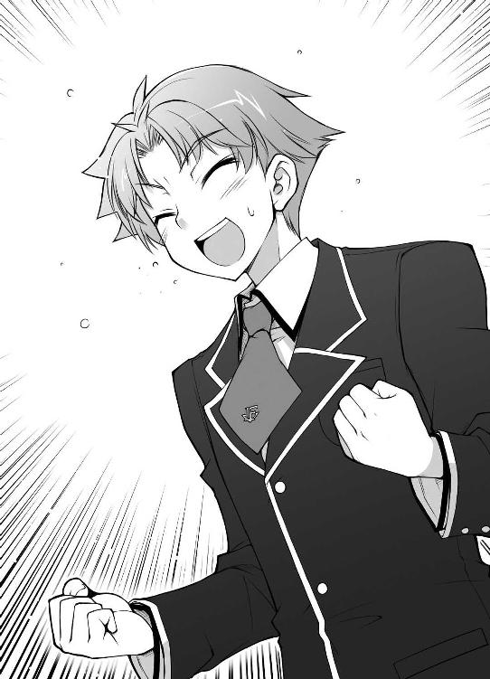
☆
「お兄ちゃん！ すっっっごい格好よかったよ！」
「ぐふっ！ は、葉月ちゃん......。今日も来てくれたんだ。どうもありがとう」
授賞式と簡単なデモンストレーションを終えて教室に戻る途中、凄い勢いで葉月ちゃんが飛びついてきた。わざわざ迎えに来てくれたみたいだ。身長差で頭が鳩尾に直撃したけど、ここはお兄さんのプライドでグッと我慢だ。
「二人とも、お疲れ様。凄かったわね」
「あはは。そうでもないよ」
「お兄ちゃん、凄いです～っ！」
「葉月ってば。アキが困ってるわよ？」
美波が僕にグリグリと頭を押し付けている葉月ちゃんを見て苦笑している。
これ以上鳩尾を圧迫されると致命傷になりかねないので、やんわりと彼女の身体を遠ざける。葉月ちゃんは不満げな表情を浮かべながらもおとなしく従ってくれた。
「あの、吉井君」
「あ、姫路さん。僕の活躍見てくれた？」
「はいっ！ とっても素敵でした！ 今度土屋君にビデオをコピーしてもらおうと思うくらい！」
目がキラキラと輝いている。こんなに嬉しい反応をしてくれるなんて、頑張った甲斐があるというもんだ。
「ビデオねぇ......。ムッツリーニ、撮影なんかしていたの？」
「はい。ずっと熱心に撮っていましたよ。ね？」
「............（プイッ）」
目を逸らすムッツリーニ。この男、さては試合そっちのけでミニスカートの観客とかを撮影していたな？
「坂本。アンタ試召戦争の時は散々だったくせに、今回は随分と日本史の点数が良かったわね」
「試召戦争の時に散々だったからこそ、だ。あれ以来、日本史は重点的にやってきたからな」
「それであんなに高得点だったの？」
「簡単に言うが大変だったぞ。特に先週例の（姫路の転校）話を明久が聞いてからは、殆ど毎晩ヤツの日本史の勉強に付き合わされたからな」
「ふぅん......。坂本はともかく、よくアキがそれだけであんな点数を取れたわね」
「アイツも自分で少しはやっていたみたいだからな。あとは、虚仮の一念ってヤツだろ？ 正直、もの凄い集中力だったぞ」
雄二と美波が姫路さんに背を向けてそんな会話をしている。姫路さんに僕らが転校の話を知っているってバレない為の配慮だろう。
「そ、それで、ですね......」
「ん？ ああ、なにかな？」
姫路さんが身体の前で指をもじもじと動かしている。なんというか、まるで先輩に告白する可愛い後輩みたいだ。
「後夜祭の時、お話があるので駐輪場まで来てください！」
トマトのように顔を真っ赤にしてそう告げると、彼女はダッシュでウェイトレス業務に戻っていった。
おおっ。本当に告白の前フリみたいだ。これは良いものを見た。
「............あれ？」
何か違和感があるな。なんだろう？ えーっと、さっきの台詞って姫路さんは誰に言ったんだっけ......？
『お前だ。吉井明久』
やぁ久しぶり僕の中の悪魔。相変わらずそうやって僕に甘言を吹き込もうとするんだね。キミは本当に悪魔だよ。
『いや、そうじゃなくて真実だ。一連の会話を思い出してみたらわかるだろう？』
一連の会話？ そういえば......
『噓だっ！ バカでブサイクで甲斐性なしの明久にそんなことあるわけないじゃないか！ 悪魔の言葉に惑わされちゃダメだよ！』
「テメェ表に出ろアホ天使！」
遅れないで出てきたと思ったら随分なことを言ってくれるじゃないか！
『それなら確認してみたらいいだろう。もし俺が間違っていたら姫路の手料理を完食してみせてやるよ』
『上等だよ！ それならもし僕が間違っていたら同じことをしてやる！』
ごめん。本体を無視して勝手に話を進めないで。そもそも、どっちに転んでも実行するのは僕なんだけど。
「雄二に明久。話し込んでいるところ悪いのじゃが、喫茶店を手伝ってくれんかの？ お主らの優勝のおかげで客が増えて大変なんじゃ」
と、自らの心を律する為に頭を悩ませていると、教室の方から秀吉がチャイナドレスの裾をきわどく翻しながら駆けてきた。......ところで、下着はどうしているんだろう？
「あ。そういえばそうだったわね。ほらアキ！ もう大会もないんだから、きっちり手伝ってもらうからね！」
「うん。今まであまり手伝えなかった分頑張るよ！」
「やれやれ。かったるいな」
「坂本も文句を言わないの！」
「わかっている。これも姫路の為、だろ？」
雄二が何か言いたげに僕を見てくるけど、敢えて無視する。
姫路さん、か。結局さっき言っていた話って一体なんなのだろう？
☆
『ただいまの時刻をもって、清涼祭の一般公開を終了しました。各生徒は速やかに撤収作業を行ってください』
「お、終わった......」
「さすがに疲れたのう......」
「............（コクコク）」
放送を聞いた途端、足から力が抜けていく。
怒濤の勢いでやってくるお客さんを案内してはさばいて、さばいては案内して。ここまでウェイターが疲れる仕事だとは思わなかった。
「そう言えば、姫路さんのお父さんはどうしたんだろう？」
「ん？ お義父さんが気になるのか？」
「なっ!? べ、べつにそういうわけじゃなくて！」
「後夜祭の後で話をしに行くと言っておったのう。結論はその時じゃな」
秀吉が返事をしてくれる。
そっか、まだわからないのか。大丈夫だとは思うけど、少し不安だな......。
「じゃ、ウチらは着替えてくるわ」
と、若干沈んでいるところに、更にご無体なお言葉が降りかかってきた。
「えぇっ!? どうして!?」
「どうして、って言われても......恥ずかしいからに決まってるでしょ？」
「すいません。すぐ戻りますので」
「待って！ 二人とも考え直すんだ！ カムバァーック！」
僕の必死の説得も虚しく、姫路さんと美波は無情にも着替えの為に去っていった。非常に残念だ。
ちなみに葉月ちゃんはそのままの格好で帰っていった。末恐ろしい子だ。
「ふむ。ならばワシも――」
「させるかっ！ せめて秀吉だけは着替えさせない！」
疲れた身体に鞭打って秀吉の足にタックル。せめてコイツだけでも！
「なっ!? 何をするのじゃ明久！」
「............（フルフル）」
あ。ムッツリーニも同じことをしてる。流石は我が同志よ。
「おい明久。遊んでないで学園長室に行くぞ」
そんな僕らを呆れたような目で見ているのは疲れを感じさせないタフなクラス代表。コイツは本当にデタラメな体力をしているな。
「学園長室じゃと？ 二人とも学園長に何か用でもあるのか？」
「ちょっとした取引の精算だ。喫茶店が忙しくて行けなかったからな。遅くなったが今から行こうと思う」
僕らなら問題なく動くとは言え、一応約束だ。最低限報告くらいはしておかないといけないし。
「ならばその間にワシは着替えを」
「そうはいかない！ 秀吉も一緒に連れて行く！」
「............（クイクイ）」
「あ、ムッツリーニも来る？」
「............（コクコク）」
やはり同志だ。愛好家の在り方をきちんと心得ている。
「困ったのう。雄二、なんとか言ってやってくれんか？」
「ん～......。ま、いいだろ。秀吉とムッツリーニも行こうぜ。明久を説得するのも面倒だし」
お、雄二にしては珍しく話がわかるじゃないか。
「やれやれ。雄二まで......。仕方ないのう。着替えは後回しじゃ」
「よし。ほら明久にムッツリーニ。足を放してやれ」
「うん」
「............（コクリ）」
「やれやれ。ワシのこんな姿を見てもなんの足しにもならんじゃろうに......」
決してそんなことはないと思う。
「失礼しまーす」
「邪魔するぞ」
ノックと挨拶をして学園長室の扉を開ける。
「お主ら、全く敬意を払っておらん気がするのじゃが......」
「そう？ きちんとノックをして挨拶したけど？」
それに雄二よりはマシなはずだ。
「アタシは前に返事を待つようにいったはずだがねぇ」
「あ、学園長。優勝の報告に来ました」
「言われなくてもわかっているよ。アンタたちに賞状を渡したのは誰だと思ってるんだい」
相変わらず遠慮のないババァだ。少しは相手に気を遣うことを覚えた方が良いと思う。
「それにしても、随分と仲間を引き連れてきたもんだねぇ」
ムッツリーニと秀吉を見て咎めるように言い捨てる。何か文句でもあるのだろうか。
「こいつらもババァのせいで迷惑を被ったからな。元凶の顔くらい拝んでもばちはあたらないはずだ」
「......ふん、そうかい。そいつは悪かったね」
つまらなそうに鼻を鳴らす。本当に可愛くないババァだ。可愛くても困るけどさ。
「それで、白金の腕輪は返却した方がいいですか？」
実は白金の腕輪というのは、高得点を叩き出した時に出てくる金の腕輪とは違って、召喚者自身が装備するものだったりする。
「いや、それは後でいいさね。どうせすぐに不具合は直せないんだ」
「む？ 明久、不具合とはなんじゃ？」
「あ、そっか。秀吉は知らなかったんだね。この白金の腕輪はちょっと欠陥品でね、得点の高い人が使うと暴走しちゃうんだよ」
「そうじゃったのか。......む？ どうしたのじゃ雄二？」
雄二がまた考え込むような仕草を見せている。この部屋で考え事をするのが好きなんだろうか？
「そういえば、なんであいつらは俺たちがババァとつながっていると知っていたんだ......？」
なにかブツブツ言っているけど放っておこう。どうせ説明してもらわないとわからないし。
「だから、教室の改修と交換条件で僕と雄二がこれをゲットするっていう取引を学園長と――」
「待て明久！ その話はマズい！」
「え？」
雄二が急に真剣な顔で怒鳴り出した。何かあったのか？
「............盗聴の気配」
「やられたか！」
ムッツリーニの言葉を受け、雄二が駆け出して学園長室の扉を開け放った。すると、複数の足音が遠ざかっていくのが伝わってきた。
「あいつら......！ 追うぞ明久！」
「ちょっ......雄二、どういうこと!?」
「盗聴だ！ あの連中、この部屋に盗聴器を仕掛けてやがったんだ！」
「なんだって!?」
「今の一連の会話も聞かれていたはずだ。もしも録音なんてされていたら、相当マズいことになる！」
「録音!? 冗談じゃない！」
そんなものが公開された日には今までの努力が全て水の泡だ！ 学園の信用は失墜して、学園の存続自体が怪しくなる。そうなったら姫路さん一人どころか全員が転校だ！なんとしても証拠を隠滅しないと！
「急げ！」
「わかった！ 秀吉とムッツリーニも協力して！」
「うむ！」
「............（コクリ）」
四人揃って学園長室を飛び出す。
「雄二！ 向こうは例の常夏コンビでしょ！」
「そうだ！ ちらっと例の髪形が見えたから間違いない！」
「ってコトは二人組だよね！ こっちも二人ずつに分かれよう！」
一人ずつで万が一返り討ちに遭うとまずい。ここは二手に分かれるのが得策だろう。
「ならばワシらにもそやつらの特徴を教えてくれ！」
「坊主頭と小さなモヒカンだよ！ 見たらすぐにわかる！」
「了解じゃ！ ワシとムッツリーニは外を探す！」
そうか。家に帰ってコピーでもされたら面倒だから、まずは学校の出口から潰していくのか。
「............明久」
「ん？」
走りながらムッツリーニが何かを手渡してきた。これは、
「ムッツリーニ愛用の双眼鏡？」
「............予備」
予備どころか学校には双眼鏡なんて一つもいらないと思うけど、ここはありがたく借りておこう。
「サンキュ、ムッツリーニ！」
「............この学校は気に入っている」
それは女の子と制服が可愛いからだろうか？ なんにせよ、この学園が潰れて欲しくないと思う気持ちは一緒だ。
「目標を見つけたら携帯に連絡を入れてくれ！」
「うむ！」
屋内組と屋外組に分かれ、校内を走り回る。本当にここ二日間は学校内を走ってばかりだ。
「明久！ まずは放送室を押さえるぞ！」
「オーケー！」
まずは最も危険な放送室に向かう。あんな会話を学園中に放送されたりしたら、口止めできないほどの人数が証人になってしまう。そうなれば録音された媒体を回収しても無駄になる。ここは踏ん張りどころだ。
～ 放送室 ～
「邪魔するぞ！」
「な、なんだお前ら!?」
「雄二！ ここにいるのは煙草吸ってるバカだけだし、置いてあるのは学園祭で密かに取引されていたアダルトＤＶＤくらいだ！」
「そうか！ とりあえず煙草とＤＶＤを押収して先を急ぐぞ！」
「そうだね！ 校則違反だもんね！」
「ど、どろぼう！ 泥棒！」
～ 廊下 ～
「あれ？ アキに坂本。そんなに急いでどうしたの？」
「ごめん美波！ ちょっと先を急ぐんでまた後で！」
「あ、待って。何か落としたわよ？ えーっと、『女子高生緊縛物語』。......何コレ？」
「逃げよう雄二！ なんだか美波を中心に闘気の渦が見えるんだ！」
「待ちなさい！ アンタなんでこんなものを持っているのよ！」
「うわぁっ！ 追ってきたぁ！」
～ ２‐Ａ教室前 ～
「......雄二」
「翔子！ 悪いが今はお前に構っていられない！」
「......大丈夫。市役所くらい一人で行ける。婚姻届を出すだけだから」
「何を言って――ってちょっと待て！ 俺はそんなものに判を押した覚えはないぞ」
「雄二！ ここにはいないから先を急ごう！」
「待て明久！ こっちはこっちで大変なことになっているんだ！」
「それじゃあまたね、霧島さん！」
「待て！ 頼むから待ってくれ！」
校舎を一階から四階まで探しても見つからないので、僕と雄二はグラウンドの隅などの人目につきにくいところを探していた。
「マズいな......。随分時間をロスした」
「そうだね。あいつら一体どこに――ん？」
何か見慣れないものが校庭の隅に置いてある。あれはなんだろう？
「見つけたか？ ......なんだ。ただの打ち上げ花火じゃないか」
「あ、恒例の締めに使うやつ？ へぇ～。こんなところに保管していたんだ」
テレビで見るような布に包まれた丸い玉が置いてある。
「あれ？ 打ち上げの為の大砲みたいなのが無いけど？」
「そっちは打ち上げ場所に設置してあるんだろ？ 一応花火は火薬の塊だからな。寸前まで火の気のないところに保管しておくのが鉄則だ」
火薬の塊か。そう考えるとダイナマイトと変わらないな。見た目が綺麗かどうかの違いがあるだけって感じだ。
「さすが試験校、お金があるね。こんなに大きな打ち上げ花火を用意しているなんて」
「感心している場合か？ そろそろ向こうも何か動き出すはずだと――」
Ｐｒｒｒｒｒ！
と、無機質な着信音が響く。発信源は僕のズボンのポケットに入っている携帯電話だ。
「もしもし？」
『見つけたぞい。さすがはムッツリーニじゃ。遠くまでよく見ておる』
この声は秀吉か。よくやってくれた！
「ナイス！ それで、あの連中はどこにいるの？」
『新校舎じゃ』
「新校舎だって？ そんな！ 僕と雄二が隅々まで――」
『違う。校舎の中ではない。新校舎の屋上じゃ！』
しまった。屋上までは探していない。
「雄二！ 新校舎の屋上！」
雄二にムッツリーニから受け取った双眼鏡を渡す。ここからでは裸眼じゃよくわからない。
「やべぇ！ あいつら、屋上の放送設備を準備していやがる！」
「なんだって!?」
向こうの狙いは後夜祭用の設備か！
「秀吉！ そっちはどこにいるの？」
『部室棟じゃ』
部室棟から屋上までは走っても五分はかかる。
「明久！ そろそろ放送を始めるみたいだぞ！」
僕らのいる場所からだって同じくらいはかかってしまう。向こうは今にも放送を始めるようだし、このままじゃ間に合わない。
この場所から放送を止めるには、どうしたら――
「......雄二」
「......やっぱりお前も考えたか」
「だよね。他に方法はないよね」
「そうだな。他に方法はないな」
「それじゃ、雄二。よろしく」
「了解だ。――起動」
「夏川、そっちの準備は大丈夫か？」
「大丈夫だ。へへっ。これが流れりゃ俺たちの逆転勝利だな」
「そうだな。これで受験勉強なんかしなくても――おぉぉぉっ!?」
「なんだよ常村。何をそんなに驚いて――ゲェッ!? マジかよぉっ!?」
「とにかく伏せろぉぉっ!?」
ドォン！ パラパラパラ
「外したぞ明久！ もうちょい下だ！」
双眼鏡を覗き込んでいる雄二から指示が出る。くそっ。一発目はハズレか！
『Ｆクラス 吉井明久 ＆ UNKNOWN
現代国語 70点 ＆ UNKNOWN』
表示される参考の点数。ランダムで教科が選ばれるって聞いていたけど、どうやら今回は現代国語だったようだ。日本史じゃなくて助かった。
「もうちょい下だね！」
さっきの感覚を思い出し、召喚獣に対して微調整を行う。
「いけ、点火っ！」
「了解！」
そしてライターで導火線に着火し、屋上目掛けて投げつける！
ヒュ～...... ドォン！
人の力では到底届かない位置――つまり屋上まで飛んでいき、打ち上げ花火が炸裂する。さすが人の何倍もの怪力だ。遠投距離も半端じゃない。
「よし！ スピーカーの破壊を確認！」
「花火って怖いなぁ......」
これが僕と雄二の最後の手段。名付けて打ち上げ花火アタックだ（良い子の皆は真似しちゃダメですよ？）。
「まだ放送機材が残っている！ さっきより右にも一撃くれてやれ！」
「おうっ！」
言われた通り、今度は右に方向を修正する。
なぜ教師もいないのに召喚獣を使えるのか？ それは雄二の持つ白金の腕輪のおかげだ。この腕輪は、召喚獣自体には何の能力も与えないが、所有者の傍に召喚獣を喚び出すことのできる場を作る力を持つ。要するに先生の代わりに立会人になれる力だ。
「次弾用意！」
「わかってる！」
もう一発、召喚獣に花火をしっかりと構えさせる。物に触れることができるっていうのは、こういう時はとても便利だ。
「いくよ雄二！」
「やれっ！」
「ファイヤー！」
二尺玉から伸びた導火線に没収品のライターで火を点し、思い切り投げつける。まさか花火の打ち上げを体験できるなんて思いもしなかった。
「よし、放送機材にも命中！ これで向こうは何もできなくなったはずだ！」
「そっか！ それじゃ、いい加減ここにいるのも危ないし」
「そうだな。常夏コンビに一発ブチ込んだら逃げるか」
「そうだね」
やっぱり悪は徹底的に滅ぼさないといけないよね、うん。
「今度はさっきより左だ。おっと、少し動き回ってやがる。もう少しだけ右に変更だ」
「......こっちかな？ それじゃ、止めの一発点火いきまーす！ せーの――」
「貴様らぁっ！ 何をやっているかぁっ！」
「うわぁっ！」
突然背後からドスの利いた怒鳴り声が。しまった、召喚獣の制御が！
ヒュ～...... ドォン！
「あ、明久！ 学校にブチ当たったぞ!?」
「ああっ！ 校舎がゴミのようだっ!?」
狙いがずれた花火は見事校舎の一角に激突。壁や扉を破壊して瓦礫の山を築き上げた。
「き、君達！ よりによって教頭室になんてことをしてくれたんだ！」
先生の慌てふためいた声が聞こえる。これほどの事件は文月学園創設以来初だろう。
「吉井に坂本ぉっ！ 貴様ら無事に帰ることができると思うなよ！」
そしてお馴染みの低い声。この声だけは聞きたくなかった。
「鉄人だ！ 逃げるぞ明久！」
「おうともさっ！」
「逃がすか！ 今日は絶対に帰らせん！」
「違うんですよ先生！ 僕らは学園の存続の為に」
「存続だと!? 馬鹿を言え！ たった今お前らが破壊したばかりだろうが！」
「そ、それには深いワケが！」
というか、原因の一端は鉄人にあると思う。
「恩に着るぞ明久！ 鉄人を引き付けてくれるとは！」
「しまった！ ズルいぞ雄二！ 先生、向こうに坂本が逃げました！」
「まずは貴様だ吉井ぃぃっ！」
「なんで僕なの!? 誰か、誰か助けてぇっ！ 変態教師に犯されそうですーっ！」
「貴様よりによってなんて悲鳴を上げるんだ！」
こうして鉄人との耐久マラソンが幕を開け、学園祭の思い出は恐怖と筋肉痛で埋め尽くされることになった。バカテスト 英語
それでは最後に、頭の体操として一風変わった英語のクイズをどうぞ。
【①】と【②】に当てはまる語を答えて下さい。
『マザー（母）から【①】を取ったら【②】（他人）です』
姫路瑞希の答え
『マザー（母）から【Ｍ】を取ったら【other】（他人）です』
教師のコメント
その通りです。Motherから『Ｍ』がなくなるとother（他人）という単語になります。こういった関連付けによる覚え方も知っておくと便利でしょう。
土屋康太の答え
『マザー（母）から【Ｍ】を取ったら【Ｓ】（他人）です』
教師のコメント
土屋君のお母さんが『ＭＳ』でも『ＳＭ』でも、先生はリアクションに困ります。
吉井明久の答え
『マザー（母）から【お金】を取ったら【親子の縁を切られるの】（他人）です』
教師のコメント
英語関係ないじゃないですか。「痛てて......。随分と殴られたよ......」
「くそっ、鉄人め。あの野郎は手加減を知らないのか」
結局逃げ切れずに捕まった僕と雄二。あれだけの騒ぎを起こしたのだから、良くて停学悪くて退学――と思っていたんだけど、実際は厳重注意という拍子抜けするほど軽い罰だった（ただし相手は鉄人だったので、顔の面積が倍になるほど殴られたけど）。
「ババアが手を回してくれたんだろうな」
「今回の処分のこと？ そうだろうね。そうじゃなければこんなに軽い処分なわけないもんね」
「これでババアも助かったんだ。感謝する気なんてさらさらないがな」
「僕らは学園長を救ったんだし、学園長が僕らを助けてくれるのはギブアンドテイクってやつだよね」
それと、早く解放されたのは教頭の件も大いに関係しているだろう。教頭室に偶然にも花火が飛び込んだおかげで、その修繕という名目でガサ入れが始まったからだ。こうなると学園長は徹底的に教頭を調べ上げて、その尻尾を摑むだろう。学園長は僕らに思わぬ借りが出来たってワケだ。
とは言っても、一応心の中で感謝だけはしておこう。取引の一環でも感謝の気持ちは忘れちゃいけないと思うから。
「む。やっと来たようじゃな。遅かったのう」
「............先に始めておいた」
「ああ、ゴメンゴメン。ちょっと鉄人がしつこくてさ」
集合場所である近所の公園は、既にＦクラスのメンバーで一杯になっていた。特に店も取らずに、お菓子とジュースを用意しての公園での打ち上げ。これはこれで楽しそうだ。あまりお金もかからないしね。
「お主ら、もはや学園中で知らぬ者はおらんほどの有名人になってしまったのう」
「............（コクコク）」
「......コイツと同じ扱いだとは不本意だ」
「それは僕の台詞だよ......」
僕の悪い噂がますます学園中に広まってしまった。在学中に彼女を作るのは絶望的かもしれない。
「あれだけのことをやっておいて、退学どころか停学にすらならないんだもの。妙な噂が流れて当然でしょ？ ウチだって気になるし」
美波が僕と雄二にジュースの入った紙コップを手渡してくる。
「ん、ありがと」
お礼を言って受け取る。口をつけてみると、中身はオレンジジュースだった。ちょっと苦いけど、さては安物を買ってきたな？
「そういえば、お店の売り上げってどうだったの？」
飲み物を持ってきたままその場に留まっている美波に水を向ける。一応実行委員だし、一番わかっているはずだ。
「そうね。凄いって程じゃなかったけど、たった二日間の稼ぎとしては結構な額になったんじゃないかしら」
美波が収支の書かれたノートを見せてくれる。確かに多くはないけど、二日間で得られた額としては決して少なくない。
「ふむ、どれどれ......？」
と、後ろから覗き込んできたのは雄二だ。
「この額だと、机と椅子は苦しいな。畳と卓袱台がせいぜいだ」
「う～ん......。やっぱり出だしの妨害が痛かったよね」
喫茶店ともなると、どんなに人気が出てもお客さんの回転に限界が出てくる。短期間ではこれくらいが限界だろう。やれやれ、最初のうちの暇な時間がもったい無かったな。
「すいません。遅くなりました～」
と、可愛らしい声が僕らの後ろから聞こえてくる。姫路さんも遅れてきたみたいだ。
「あ、瑞希。どうだった？」
「はいっ！ お父さんもわかってくれました！ 美波ちゃんの協力のおかげです！」
やった、と声を出しそうになってグッと堪える。
そっか。転校は阻止できたんだ。良かった......。
「姫路さん、お疲れ様」
「あ、吉井君......」
僕の顔を見て一瞬姫路さんが微妙な表情になった気がしたけど、すぐに元に戻った。気のせいかな？
「すいません。私も飲み物を貰っていいですか？ 沢山お話ししたのでのどが渇いちゃって」
「あ、うん。どうぞ」
持っていた紙コップを渡す。オレンジジュースなら飲めないこともないだろう。
「ありがとうございます」
受け取って、一息に飲み干す姫路さん。
「あ......っ！」
その様子を見て美波が声をあげる。
「ん？ 美波、どうかした？」
「あれ？ もしかして、美波ちゃんのだったんですか？」
姫路さんが首を傾げる。別に美波のものじゃないはず。だって、僕のジュースだったんだから。
「そ、そういうわけじゃないけど、その......」
美波にしては珍しく歯切れが悪い受け答えだ。
「美波も飲みたかったとか？」
「飲みたかった......？ そ、そうね！ 瑞希、悪いけどウチも一口貰っていい？」
「あ、ごめんなさい。全部飲んじゃったんです。新しいの貰ってきますから、ちょっと待っててくださいね」
姫路さんがジュースのまとめられているあたりに駆け寄っていく。フットワークの軽い良い子だな。
「......新しいのじゃ意味がないじゃない......」
はて、姫路さんが新しいジュースを取ってきてくれるというのに、随分と不満そうだ。一体何が気に入らないのやら。
「そういえばアキ。一つ言っておきたいことがあるんだけど......」
「ん？ 何？」
「昨日、変な連中から助けてくれた時、その......」
恥ずかしそうに美波が俯いている。顔も真っ赤だし、何を言おうとしているんだろう？
「その......、『よくも美波に手をあげてくれたな！』って怒ってくれたの、凄く嬉しかった......」
「えっ!? あ、いや、あれは、その......！」
「言いたかったのはそれだけっ！ じゃあね！」
そう言って美波は走って遠くに行ってしまった。な、なんだろう。この妙な気分は。
「きゃっ」
モヤモヤしていると、遠くから姫路さんの小さな悲鳴が聞こえてきた。目をやると、姫路さんが缶ジュースを持って転んでいる姿が見えた。怪我でもしていたら大変だ。
「姫路さん、大丈夫？」
駆け寄って手を差し出す。
「あ、はい。大丈夫れす......」
「そっか。それじゃ摑まって」
うん？ 大丈夫――れす？
「はい。それじゃ、ぎゅ～......」
「ひひひ、姫路さんっ!?」
手じゃなくて腰に摑まられた。この体勢だと、何か柔らかいものが思いっきり僕に当たっているような気がする！
「明久君は、いい匂いです～」
僕の胸に顔を埋めてゴロゴロしている姫路さん。このままじゃマズい。何がマズいって、僕の心拍数とか理性とかが。
「姫路さん、どうしちゃったの!?」
明らかに正気じゃない。顔も赤いし、目もトロンとしているし、まるで酔っ払っているみたいだ。
「ん？ 酔っ払い？」
と、さっきの飲み物を思い出す。あの苦味、もしや――酒かっ！ クラスの誰かが配っているジュースに酒を混ぜたな！
「明久君、私は怒っているんですよ？」
と、頰を膨らませる彼女。怒っているって、僕が何かしたっけ？ ドタバタしていて覚えてないけど。
「むぅ～っ！ 私が怒っている理由すらわからないんですねっ！」
「いひゃいれふ！ くひがのびそうれふ！」
頰を思い切り左右に引っ張られた。
「......約束」
「約束？」
「召喚大会から戻って来た時にした約束ですっ」
はて、約束。そういえば何かあったような......
「ああっ！ 校舎裏！」
「私ずっと待っていたのに、忘れるなんて酷いです！」
常夏コンビを追いかけるのに必死ですっかり頭から抜けていた！ そりゃ怒るよね。
「心の底からごめんなさい。その、話せないけど、色々と事情があって......」
姫路さんの目を見て謝る。くっつかれていなかったら土下座でもしたいくらいだ。
「む～......っ！ 許しませんっ！」
「そこをなんとか！」
「絶対ダメですっ！」
姫路さんのお怒りは収まる気配がない。そこまで大事な話だったなんて。約束破って悪いことをしたなぁ......。
「――なんて、冗談です」
「はぇ？」
と、思いも寄らない台詞に思わず間抜けな声を上げてしまう。
「実は、明久君がどうして約束を守れなかったのか、教えてもらっちゃいました」
「へ？ 誰に？」
これは衝撃の事実だ。一体どこのどいつが姫路さんに事情を話したんだ？
「だから、私が怒っているのは――私自身です」
彼女が視線を地面に送る。
「私、明久君が私の為に頑張ってくれているのに、約束の場所に来てくれなかったことに怒っていました」
「あ、いや。それはその、姫路さんは事情を......」
「事情を知らなかったなんて関係ないんです。私は私の為に頑張ってくれている人に対して怒っていた自分が許せないんです。だって――」
一息入れて、姫路さんは顔を上げて僕に目線を合わせてくる。
「だって、明久君は優しい人だって、前から知っていたんですから」
「そ、そんなことを気にしなくても」
まっすぐに目を見られて、逆に僕が目を逸らしてしまう。
「前の試召戦争の時も、今回も、私は助けられてばかりで、それなのに私は自分の想いを伝えることばかり考えていて......」
姫路さんが落としてしまった缶を拾い上げている。あまり見かけない缶だけど、えっと『オトナのオレンジジュース』って、これもよく見ると酒じゃないか！ 誰だジュースと間違えて買ってきたのは！
「姫路さん、その飲み物はやめておいた方が――」
僕の制止も届かず、プシュッと良い音を立ててプルトップが引き上げられる。
「だから、明久君に何かお礼をしたいんですっ」
そう言って、彼女は缶を口につけて一気に傾けた。うおぃっ!? 大丈夫なの!?
「......そういうわけですから、明久君」
「は、はい」
気のせいか、若干目が据わっているような。
「服を脱いでください」
「なにゆえっ!?」
言動が支離滅裂だ。凄い勢いで酔っているみたいだ。
「今からお礼をする為ですっ！ 抵抗しないで下さい！」
「ちょ、ちょっと待ってよ！ それ明らかにおかしいから！」
「おかしくありません！ 皆していることです！」
零距離で摑まられていたせいでボタンが次々と外されていく。この距離じゃうまく引き剝がせないし、これはマズい！
「お～、明久。楽しそうじゃないか」
タイミング良く、瓶を片手にした雄二が通りかかる。
「ゆ、雄二っ！ 丁度良かった！ 姫路さんをなんとかして！」
「ん？ そうだな......。だが、邪魔するのも悪いし......」
ニヤニヤと明らかにワルノリしている。この野郎......！
「それなら、せめて白金の腕輪を起動してよ！ 自分でなんとかするから！」
「ん？ そうか？ それなら――起動」
雄二が白金の腕輪でフィールドを作ってくれる。これでこの付近にいれば誰でも召喚獣を喚び出せる。それにしても、テストの点数を消費する行為なのにこんなに簡単に使ってくれるってコトは、コイツも酔っているのかもしれないな。
「ふぅ。僕の召喚獣が人に触れることができるやつで良かった。行くぞ――試獣召喚っ！」
喚び出された小さな僕が姫路さんに触れようと近付いてくる。こう見えても力は普通の人の何倍もある。ここは僕の勝ちだ！
「むぅ～......！ 邪魔ですっ！ 試獣召喚っ！」
――キュボッ
一瞬で消し炭にされる僕の召喚獣。
「あ、熱いっ！ 身体が焼けるように熱いぃぃっ！」
「それは服を着ているからですっ！」
いや、明らかに姫路さんの召喚獣のせいなんだけど！ フィードバックが辛すぎて気絶すらできない！
「とにかく、私は美波ちゃんには負けられないんですっ！ だから名前だって『明久君』って呼んじゃいます！」
もう会話が成り立っていない。姫路さん、お酒弱いんだなぁ。
「そして――いつかきっと――明久君と付き合っ――」
と、急に姫路さんの声が尻すぼみになっていく。いつか僕と、なんだろう？
「もしもし、姫路さん？」
「......ずっと......一緒に......」
すぅすぅと規則正しい呼吸音が聞こえてくる。どうやら眠ったみたいだ。ここまでお酒に弱いとなると、今後は飲ませないように気をつけておかないといけないな。男の前で眠っちゃうなんて危ないし。
「......ウチが少し目を離したら、その隙に一体何をして......！」
「え!? み、美波！ 違うんだ！ これは別に何も......！」
美波も酔っ払っていたみたいで、攻撃に手加減がなかった。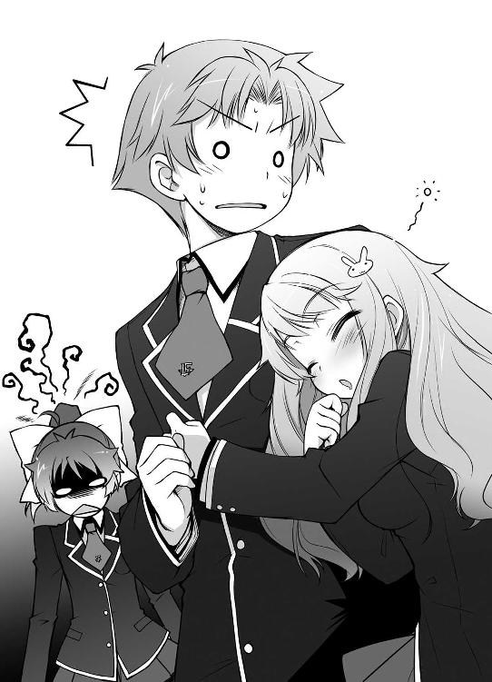
☆
「おはようございます」
「あ、姫路さん。おはよう」
翌朝、登校途中の坂で姫路さんに会った。朝からラッキーだ。
そうだ。丁度良いから今のうちに聞いておこう。
「姫路さん、ちょっと聞きたいことがあるんだけど」
「はい。なんですか？」
「昨夜言っていた、『いつかきっと――明久君と――』ってなんのこと？」
何かの約束かもしれないし、もしかしたら......それ以上に大切な何かが含まれていたのかもしれない。もしかしたらの考えに、否が応にも僕の鼓動が早まる。あの言葉の真意は......？
姫路さんが一瞬言葉に詰まって、口を動かす。
「すいません。私、昨夜のこと――ほとんど覚えていないんです」
「へ？」
緊張していた分、この答えに拍子抜けしてしまう。そういえば随分酔っていたみたいだし、無理もないよね。
「あ、そ、そうだよね。姫路さんお酒弱いもんね」
「覚えてなくてごめんなさい。明久君」
「いやいや、別に――」
ん？ 明久君？
「......雄二。婚姻届が受理されなかった。残念......」
「そりゃそうだろ。冷静に考えれば、俺はまだ十七になったばかりだしな」
「......だから、来年まで大切に保管することにした。今はまだ、ただの許婚」
「翔子。今度お前の家に遊びに行っても良いか？」
「......いいけど、婚姻届は弁護士に預けてあって家にはない」
「随分厳重な保管だなオイ！」
どこかから聞き覚えのある声が聞こえてくる。霧島さんと雄二みたいだ。雄二もいい加減無駄な抵抗だって諦めたら良いのに。チケットの件でも随分足掻いていたみたいだけど。
「っと、そう言えば、プレミアムチケットをどうしよう？」
雄二は持っていると危ないとかなんとか言って、結局僕にくれたんだよな。これを使って一緒に行くとなると......
「はい？ なんですか？」
「あ、いや。なんでもないよ」
無意識に姫路さんの顔をジッと見つめていたみたいだ。
けど、このチケットを使ったら色々とフォローが入って、逆に気まずくなるかもしれないし......。
「よし。これはやっぱり、必要としている人にあげるべきだよね」
「？ 必要としている人？ なんのことですか？」
「素直じゃない男と、一途な女の子への贈り物ってところかな」
「？？？」
姫路さんがなんのことだかわからない、といった顔をしている。ちょっと惜しい気もするけど、これは霧島さんにプレゼントしよう。僕の方は......とりあえず今はこの距離にいられるだけでも満足だから。
「そう言えば、今朝は職員室に呼ばれていたんでした。すいませんけど、先に行きますね？」
「あ、うん。行ってらっしゃい」
姫路さんが小走りに遠ざかっていく。その時、
「――きです。明久君」
彼女が何か呟いたけれど、それは朝の喧騒で聞こえなかった。あとがき 井上堅二
本作を手にとって頂き、誠にありがとうございます。小説担当の井上堅二という者です。まさかこんなに早く二巻を出せるとは思いませんでした。これもひとえに皆様のご声援のお陰です。今一度心より御礼申し上げます。
さてさて。こんな堅苦しい挨拶ばかりでは読む方も書く方も疲れてしまうので、簡単なお話でもさせてもらいます。本編のネタバレは含みませんのでご安心下さいませ。
僕は一人暮らしをしているのですが、その僕の住居にある日宅急便が届きました。差出人は母親。どうやら実家からの救援物資のようです。内容の欄には『食料品』と書いてありました。なんともありがたいことです。
カッターでテープを切り、母親に感謝しながら食料品とやらを取り出します。さてさて。どんな食べ物を送ってくれたのでしょうか？ 期待に胸が躍ります。
そんな気持ちを抱いている僕の前に最初に現れたものは、
『枕カバー』
いきなりの変化球にビックリです。
母さん。あなたは僕が何を食べて生きていると思っているんですか？ どんなに日々苦しい生活を送っていても、枕カバーは食べません。一応18年くらいは一緒に生活していましたが、一度たりとも枕カバーで栄養を摂取したことはありませんでしたよね？
まぁ、きっと生活雑貨も一緒に入れてくれたのでしょう。折角の心遣いなのでありがたく使わせて頂くとします。気を取り直して中身の確認を再開しましょう。
続いてダンボール箱から出てきたものは
『みかん・せんべい・缶詰』
こちらは正しい食料品です。みかんは少々中でぶつかってしまったのか傷んでいる部分もありますが許容範囲です。こういったサイドメニュー的な救援物資は素直に嬉しいものです。なかなか一人暮らしだと買う機会がありませんので。更なる食料品を求めて箱の奥に手を伸ばします。
ダンボール箱の奥からは見覚えのあるものが出てきました。
『枕カバー（青）』
一番最初に出てきましたが、こちらは色違いです。既に所有している物を含めると四枚になってしまいましたが、確かに洗濯時の予備があっても良いので、ここは喜んでおくとしましょう。
そして、お次の品。
『枕カバー（水色）』
いったいどれだけ僕が枕を汚すと思っているのでしょうか？ そろそろ自分の親が少しおかしいという現実から目を逸らしきれなくなってきました。
その後は『叉焼』やら『枕カバー（ピンク）』やらが出てきました。一通り中身を確認してお礼の電話をします。中身のほとんどが枕カバーであっても贈り物は贈り物です。きちんとお礼を言うとしましょう。
僕「もしもし、母さん？」
母『あ、荷物届いたの？』
僕「うん。受け取ったよ。ありがとう」
母『傷まないうちに食べちゃいなさい』
僕「枕カバー以外はそうさせてもらうよ」
母『特に叉焼はきちんと焼いてから食べなさいよ？ 消費期限切れてるんだから』
僕「あ、そうなんだ。わかったよ。それじゃ、またね」
母『はいはい。またね』 ――ガチャッ
............消費期限切れ？
わかりません。どうして消費期限切れの食べ物を送ってくるのか、母の考えが全くわかりません。
母は言いました。『きちんと焼いてから食べなさいよ？』
いや、焼いた焼かないの問題じゃないでしょう。
あの親にしてこの子供あり。僕の小説に知性が著しく不足しているのは遺伝が原因かもしれません。八割がたは自前のような気もしますが。
閑話休題。
一巻を読んで下さった皆様、本当にありがとうございます。続編希望のお葉書も沢山頂き、なんとか二巻の刊行と相成りました。ファンレターをくれた広島県のＳ君。貴方のお手紙が僕にとって初めてのファンレターです。大事に保管させて頂きますね。
他にもチョイ役の須川について葉書を書いてくれた櫂末高彰君、どうもありがと――ってちょっと待ってください！ 櫂末先生、アナタ何してるんですか!? 『学校の階段』が映画化されて忙しいはずなのに、僕の本なんて読んでいてもいいんですか!? 今後はイラストを眺めるだけに留めておくべきだと思います。
いつも可愛いイラストを描いてくれる葉賀さん。貴方と本を作ることができて大変嬉しいです。感謝の念でいっぱいです。また飲みに行きましょう！
担当のＭ様、デザイナーのかがや様、諸先輩方、出版に関わった多くの皆様。数々のご協力ありがとうございます。おかげで無事に続編を出すことができました。
そして、本作を手にとって下さった読者の皆様。この言い尽くせない感謝の気持ちは作品に反映していきたいと思います。今後も頑張ります！
そんなわけで、出せることができたら三巻でお会いしましょう。って、その前に五月刊行予定のムック、『ＦＢＳＰ』がありましたね。そちらでも短編を一本書かせて頂いたので宜しければご覧下さい。特に冒頭の頭文字Ｍの書いたラブレターは、力が入っています。
（ちなみに、出せるのであれば三巻は二巻よりもさらにストーリーをバカな感じにするつもりです。担当さんが許可してくれるといいなぁ......）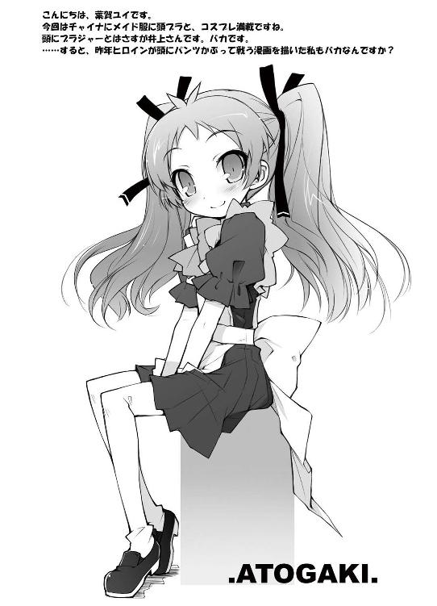
著者
Kenji Inoue
東京生まれの札幌育ち。葉賀ユイさんの描く木下秀吉が好きすぎます。２巻を書くにあたり、参考資料として高校時代の教科書を発掘。重要ポイントに蛍光ペンでチェックを入れていたようで、結構使える。と思ったら４ページ目からノーマーク。ギブアップが早過ぎませんか？ 第８回えんため大賞編集部特別賞受賞、本作はギブせず頑張ります。
イラスト
Yui Haga
東京生まれの千葉育ち。今年に入って、休む間もなく仕事漬けのヒキコモリ生活。そんな最近の唯一の息抜きは、某３６０の某ＦＰＳオンライン対戦で同業仲間と遊ぶこと。Ｋ星さんを狩り、原Ｄさんに蹂躙される日々を送っています。助けてイノウエモーン！
電子版 ファミ通文庫
バカとテストと召喚獣2
著者／井上堅二
イラスト／葉賀ユイ
発行者 浜村弘一
発行所 株式会社 エンターブレイン
http://www.enterbrain.co.jp/
デザイン かがやひろし
(c)2007 Kenji Inoue
PUBLISHED BY ENTERBRAIN, INC.
本電子書籍はファミ通文庫『バカとテストと召喚獣2』
（2007年5月10日発行 初刷）を元にして制作しております。